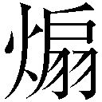
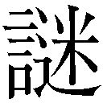

| 不戦無敵の影殺師 ガガガ文庫 不戦無敵の影殺師 | |
| 森田季節 | |
| (2014) | |
小学館ｅＢｏｏｋｓ
不戦無敵の影殺師
森田季節
イラスト にぃと
主な登場人物
冬川朱雀（suzaku fuyukawa）
主人公。暗殺異能力者の末裔で、煌霊遣い。小手毬という少女を煌霊として使役し戦う。
登録異能力名【第二の生の契約者】
小手毬（kodemari）
朱雀の煌霊。難病で命を落としたが、朱雀の能力により復活。肉体は15歳の少女。
登録異能力名【不殺の影殺師】
徒花舞花（maika adabana）
風を操る異能力者。同期の朱雀のことを心配し、なにかと世話を焼く。
登録異能力名【旋風のたわむれ】
霧原みぞれ（mizore kirihara）
空間を凍らせる異能力者。現役女子高校生で、朱雀の後輩だがアイドル的人気。
登録異能力名【空間凍結】
滝ヶ峰万里（banri takigamine）
炎を操る異能力者。朱雀の事務所の先輩で稼ぎ頭。戦闘に長け、現代の異能力者の中で最強と言われている。
登録異能力名【世界切断の斬炎】
柏木仔犬丸（koinumaru kashiwagi）
自らを分身させる異能力者。能力とは関係なくイケメンなので人気。中身は重度のオタク。
登録異能力名【流麗疾駆の幻影】
淵堂百穴（hyakketsu endou）
闇を操る異能力者。滝ヶ峰と昔からの知り合い。相当な実力の持ち主だが、黒い噂がつきまとう。
登録異能力名【鋭利で茫漠たる闇】
小説やマンガに出てくる異能力者のことが嫌いだ。
とくに敵ではなくて、味方のほうが。
あいつらはとにかく善人すぎる。
誰かを守るためとか、そんな理由だけで見返りもなく強敵に立ち向かう。
本物の異能力者はもっと打算的だ。
自分の仕事がどれだけ金になるか考えて動くし、自分より人気のある奴に嫉妬するし、合コンの誘いがあれば喜んで飛んでいく。
それが現実だ。
理由は、異能力者の本性が腐ってるから──というわけじゃない。
俺も異能力者の事務所に入った直後はそれなりにまっすぐだった。たぶん、体の半分は夢や希望でできていた。安っぽい損得勘定なんて持ってなかった。
それが業界に長くいるうちに、だんだんとダメになってしまうのだ。理想と現実のギャップに失望し、情熱は冷め、「楽なこと」と「楽しいこと」だけを探す人間に成り果てる。たとえば、必ず二度寝して朝十時に起きるとか、酒を呑むと毎回終電まで粘るとか。
だが、未来ある有能な若者はそうなってはいけないのだ。
後輩には立派で模範的な異能力者に育っていただきたい。
みんなのあこがれや目標となるような人間になって、この異能力者業界をプラスの方向に引っ張っていってほしい。「お金のためではなく、社会のためにやってます」とか言ってほしい。やたらとチャリティイベントとか出てほしい。
──と言っても、もちろん楽な話じゃない。俺は現実に勝てなかった......。
だからこそ、夢を追い求める生き方は美しいと俺は思う。
俺は小説やマンガに出てくる異能力者のことは嫌いだが、異能力者の小説やマンガは大好きなんだよ。世界や仲間を救うためだけに力を振るう、あんなまっすぐな異能力者を自分の手で育てられたら、先輩としてこれ以上の喜びはない。
──などという決意を研修前にトイレの個室で固めていた。個室は考え事にはちょうどいい。とくに俺の場合、パートナーがいるから、本当に一人になれるのは、ここぐらいだ。
よし、異能力者の先輩として、新人たちを正しい方向に導いてやる──
「正直さあ、研修の教官、無名じゃね？ マジしょぼくね？」
............なんだ、この声は？
「教官の能力、人形を使うんだって。小さい女の子の人形」「なんだ、ロリコンかよ。ザコ、ザコ」「俺たちでも余裕で倒せるレベルっしょ」「事故と見せかけてつぶしにいかない？」「それで雑誌の取材で、先輩にも大勝利とか語っちゃおうか」「それ、マジで名案！」
そんな新人の声が聞こえてきた。連れションにやってきたらしい。
そーっとトイレの扉の上からのぞいてみたが、髪を染めたチャラい感じの奴らだった。
「あのさ、今度女子大生との合コンあるんだけど、行かない？」「行く行く、絶対行く！」「でも、俺、一人にしぼれるかな～」「じゃあ、二股っしょ」「お前、マジ頭いい！」
ああ、俺は間違っていたんだな。
異能力者は最初から腐ってる。業界のせいとかにしちゃいけない。
よし、方針を変更する。
腐ったまま社会に出たら、ロクなことにならないと気づかせてやろう。だって、腐ったミカンは周囲のミカンも腐らせるって言うし。何よりチャラい奴ムカつくし。
社会は厳しい場所だと教えるのも先輩の役目だ。
──そんな怒りを胸に抱いたまま、俺は研修会場のトレーニングルームに入った。
「君たちが今期の新人だな。俺が研修の教官、冬川朱雀だ」
新人たちは一応「お願いしまーす」と礼をするが、お前らの本心を俺は知っている。
それと、わかってたことだが、新人たちの視線は俺より目立つ隣に向けられている。
「このゴシックでエレガントでロリータな女の子が俺のパートナーの小手毬。見た目は高校生ぐらいだけど、君たちよりは長生きだ」
「小手毬です。よろしくお願いします」
丁重に小手毬が頭を下げた。こいつは礼儀作法にうるさいからな。
ショーケースに展示したいぐらい、見事な金髪碧眼の美少女と、全然ぱっとしない俺との組み合わせは、なかなかインパクトがある。
「高校生の頃、難病で命を落としかけたところを、マスターにより煌霊として強制的に復活させられました。そのあと、戦闘訓練を受け、十年近くマスターのパートナーとして戦ってまいりました。至らぬことも多いかと思いますが、マスターともどもよろしくお願いいたします。さて、このような服装をしていますが、これは私の実の母がフランス人だったからです。母の故郷はフランスのルーアンという街で──」
「小手毬の自己紹介はしばらく続くので、無視してくれていい」
こいつは見た目美少女のくせに話が朝礼の時の校長なみに長い。乾杯の前に話をさせてはいけないタイプだ。
「マスターのようにダメな先輩の話より、私の話のほうが後輩の方も気になると思います」
失礼なことを言っているが、無視だ無視。
「無視するおつもりですか」
そうだ。お前と話してると進まん。時間が延びても残業代とか出ないし。
「マスターの今日の夕飯は、野菜たっぷりラーメン麵抜きにします」
「......それはやめてください」
結局、無視できなかった。
だが、小手毬の自己紹介が長いのは事実だから、俺は話を続けることにする。
「さて、この研修の前半は実務に関する心構えというテーマだったが、内容を変更する。君たちの実力がどれほどのものか知らんが、君たち五人で俺を半殺しにしてみろ。以上だ」
新人たちを沈黙が包む。
「本当にいいんですか？ やりますよ、俺たち」と金髪の奴が、後ろ髪をかきあげながら言った。あらゆるしぐさがチャラい。
「恥かいちゃいますよ、パイセン」と、緑色の髪の奴が言った。なんで緑なんだよ。光合成でもする気かよ。あと、パイセンって言い方、マジでムカつくからやめろ。
「わかりやすくていいだろ。ああ、もう攻めてきていいぞ。それとも、実戦をやったことがないから怖いかな？」
せっかくだから、俺も挑発してやる。
「もちろん、小手毬のほうも狙ってもらっていい。こいつも俺の異能力の一部だからな」
「え～。俺、女の子を泣かすの、趣味じゃないんだけどな～」とピアスをしている奴が言った。いいよ、女みたいに泣くのはお前のほうだから。
「一撃で決めちゃいますよ」と髪をトサカみたいに伸ばし、長い槍を持った奴が手をこきこき鳴らした。その髪型、小物臭出しすぎだろ。
髪を女みたいに伸ばした奴が、何か呪文のようなものを唱えはじめた。
よし、あいつからいくか。
「そうそう、自己紹介で言い忘れてたことがあった。俺の嫌いなものは──陰口なんだ。とくにトイレで聞く陰口は苦手でね」
おっ、一人、トイレで聞かれてたことに気づいたって顔をしたな。
まあ、今から謝っても許さないけどな。
「やれ、小手毬」
俺の言葉が終わる頃には、そこに小手毬の姿はない。
小手毬は飛ぶように地を駆ける。装飾過多なゴスロリ服からは信じられないほどの神速。
もう決着はついたようなものだ。
まず、髪の長い正面の奴。
──ドォンッッッ！
その心臓に小手毬は右の拳を叩きこむ。
「うっ......あっ......」
弱々しい声をあげて一人目が沈んだ時には、小手毬は次の獲物をしとめにかかっている。
「マスターには人間として欠けたところがたくさんありますが──あなたたちより、実力では勝っているようですっ！ 〈二足歩行の蜘蛛〉！」
細い鉄線が小手毬の袖からほどけるように伸びて──緑色した髪の男の首に巻きつく。多数の糸や鉄線を小手毬は服の中に隠し持っている。
ぐいっと小手毬はその鉄線を引く。
同時に緑髪の男が首を押さえて失神する。はい、二人目。
「くそ！ 人形ごときが舐めやがって！」
後ろにいたピアスの男が手に炎を宿らせる。おお、さすが若いうちからブイブイ言わせてるだけあって、五属性系のメジャーな能力をお使いになるようだ。
「小手毬、下から潜りこめ！」
小手毬が腰を曲げ、前かがみになって、駆ける。
男は火球でも叩きこむつもりなんだろう。にやっと笑って小手毬を待っている。
「新人の頃から待ちの姿勢ってのは感心しないな」
小手毬が高く跳躍。
驚いているピアスの男にかかとを叩きこむ。
水平方向から垂直方向へと攻撃の視点を変える。基本中の基本だ。
「『下から潜りこめ』は『上から攻めろ』の暗号です。あと、もう一つ。私は人形ではありません。生身の体です」
見下した視線を、小手毬は意識のない三人目に向ける。
「ただ──心臓が動いてないだけです。マスターは煌霊遣いですので。マスター冬川朱雀の登録異能力名は【第二の生の契約者】」
四人目の金髪があわてて攻撃を小手毬に仕掛けようとしたので、ヒジを顔に叩きこんだ。
──小手毬じゃなくて、俺がな。
「俺は小手毬のコーチじゃないぞ。二人でセットの異能力者なんだよ！」
さて、最後のトサカ頭はどうやって、つぶそうかな──と考えている間に、小手毬がそいつの武器だった槍を糸でかすめとっていた。あっさり武器奪われんなよ。やっぱり、小物だな。
「先ほどはマスターのせいで説明が途中になってしまいましたが、私も【不殺の影殺師】という名で登録していますので」
槍を自分の手までたぐりよせた小手毬は、つまらないもののように後ろに投げ捨てた。
「名前のとおり、まだ犠牲者を出したことはないですが、もちろん最初の犠牲者になってもらってけっこうですよ？」
凄絶な殺気を小手毬は男にぶつける。
それだけで男は腰が抜けたらしく、へたりこんだ。
その首に鉄線が無慈悲に絡みつく。
生殺与奪の権を俺たちに握られたトサカ頭の眼前に、俺はナイフを突きつける。
黒光りする不穏な刀身。
それは冬川家の──つまり、暗殺者の末裔の──象徴だ。
「お前らも強いふりはできるだろうよ。でも、俺は芝居の世界とは違うところで生きてきたんだ。殺すためだけの俺の技術に勝てるわけないだろ。影殺師──俺は暗殺者の末裔なんだ」
「す......すみませんでした......俺たちが舐めてました......」
「悪いな、お前らの異能力、見る前に終わっちゃいそうだ。雑誌の撮影なら異能力を使うまで待ってもらえるもんな。実戦はそんなに甘くないんだよ」
「なんでこの先輩、こんなに強いんだよ......無名じゃないのかよ......」
トサカ頭が尻 の姿勢で後ずさりながら、言ってはならないことを言った。
の姿勢で後ずさりながら、言ってはならないことを言った。
「お前、誰が無名だって？」
視線だけでそいつの魂を破壊できそうなぐらい、にらみつけた。
「俺は無名じゃない。白龍プロダクションの名鑑にちゃんと載ってる」
「それは所属異能力者が全員載るもんでしょ！」
「いや、ほかにも............ええと、その......」
いかん、根拠が出てこないぞ。
「無名であることと、実力の有無は関係ありません。歌の上手い順に歌手のＣＤが売れるわけではありません。文章の上手い順に小説が売れるわけではありません。料理の美味しい順に飲食店が繁盛するわけではありません」
「フォローありがとう、小手毬。でも、俺が無名であることまで認めなくていい」
小手毬も最後の一人に近づいていく。
もちろん友好のあかしとして握手をするためではなく、意識を失わせるためだ。
「マスターを半殺しにするという研修は失敗のようですね」
「この研修、ハードすぎますよ......。顔にケガでもしたら、ヤバイっすよ......」
取材がどうとか得意げに話していた新人が半泣きになっている。
「お前さ、趣旨を間違えてるよ。この研修は、お前らを鍛える訓練じゃない」
これは本当だ。
俺が研修メニューを変更する前から、まともなトレーニングなど想定されてなかった。もちろん、さらに徹底的に過激にはしたけどな。
「えっ？ この研修は、いざという時に備えた心構えを身につけるって聞きましたけど......」
「そう、それで正解だ。死と隣り合わせの業界だって体に教えこむ研修なんだ」
「なお、教官には仕事の入っていない暇な異能力者が割り当てられます」
小手毬にひどいことを言われたので、腹いせに最後の一人は少しきつめに攻撃しよう。
「やれ、小手毬」
五人目の首に巻きついていた鉄線が、ぎゅっと締まる。
「ちょっとゆるめろ、締めろ、ゆるめ、締め、ゆるめ締めゆるめ締め──あ、落ちた」
全員の意識がないのを確認してから、殺気を解いた。
新人たちよ、これが現実だ。ゆっくりと不要になったナイフを収める。この時代に殺しでもしたら大変だ。このナイフは脅しのための用途しかない。
「一分かからなかったか。これでギャラがもらえるんだから、悪くはないな」
「私は服が汚れなかったので、ほっとしています」
小手毬も乱れた服をなおしている。こいつは身だしなみに時間がかかる。
「新人指導に二年連続でマスターが呼ばれるというのは相当なことです。事務所も新人の素行不良を放っておけないと思ったのでしょうね」
小手毬の冷静な分析のとおりだろう。
「これで俺の株も少しは上がるな」
──結論から言うと、むしろ下がった。
「もう！ 冬川さん、困りますよ！」
事務局の高村さん（女性・独身・年齢不詳）がイライラした顔でやってきた。
「俺、何か問題ありましたか......？ 社内の研修施設はどれだけ異能力を使っても、異能力制限法に引っかからないから、セーフですよね？」
「法的に大丈夫だからって、行きすぎた指導だとか、とんだブラック企業だとか、新人がマスコミに訴えたらどうなります!? 実力差がわかっていながら、過剰な攻撃をしたと思われれば、それだけでも十二分に犯罪ですよ！ うちはクリーンな企業なんです！ 暴力はアウトです！」
そんな......。この程度でも、法律違反のリスクがあるなんて......。
「こういう危険なやり方をするようなら、事務所内部の仕事も提供できなくなりますからね！ 本当に、本当に、本当に気をつけてくださいね！」
ぷんすか肩をいからせながら、高村さんは帰っていかれた──と思ったら、何かリーフレットを持って、戻ってきた。
「すでに知ってるとは思いますけど、異能力制限法の仕組みについてちゃんと復習しておいてください！」
リーフレット一枚が押しつけられる。タイトルはそのまんま『異能力制限法について』。ああ、これ、過去に高村さんから二回ぐらい渡された記憶がある。
表の面には見飽きたルールが書いてある。
異能力制限法
① 異能力者は、一般人に対して許可なく異能力を使ってはならない。
② 異能力者は、その力を使って他人の生命、身体もしくは財産を侵害するおそれのある行為をはたらいてはならない。
③ 異能力者は、届け出の手続きをせずに商業活動を行ってはならない。
以下、罰則規定が細かく続くが、とにかく無許可で異能力を使えば、罰が厳しくなりますよということが書いてある。一般人にとって、異能力者は武器を持って歩いてる人間と同じだからな。武器の使用にも規制があるというわけだ。
大昔、俺たち異能力者は英雄だった。
源平の合戦にも、関ヶ原にも異能力者は多数動員されて、その力を見せつけた。異能力者であること自体が誇りになる時代があった。
しかし、平和な時代になり、この法律ができてからすべては変わった。
俺たち異能力者は警備やボディガードの世界か、雑誌やテレビ、広い意味での見世物の世界でしか生きていけなくなった。
力を大幅に縮小したうえでの平和利用か、スポットライトの当たるショーか、それ以外の場所で異能力を使うことはできない。
そして、煌霊遣いという俺の力は平和利用にもショーにも向かない。
この俺、冬川朱雀の力は本物だ。
どんな異能力者と戦っても、負けるつもりはない。
問題は、それじゃ商売にはならないってことだ。
俺の異能力は、簡単に言えば、死にかけていた人間を生かす代わりに雇用契約を結んで戦わせるもの。しかも、見た目がいたいけな少女に危険なことをやらせるとあれば、俺は何重にも非人道的に見えるらしい。さらに、暗殺者の末裔ときている。イメージが悪い。
攻撃も暗殺技術が元だから、派手さを抑えた地味なもの。ショーにも向かない。
「小手毬、異能力制限法が廃止されたら、俺だってもっと活躍できるんだ。俺は悪くない。時代が悪いんだ」
「マスター、好きなだけ食べていいお菓子の家がどこかにあったらいいですねえ」
真顔で、内容だけなら容姿に合致していることを小手毬はつぶやく。
「そんな夢みたいな話、あるわけないだろ」
「マスターが今言った望みと同じですよ」
「まあ............そうかもな......」
異能力者が派手に戦って活躍する時代なんて、きっと永久にやってこない。
それこそ、小説やマンガの世界だけだ。
そこでも、人殺しが前提の異能力者はヒーローになれなさそうだ。
だから、俺は小説やマンガの異能力者が嫌いなんだ。
弾を入れずに連射ができるライフル。
そんなライフルがあったら便利じゃないか。戦場で大活躍じゃないか。
だけど、敵が持っているなら、話は別だ。反則だ卑怯だルール違反だ。俺は叫ぶ。殺されたくないから、全力で叫ぶ。
ライフルを持った男（顔はよく見えない）は、そんな俺に笑って言う。
──これは異能力なんだよ。
やめろ、撃つな！ 異能力制限法に引っかかるぞ！ 被害者が出なくても傷つける意思がある、もしくは明確な脅しであると見なされた時点で十年以下の懲役、あるいは一千万円以下の罰金！ 決断は一秒、後悔は永遠だ！
──知るか。お前も異能力で戦えばいいだろ。でないと、死ぬぞ。
そいつが笑って、続ける。
──異能力者なのに異能力をまともに使わないことが賞賛されるだなんて間違ってるだろ。「異能力の平和利用」だとか「テレビ映るのが目的」だとか「撮影は事務所通してください」だとか、ふざけたこと言いやがって。俺たちはスポーツマンじゃねえ、まして芸能人でもねえ。戦闘に特化した人間だろ。命のやりとりでこそ、俺たちは輝くんだよ。
あまりに正論で言葉が出なかった。俺みたいなことを言う奴だ。
──なあ、筋金入りの煌霊遣いの俺よ、なんとか言えよ、この俺、冬川朱雀。
敵は俺と同じ顔をしている。冬川朱雀の顔をしている。
──平和ボケしてるなら、もういい。死ね。事務所で飼い殺されてろ。
ライフルが連射される。小さな塊がいくつも俺の体を貫通する。
蜂の巣になる。スポンジになる。死ぬ。
そんな悪夢を見ていた。
東京都の西の隅、八王子駅から徒歩五分の十畳のワンルームアパートだ。ライフルも銃弾もない。そんなもの持ってても銃刀法違反で捕まるだけだ。
「昼寝してたら、寝すぎた......」
新人研修で新宿の事務所まで出て、それから電車に乗ってマンションまで戻って、眠くなってきて、三十分だけと思って横になって、結局三時間も眠っていたらしい。
台所では換気扇がゴーゴーと世界の終わりのような音をたてている。
エプロンをつけた小手毬が夕飯の準備をしていた。
ゴス系の服をわざわざ家でも着ているのは、ある意味ポリシーを守っていて偉いと思う。ただ、服が汚れないように、エプロンでしっかりガードしていた。
「おはよう──じゃないか。でも、家の中でこんばんはって言わないよな」
台所奥にある冷蔵庫のお茶を取るために、必然的に小手毬のそばを通る。
「よくそんなに眠れますね。久しぶりのお仕事でお疲れでしたか？」
まな板の上でニンジンを切りながら、小手毬は顔も向けずに言う。小手毬の皮肉はあいさつみたいなものなので、俺も気にしていない。お茶の容器を取り出して、コップに注ぐ。
「小手毬はもう少し人を傷つけない会話方法を学べ。他人に厳しすぎる」
話している間、ずっと小手毬はまな板から目を離さない。俺が見えるのは、小手毬の背中に流れる髪だけだ。
「失礼しました。今度から無職のマスターが傷つかない言葉を考えます」
「無職じゃない！ 事務所、今年で七年目！ 仕事が少ないだけ！ 無職とは全然違う！」
「そうですね。無職なのと仕事が少ないのでは、ヒラメとカレイ、タカとワシほどの差がありますね」
それ、ほぼ差がないじゃねえか。
「仕事に比べて、朝も夜もパソコンやスマホを使用する時間が長すぎる気がして事実誤認をいたしました。申し訳ありません」
そうだ、あとで「仕事忙しかった」とＳＮＳで発言しておかねば。暇っぽく見えないようにしないとな。それと誰か同業者が俺のこと、つぶやいてないか、チェックしておこう。
「わかった......。ＳＮＳとゲームは一日八時間までにする」
小手毬の手が止まった。
時間まで止まったんじゃないかというほどの、静寂が訪れる。
なのに、殺気を感じるのはいったいどうしてだろう......？
「マスター、一日八時間を娯楽に消費するというのを止めはしません。ただ、その娯楽に昼寝も加えていただきたいです。マスターが午睡を楽しんでいる間、私は買い物に行き、夕飯の準備を行っていました」
小手毬がようやくこちらを向いた。
包丁を握りしめたまま。
「マスターは料理を生み出す異能力でも使えるのでしょうか？ この世界で誰がマスターのために食事の用意をしていると思っているのでしょうか？」
「小手毬、俺が悪かった。だから、包丁を置いてから話し合わないか......」
「マスター、包丁は野菜や肉を切るためにあるのでしょうか？ それとも人を刺すためにあるのでしょうか？」
前者でなきゃダメだろ。
いや、これは脅されているのだ。
「わかった。八時間遊ぶというのはウソだ」
わずかに小手毬の表情がやわらいだ気がする。そう、小手毬は笑ったほうがかわいい。まず、笑うことなんてないけど。
「そうですか、今から真面目にやるというなら、許し──」
「遊びは七時間にする」
小手毬の目が外道な人間に向けるものに変わった。
言ってから、これはシャレになってないと後悔した。
「もうマヂ無理、リスカしぉ............マスターを」
「待って！ リストカットって自分の体にやることだから！ 他者の肉体を攻撃する行為じゃないからっ！ 六時間！ 六時間でどうだ！」
「私とマスターは一心同体のようなものですし、マスターの体でリスカするのもアリかと」
「絶対にナシだ」
「右腕と左腕、どっちがいいですか？」
「それはリストカットじゃないだろ！ 腕そのものもっていってるだろ！ 五時間！」
じわじわと、遊びの時間が制限されている。労働者の権利が奪われようとしている。
「五時間、つまり三百分ですか。右手首か、左手首、どちらがいいですか？」
少しずつ切断される部位が減ってきている。もう少し頑張らねば......。
「四時間四十五分なら......？」
「ショートコント、夕飯調理中に起きた惨劇」
笑える要素、一か所もなさそう。
「よ、四時間半でどうだ！」
「............夕飯作りを再開します」
人生三百年ぐらい生きてるような、重いため息をついて、小手毬は台所に顔を向ける。
「あ、ああ......。よろしく頼む......」
「四時間半でもかなり長い気がしますがね。よく飽きもせず毎日、毎日......」
追加の皮肉が飛んできたが、ＯＫを出したのはお前のほうだ。四時間半でいく。
ようやくお茶が飲めた。腹が減っている時に水分をとったせいか、やけに空腹感を覚えた。
「今日の夕飯は何かな......？ 野菜たっぷりラーメンだったかな......？」
ちょっと、やさしめの声で尋ねてみた。
ここで「腹減ったぞ、早くしろ」とか言う奴は長生きできない。
「糸こんにゃくが安かったので、肉じゃがに変更しました。なお、肉は高かったので、入れてません」
「それじゃ、『じゃが』になっちゃうな」
「でも、糸こんにゃくもニンジンもタマネギも入ってます。味つけも肉じゃがに準拠しています。ただ、肉だけが入っていません」
そう言われると、猛烈に肉が食いたくなってきた。駅前まで出れば牛丼チェーンはいくらでもあるけど、外食は小手毬の許可を得ないといけない。つまり、食べられない。
「みんな、貧乏が悪いんだ」
「では、貧乏という状況を作り出している、お金を稼げないマスターは悪くないのですか？」
「罪を憎んで人を憎まずと言うし、俺にもう少しやさしくしてみるのも一つの手だな」
「マスター、私は煌霊として、主観を交えず、できるかぎり事実だけを話すことを心がけています。私がやさしく見えないということは、マスターの側に原因があります」
「......ちょっと、トイレ行ってくる......」
心が満身創痍なので、トイレに避難した。
小用なのに、便座に腰をおろす。スマホでスケジュール欄を開く。
仕事が来てないか、念のためチェックするが、明日も明後日も明々後日も仕事はなかった。
ギャラがしょぼい割りに拘束時間の長い警備の仕事を断ってるからかな......。最近、地味な裏方仕事しか事務所も俺にまわしてこないしな......。
でも、あえて言おう。何度でも繰り返そう。
これは俺のせいではない。時代が悪いのだと。
あらすじふうに自己弁護をすると、こんな感じだ。
俺の名前は冬川朱雀。煌霊遣いと呼ばれる異能力者の一族だ。
冬川家は余命いくばくもない者に第二の生を与え、使役し、暗殺稼業を行ってきた。この第二の生を与えた者を「煌霊」と呼ぶので、冬川家も煌霊遣いと呼ばれている。
江戸時代には影殺師の役職名で冬川家は藩主に仕えて、それなりに金もあった。明治維新のあとも長らく似た仕事をしていたらしい。
しかし、戦後、異能力の悪用を一切禁じた異能力制限法ができて、状況が変わった。
異能力者は国への届け出が必要となり、使用も原則許可が必要になった。俺も【第二の生の契約者】という異能力名で登録している。異能力を使って犯罪など起こそうものなら、厳罰が待っている。
暗殺で金 けなどできないし、事務所に入るしかない。俺も業界三位の異能力者事務所である白龍プロダクションに高校卒業と同時に入って、今年で七年目だ。
けなどできないし、事務所に入るしかない。俺も業界三位の異能力者事務所である白龍プロダクションに高校卒業と同時に入って、今年で七年目だ。
なお、俺の煌霊はわずか十五歳にして病で亡くなりかけていた薄幸の少女、小手毬。もちろん合法だ。国に届け出て、許可も得ている。
だが、合法であることと世間に受け入れられることは違う。世間では、俺はいたいけな少女の死体を使うネクロマンサーと思われている。正しくは、死ぬ直前に煌霊にしてるんだけど。
異能力者の力は理論上は無限にあるらしく、○○系というジャンル分け用語がいくつもある。
──俺みたいな人や生物を操る使役系。
──存在するものを巨大化させたり変形させたりする変質系。
──何もないところから物を生み出す創造系。などなど。
ただ、人気の出るジャンルは決まっている。
──炎、風、雷とファンタジーの魔法みたいな力を使う五属性系だ。
何かのＲＰＧで使われてる五属性の魔法──地・水・火・風・天──みたいだからという理由でつけられた名前だ。実際、火や水という魔法みたいな力を使う連中だ。
企業もイメージアップをはかりたいから、派手でカッコよく、クリーンな雰囲気のある五属性系をプッシュする。連中は異能力者の雑誌で取り上げられ、ついにはテレビにも出演し、芸能人になる奴まで出てくる。
どんなジャンルの奴だろうと、有名になって金持ちになるのが現代の異能力者としてのアガリだ。そして、ブレイクしやすいのは、わかりやすくて、派手なほうだ。
一方、俺の力は目立たず、相手を殺すことに特化してる。五属性系とは対極もいいところだ。しかも、華奢でか弱い見た目の少女を操って、人知れず相手をしとめる。
そんなところにまともな仕事なんて来るわけがない。
結論、やっぱり時代が悪い。
言い訳終わり。トイレも終わり。
トイレから出ると、小手毬がタマネギを見事にカットしていた。調理師免許を持ってないのが不思議なほどの腕前だ。
これも本来は刃物を使った暗殺技術なのだ。
ただ、人間を斬れるわけがないから、タマネギを切っている。
俺に仕事が入らない小手毬も暇暇なので料理覚えましたということになり、日々レパートリーが増え続けている。事務所の食堂なんかよりはるかに美味い。
なんだ、この売れない芸人と端役しかまわってこない劇団員との同棲生活みたいなノリ。しかも向こうは金はなくても愛があるのかもしれないが、こちとら愛すらない。
「すまん、本当にすまん......」
台所に行って、小手毬に謝った。ワンルームなので、トイレから出て、左がすぐ台所なのだ。
「今はつらい暮らしさせてるけど、必ず大物の異能力者になるからな！ 高い肉、食わせてやるからな！ スーパーの特売チラシをのぞきこむ生活から解放してやるからな！」
「マスター......」
調理の手を止めて、小手毬が俺をじっと見つめる。
少しは俺の気持ちも通じただろうか。
「スーパーの特売発言で思い出しました。安売りの卵を買い忘れていました。ひとっ走り、買いに行ってきてください」
「............はい」
貢献内容はエベレスト（スーパーの名称）までのおつかいか。
「偉くなる前にまずはその自堕落な生活を直してください。せめて、朝九時には起きてください。せめて、夜中の三時には寝てください。せめて──」
十も二十も列挙されていきそうな要求を皆まで聞かずに靴をはいていると、
「マスター」
わざわざ小手毬が見送りに出てきてくれた。お前、本当に気が利くな──
「エコバッグ、持っていってください。レジで袋をもらわなかったら、二円分安くなります。あと、これがポイントカードです」
徒歩三分のスーパーまでの道のりで俺は思った。
金持ちになりたい。
★
夕飯を二人で食べて、風呂にさっと入って、パソコンで自分の名前をネット検索して（とくに何も増えてなかった）、ほかの異能力者が高級そうなレストランで料理の写真をアップしてるのにイラッとして、それから、なんとなくテレビをつけていた。
小手毬は限りなく人間と同じなので、食事もするし、風呂も今、俺のあとに入っている。なので、今は一人きりの自由時間だ。リラックスはできるが、有意義に過ごす方法が思いつかず、いつもバラエティを見る羽目になる。
テレビでは、滝ヶ峰万理の炎に包まれたパンチを浴びた芸人がヤラセかと思うほどに吹き飛んで、ウレタンのマットに背中からぶつかっていた。
「やっぱり、異能力者すごすぎですよ！」などとほかの芸人が囃し立てている。
画面に「※安全を確認してやっています」というテロップと笑い声が入る。ギャグ兼クレーム対策なのだろう。
滝ヶ峰万理が笑顔で「できるだけ弱めにしてみたんですけど......。ごめんなさい！」などとアイドルみたいな媚を売った顔で言う。二十二歳だから、まだまだ通用する年齢だな。
「テレビ出るのって楽しいのかな......」
小手毬がいないので、これは独り言だ。
こんな隙のある発言は小手毬のいる前ではできない。
後輩のみぞれに聞こうかと思ったら、タイミングよく携帯にみぞれからメールが来た。あいつはまだ女子高生なせいか、メールを送ってくる頻度が相当に高い。
みぞれも完全にアイドルだもんな。週に四回はテレビで見てる気がするし。俺も女に生まれてたら、ワンチャンあったかもな。
小手毬がいるところで口にしたら、「ないです」と即座にツッコミが入るところだ。
みぞれへの返信に、滝ヶ峰がテレビに出演してると書いたら「あこがれますっ！」とまた返信が来た。そっか、あこがれの対象か。
ひな壇に座り、毒にも薬にもならない発言をしている滝ヶ峰万理を見た。
現代最強の異能力者──それは滝ヶ峰万理である。
これがお茶の間での評価だ。メディアがそういうふうにったというのもある。
異能力者に何の興味もない一般人に、思いつく異能力者は誰かと聞けば、きっと滝ヶ峰の名をあげるだろう。
一七五センチという高身長。登録異能力名【世界切断の斬炎】。炎を体や武器にまとわせるという、シンプルな能力。そして、子役モデルをつとめていたという整った顔立ち。
はっきり言って奇をてらったところはない。普通だ。普通に強くて、すごい。だからこそ、彼女は大衆受けして、異能力者の頂点に立った。
まさに絵に描いたようなヒーロー。あいつはフィクションの中の異能力者を体現することで、人気を勝ち取ったのだ。
まあ、テレビはわかりやすさが大事だからな。偏差値三十の人間も、小学生も面白いと思わないとダメだからな。表面上だけなら完璧な滝ヶ峰が売れるのは当然だ。
けど、異能力者業界でも、滝ヶ峰万理が最強という空気があるのは少しムカついている。
本当に、そうなのか？ テニスみたいに世界ランキングでもあるのか？ 異能力制限法のせいで、本気で戦うことだってできやしないのに。
「意外と俺のほうが強いんじゃないか？」
「私もそう思います」
背後に小手毬が立っていた。いつのまに。
バスタオルでくるんだ体からはほんのり湯気が立っている。それでも、十字架の髪飾りはしてるんだから、本当におしゃれには余念がない。
「かつて、宮本武蔵はこう言いました。相手に自分の動きをさせないこと、それが勝ち続ける方法である、と。相手を自由にさせてやれば、どんな強者といえども敗れる時には敗れます。敵を封殺する戦術こそが常勝の道なのです」
「そうだな、俺も同意見だ」
「そして、敵を封殺するのは、冬川家の暗殺術なら基本中の基本。あんなショービジネス向けの異能力者に敗れるわけがありません」
「そうだな、俺も......同意見だ」
なんか、やけに持ち上げられて落ち着かない。
また、どこかでがくんと落としてくるんじゃないか。「でも、マスターがお金を稼げないことに違いはありませんが」とか。
「ですから、自信を持ってください、マスター」
小手毬は中腰になると、俺の手をそっと包んだ。
湯上がりのせいか、小手毬の手がいつも以上に柔らかい。
「マスターは時代に嫌われているかもしれません。しかし、その強さは本物のはずです。半端な力では、煌霊を扱うことはできないのですから」
おかしいな。いつもドライなはずの小手毬とは思えない......。
「私という煌霊を使用しているマスターは客観的に見て、強いはずなんです」
「そうだな、お前の言うとおりだ」
「だから、うらやむようにテレビを見るのはやめましょう。本当に強いのはマスターのほうなのですから」
ああ、小手毬に心配をかけちゃったな。
俺が業界で活躍できてないことに悩んでるんじゃないかと小手毬は考えたのだろう。
「ありがとな。金はないけど超強い異能力者として、しぶとく生き残ってやろうぜ。今日の研修だって見てただろ。ザコ相手なら何人相手だろうと俺たちが勝つんだ」
「いえ、お金はしっかりと稼いでください。今の収入では貯蓄もできません」
そこは納得してもらえなかった。
「あと、エゴサーチしすぎです。メディア露出もないのに誰もつぶやきませんよ」
恥ずかしいところを見られていた。わかっていても、ついついやっちゃうんだよな......。
「今月の仕事、研修の教官だけですよ。これも事務所が生活が苦しそうで可哀想だから恵んでくれたようなものですし」
「うん、わかった......。とりあえず、服着ろ。風邪ひくぞ」
小手毬は体を冷やすとちゃんと調子が悪くなる。成長しないことを除けば、おそらくほぼすべて人間と変わりがない。
「いえ、その必要はありません」
小手毬は俺の言葉を簡単にしりぞける。
「あの、マスター、そろそろ今夜も......」
小手毬が声のトーンを落として、ささやくように言った。
白い頰がほんのりと赤く色づいている。
俺も時計を見て、意味に気づいた。もう、夜の九時をまわっていた。
「ああ、そうだな......。悪い、お前から言わせて」
小手毬は俺に背中を向ける。
その間に俺はうるさいテレビを消す。滝ヶ峰万理を意識から消す。
「お願いします、マスター......」
小手毬はバスタオルをゆるめて、背中を露出させる。
その白い肌を隠すように、俺は部屋の電気も消す。近くの建物からの光が入るから、完全な闇ではないが、これで目的は果たせる。
その背中にそっと手を置く。
小手毬に「命」を吹きこむ。
わずかに小手毬の周囲だけが発光する。俺の命の光だ。こんなしょうもない生活をしている俺でも、その光だけは神々しく見える。
小手毬は俺の命がないと生きていけない。
これは一種の充電だ。一日に一回はやらないと、煌霊は意識を失って、やがて死に至る。
もっとも、命といっても寿命を削るとかそういう黒魔術的なものではない。間違えずにやれば、体力が落ちて疲労がたまるぐらいですむ。
「むずむずします......」
「明日の夕飯のことでも考えて、気を紛らわせてくれ」
「ええと......油揚げに納豆を詰めて焼いたものに醬油をかけたものにします」
それ、ほとんど原材料、大豆だな。
命の注入はどうということもない作業のようだが、そうでもない。
能力的に劣った者がやると、誤って自分の命を送りすぎてショック死することもあるし、煌霊を負傷させてしまうことだってある。ちょっとした外科手術ぐらいには気をつかうのだ。
「寒くないか、小手毬」
「大丈夫です。マスターの『命』のおかげであったかいですから」
毎日忘れずに命のやりとりをしているんだから、一応信頼関係はできてるんだろう。
ゆっくりと俺は手を離す。
「後ろは終わりましたね。次は............」
「ああ......。小手毬、こっちを向け」
電気のない闇の中、俺のほうを向いた小手毬の胸の中央に手を載せる。
灯りをつけていないのは「情報」を減らすためだ。そのほうが命を入れることに集中できる。
人体の三か所の丹田のうち、二か所から命を送るのが冬川家の基本だ。ただし、通常は上丹田の代わりに背中から注ぐ。胸の中丹田はそのまま前から注ぐ。その前後の二か所ですましてしまう。
ふくらみのない胸のあたりが、うっすらと光る。
この光が煌くところが、煌霊の名の所以だ。
よし、これで終わりだと手を離したのだが──
「マスター、まだ少し足りてないようです」
小手毬のほうからクレームが来た。
「そんなバカな。俺はケチだけど、命の出し惜しみまではしてないぞ」
「私だってウソは言いません。今日は珍しく戦ったので、疲れが残っているのでしょう」
「たしかに。久しぶりに力を使ったもんな」
「なので......下丹田のほうも......お願いできませんでしょうか......」
バスタオルが、ふぁさっと音を立てて床に落ちた。
これには、俺も少し戸惑った。下丹田の位置はヘソの下だ。相当デリケートな部分と言っていい。
だが、恥ずかしいからなんて理由で煌霊の回復を中途半端にやるなんてことは、煌霊遣いとして言語道断だ。命を入れる場所を増やせば、命をまんべんなく行き渡らせられるのも間違いない。
「わ、わかった......」
腹をくくって、中腰になり、ヘソの下あたりにそっと手を置く。
「マスター、手を置いている場所、下丹田じゃないです......。下すぎます......」
「わ、悪い！」
すぐさま手をどける。いかん、いかん！ 犯罪まがいのことをしでかしていた！
「あと一秒でも長かったら１・１・０と電話のボタンを押すところでした」
「仕方ないだろ......下丹田は慣れてないし、電気も消してるんだから......」
煌霊遣いと煌霊の立場は、煌霊が煌霊遣いなしには生きられない存在であるからこそ、ストイックで、かつ対等であるほうがいい。
それは俺たちが命を懸けるのが当たり前の存在だったからだ。煌霊遣いの立場が強すぎて、煌霊が誤りをただせなければ、それは煌霊遣いの生命の危険を増やすのと変わらない。まして、恋愛関係なんてことになれば、余計に公正で冷静な判断を迷わせる。
小手毬は俺にとって、友達でも、恋人でも、家族でもない。
同じ職務を遂行するパートナーだ。
二度目は無事に成功したらしい。あんまり発光しているあたりは見られないが。
「マスターの命、とてもあったかいです。おなかから、体中がぬくもっていく気がします」
今度は小手毬の声にも非難の調子はない。
「それは命がちゃんと小手毬の全身に行き渡ってる証拠だな」
無事に命は入れ終わった。
電気をつけると、もう小手毬はバスタオルを巻きなおしている。
「お疲れ様でした、マスター」
「あっ、明日は用事があるからな。昼過ぎに出かけるぞ」
「お仕事入ったんですか？ おめでとうございます。頑張って、マスターが優秀な異能力者だとアピールするいい機会ですね。私も頑張ります」
うわ、誤解しているうえに、やたら喜んでる......。
小手毬はめったに笑わないが、その分、笑うと大変かわいい。レア度が高いからそう見えるだけかもしれないが、おそらく本当にかわいい。
ただし、その原因がぬか喜びなのが、きつい......。
「このまま、仕事も増えていけばいいですね。場合によっては、私もバイトでもしようかと思っていたぐらいなんですが」
「いや、仕事じゃなくて、あくまで用事なんだ......。具体的に言うと、飲み会」
小手毬が真顔になった。
すごく、怖かった。
「上限は三千五百円とします。それ以上飲むことは許しません」
働く気がないわけじゃないんで、許してください。
★
会場は都内の体育館だった。
大人一人分はあるような巨大なハサミを両手でかまえるのは、逆髪セイラ。あいつの登録異能力名は【無すらも切り裂く鋏】か。そのハサミで文字通り、敵をはさみこもうとする。
だが、徒花舞花はそんな攻撃を軽々とかわしていく。いや、かわすというより、セイラの動きでできたわずかな風の力を自分の和傘で受け止めて、飛んでいる。
カラスの濡れ羽色という言葉がぴったりくる舞花の長い黒髪が、風を受けてたゆたう。
その髪と同じように白地を基調にした着物がひらひらと揺れる。
「ふふふ、つかまえてご覧なさい！ あら、これは男の方に言う言葉だったかしら」
インカム風の小型マイクが舞花の声を拾って会場全体に届ける。
悪魔役のセイラが追えば追うほど、精霊役の舞花は離れてしまう。
異能力者による種も仕掛けもないイリュージョン。
そこに格闘技のような要素まで入って人気が出ないわけがない。
会場にはＢＧＭが流れ、その曲に合わせて二人が戦う。
「ストーリーの決まっているショーと言っても、実力の違いはわかるものですね」
戦局を見守りながら、小手毬がつぶやく。
「そりゃ、三年目のセイラと舞花じゃキャリアが違うさ。舞花はまだ二十二歳だけど、俺の同期だし」
舞花の登録異能力名は【旋風のたわむれ】、お手本のような五属性系の風の異能力者だ。
海を泳ぐ人魚のように、舞花は赤い和傘を使って自在に空を飛ぶ。本当は傘なんてなくても飛べるんだけどな。ビジュアル的には傘があるほうが派手でいい。
セイラの攻撃をすんでのところでかわし続ける。
風を操って、まさに蝶のように舞っている。
だとしたら、次にくるのは蜂のように刺すシーンだ。
「それでは、そろそろ悪魔を封印するといたしましょう」
ふわふわと舞っていた舞花の体が突如、獲物を追う猛禽類のようにセイラに突っこんでいく──しかも背後から。
「〈嵐の無慈悲な悪戯〉！ 飛んでいきなさい！」
白い着物の布地よりもさらに白く細い足が現れ、きれいな右のキックがセイラの背中に決まる。
細い足といっても、そこには凝縮された竜巻がこめられている。
そんなもので蹴りこまれれば、どうなるか。
暴風がセイラの体を問答無用でフェンスに叩きつける。
──ズドオォォォォォンッッッ！
耳をつんざくような音が会場に響き渡った。
「悪魔さん、残念でしたわね。きっと、明日はいい風が吹きますわよ！」
舞花の言葉にまた会場が沸く。
これで試合終了だ。
見た目ほどのダメージじゃないだろうし、戦おうと思えばセイラも戦えるだろうが、これはあくまでも劇だからな。セイラが吹き飛ばされるところまで含めて作りこまれている。
小手毬が評論家のように、うんうんとうなずいていた。
「見事なキックでした。霧原みぞれさんのほうはどうでしょうか」
「みぞれは見栄えは最高にいいからな。相手は別事務所の新人の男か。こういうやられ役も大変だな」
そんな話をしていたら、急に体育館の温度が下がった。
みぞれが動きはじめた証拠だ。
こちらは氷の精霊が悪をこらしめる筋書きだ。
霧原みぞれは事務所所属二年目の十六歳。ほとんど新人と言っていいレベルだけど、その【空間凍結】は派手でファンも多い。
「さあ、みぞれのスケーティング、よ～く見ててねっ！」
明るいショートボブの女子高生が元気よく叫ぶ。高校から直で来たのか、格好もブレザーの制服のままだ。
特徴といえば、冬でもないのにマフラーを首に巻いているところか。冷たい異能力を使うくせに寒がりなのだ。それなのに、マフラーは見た目も冷たそうなブルーで、雪の結晶みたいな飾りまでついている。
化粧っけもほとんどない、どこにでもいそうな女子高生。だけど、そこがみぞれの人気の秘訣だ。作り物めいたところがなくて、見ているとほほえましくなる。近頃の若者は......と文句を言うような人たちからも共感を得られる、快活で健康的なキャラなのだ。
「きりきり～！」「きりきり、愛してるっ！」
「霙」と漢字一文字を書いたうちわを持った連中が叫ぶ。きりきりというのはみぞれの愛称だ。みぞれにはこういう熱烈なファンがいるのだ。みぞれという涼しそうな名前のくせに、ファンは暑苦しい。
「全面凍っちゃったね。いけぇ───！」
床が急速に白い凍土と化していく。だが、凍ったのは床だけじゃない。
凍結の範囲は壁に、そして天井にまで広がっていく。
「よ～し、ミュージック・スタートッ！ 来週発売になる新曲、『フリーズ・マイ・ラブ』！」
いきなり会場に音楽が鳴り響く。合間にこんな趣向があるのもショーたる所以だ。
対戦相手の存在なんて気にも留めずにみぞれは歌いだす。もう、なんでもありだ。まだ発売されてない曲なのに、会場からも合いの手が響く。
対戦相手は所在なさげに立っている──と思ったら律儀に一緒に踊っていた。新人も大変だ。
「みんな、ありがとうっ！ それじゃ、バトルに集中するね！ 覚悟してねっ！」
何の変哲もないスニーカーで、みぞれはスケート靴でもはいてるみたいに氷の上を駆ける。
相手の異能力者の男もバカ正直にその進路にいたりはしない。さっと、体をそらして、みぞれの突進を防ぐ。
「うわああっっっ！ 止まれないっっっ！ ぶつかるっ！」
そして、壁に当たるかというところで、観客の歓声があがる。
ここからがさらなる見物だとみんな知っているからだ。
「──なんちゃって！」
その壁の上をみぞれは勢いを殺さずにのぼっていく。
重力を忘れたように体を横にして、みぞれは壁を突き進む。
そして、天井までその勢いで疾走すると、
「さすがに、天井じゃ落ちちゃうねっ！」
くるくるっと回転して、スケートリンクのように氷づけにした地上へ降り立つ。
相変わらず、絵になる。フィギュアスケートなんかより、よほどアグレッシブで美しい。なにせ、みぞれは壁も天井もすべるのだから、ダイナミックさが違う。
あとは、みぞれのフィニッシュだ。
一気に、敵の異能力者のそばまで加速し、
「行くよっ！ 〈ハッピーミントシャーベット〉！！！」
敵の足元をカチカチに凍らせた。同時に本日最大の声援が飛ぶ。
みぞれが男の元に来ると、男はわざとらしく頭を下げる。降参の合図だ。みぞれは男にでこぴんをしてから、男の足の氷を溶かして、解放してやる。
「このショーは霧原みぞれと天神川ハヤト君でお送りしました！」
異能力で作られた雪が舞い上がってキラキラと輝く中、新人と一緒にぺこりとおじぎをしてみせるみぞれ。これでショーは終了だ。
「マスター、そろそろ行きますか」
「そうだな」
ゆっくりと重い腰をあげる。
俺の異能力を観客に見せつけるいい機会だ──なんてことにはならない。
理由は簡単だ。俺はただ観客席で見ていただけだからだ。舞台側にはいない。こういう仕事のオファーは俺のところには来ない。
「テレビ収録用だと短いイリュージョンでも大盛況ですね。五千人は来てますよ」
「舞花も安定して人気があるし、みぞれは期待のニューカマーだからな。本音を言うと、俺もあんなアイドルポジションになりたい」
「無理です」
即答された。
「やっぱり、俺の異能力じゃ人気は出ないか」
「いえ、どんな異能力でも受け入れられる可能性はあります。ただ、マスターの顔では......」
現実はいつも残酷なものだと実感した。
「さすが小手毬、よくわかってる。ちょっと......泣いていいか？」
「徒花さんと霧原さんのお二人に迷惑がかかるのでダメです」
泣くことすら小手毬の許可を得ないといけないのか。腑に落ちないものを感じつつ、俺と小手毬は待ち合わせ場所へと急ぐ。
今日は舞花とみぞれと飲み会なのだ。
★
三十分後、ビルの屋上でやっていたビアガーデンにて。
「「「お疲れ様！」」」
三人（つまり小手毬以外）の声がハモって、ジョッキをぶつける。なお、小手毬を無視しているとか、そういうわけではない。あいつがこういう時、声を出さないせいだ。典型的な集団行動ができないタイプである。
円テーブルに四人が座っている。俺の右にみぞれ、左に小手毬、向かい側が舞花だ。
「仕事のあとのオレンジジュースは最高ですねっ！」
威勢よく、みぞれはコップの半分以上を飲み干していた。烏龍茶ではなく、オレンジジュースというあたりが高校生っぽい。
「ほんとにお疲れ様でした。今日もみぞれちゃんは大活躍でしたわね。これで二年目とはとても思えませんわ」
舞花も年長者らしい落ち着いた調子で、後輩をねぎらった。
年からいえば、大学生と大差ないのに、大物の風格がある。長い黒髪が着物と調和して、妖艶な雰囲気すらかもし出している。
どちらもよく一緒に食事をしたりする仲だ。とくに舞花は頻繁に飲みに誘ってくれる。
「みぞれちゃんのおかげか、お客さんもいつもより盛り上がってる気がしましたわ」
「いえいえ、舞花さんのほうがはるかにお強いですからぁ～」
「人気だけならみぞれちゃんのほうが上ですわよ」
「いや～、それほどでも～」
お前、そこは『そんなことないですよ』ってちゃんと言え。
「でも～、人気なんて水物ですから。諸行無常で盛者必衰ですから。この人気がどこまで続くかわからないですけど、応援してもらえてる間は頑張ろうかな～って思いま～す」
わざとらしく、みぞれは頭をかく。
見た目と比べて言葉がところどころネガティブなのが、みぞれの特徴だ。このおかげで発言もあまり嫌味に聞こえない。
「ふふっ。あと、十年は大丈夫ですわよ。わたくしの風水で占ってみます？」
舞花は大人っぽい笑みを見せると、数枚のカードを取り出した。
ああ、また、インチキ風水か......。
「風が語りかけてくる、風が語りかけてくる......ええと、一枚目が『風』のカード、二枚目が『凪』のカード、三枚目が『サイクロン』............ええ、未来がとても開けていますわ」
「やったーっ！ 伝統的な風水でもいい結果が約束されましたっ！」
「それ、絶対に伝統的な風水じゃないからな！ どっちかというと、タロットカードだからな！」
舞花は悩むことがあると、あの風水カードで行動を決めている。自分の頭でしっかり考えたほうがいいと思うのだが、けっこう舞花は成功しているように見えるし、いいのか。それと、このうさんくさい風水カードは商品化されていて、ファンが買っているらしい。ライセンス料なんかもけっこう入ってくるそうだ。
「そうだ、今度、みぞれ、テレビに出ることになったんですよ！」
「テレビならすでにいっぱい出てるだろ。夜の十二時半からやってる『フシギなチカラ』なんてほぼレギュラーみたいな感じだし」
「特番に出ることになりました。ゴールデンのスペシャルだそうです」
「そ......それはすごいな......」
本気でうらやましくて、言葉に詰まってしまった。
俺なんかテレビ出演なんて、いまだに一度もないぞ。まして、ゴールデンなど想像もつかない。今のうちにサインをもらえば、高く売れるのではないか......？
「し、しかしな、芸能人の中には性格の悪い奴もいるし、大変だろうな......。普通の幸せはそういうところにはないぞ......」
素直に褒めるのが癪だったので、そんなことを言った。我ながら小物すぎる。
「テレビ出演経験のないマスターに、どうしてそんなことがわかるんですか？」
ずっと黙っていた小手毬から会心の一撃が来た。
「でもな、偉い異能力者が言ってたんだよな。テレビに出て幸せになった異能力者は一人もいないって」
「テレビに出ないことでマスターは幸せになれているのでしょうか。後輩の成功をひがむの、やめてください」
小手毬、毒がきつすぎる。多少はマイルドにしてくれ。
「ちなみにどんな内容なんだ......？ こ、後学のために聞いておこうかな......」
「ええとですね、番組名が......『異能力アイドル大運動会』ですね......」
タイトルが古臭いな。なんか八十年代の空気がある。
それと、なぜかみぞれの顔が赤くなっている気がするのだ。こいつは、大舞台でも全然あがらないタイプだと思うのだけど。
「その中で、みぞれは......水着での氷上スケートリレーというのをやる予定で......」
俺より先に舞花の顔が曇った。内容に穏やかならざるものを感じたらしい。
俺はみぞれの胸に目がいったので、ちょっと反応が遅れた。
「水着？ 断りなさい。事務所は何を考えていますの。売る方向性がおかしいですわよ！ 巨乳だからお色気路線で売るとか単純すぎですわ！」
みぞれの胸は大きい。女子高生でこのサイズは犯罪ではないかというほどには大きい。これ、Ｇとかそういう記号で示す必要があるんじゃないのか。本人にはわざわざ言わないが、人気の一因だと思う。
「やっぱりそうですか、舞花さん......。みぞれもおかしいとは思ってたんですけど......」
なるほど、みぞれが言い出したのは自慢ではなくて、まともな話かどうか確かめてもらうためだったのか。
「その案件振ってきた事務所の担当者は誰ですの？ 抗議しておきますわ！ 女子高生の将来を何だと思ってるのかしら！ 一度だけならいいとか甘く見たらダメですからね。そんなキャラが定着すると、そういう方向性でずっと売り出されることになりますわ。あくまでわたくしたちは異能力者であって、グラビアアイドルじゃありませんの！」
みぞれ以上に舞花がキレていた。こいつ、困ってる人間を見たら、放っておかないというか、放っておけないタイプだからな。
あれ......もしかして舞花が俺をよく飲みに誘ってくれるのって、俺が困ってる人間だからなのだろうか......。
「みぞれちゃん、私に任せなさい。かわいい後輩にあやしい仕事なんて絶対にやらせませんわ！」
「はい！ 朱雀先輩がやめておけって言うだけだと、ひがみかもしれないから迷ったんですけど、舞花先輩もそうおっしゃるならそうですよね。キャンセルします」
俺が後輩からも信用されていなかったことが発覚。
「みぞれ、俺、腐っても先輩なんだ。少しはリスペクトしてくれ」
「やだなー、みぞれは先輩が貧乏なことも、先輩が真面目なことも全部知ってますから！ 安心してください！」
「それ、貧乏について言及するくだり、いらないだろ」
一方で俺の横の小手毬は、無表情で枝豆を一つずつむいて口に入れていた。
こいつは多人数での食事になると、だいたいつまらなそうな空気を出す。それもかなり露骨に出す。教育がなってないんじゃないだろうか。まあ......教育者は俺なのだが。
「小手毬、お前ももう少し楽しそうにしろよ。二人に失礼だろ」
もはや二人とも小手毬の態度にも慣れているようだけど。周囲から見ると、小手毬はマスコットキャラクターみたいなものなので、ムカついたりはしないらしい。
「そんな苦いだけの飲み物一杯で、豆腐が三パックは買えますね」
「お前、それ、典型的な酒飲めない奴の発言だぞ......」
「だって、マスターは霧原さんより年収もはるかに少ないんですよ。もう新人でもないのに、これから先、どうなってしまうんでしょうか」
やめろ、切なくなるような事実を言うのはやめろ。あと、みぞれも「本当に先輩って仕事ないですよね～」とか楽しそうに言うな。
「もう！ お二人とも朱雀のことをネタにしすぎですわ。親しき仲にも礼節というものがありますわよ！」
こういう時、同期の舞花は頼りになる。これからもずっと頼らせてくれ。
「舞花先輩、世話焼きですもんね。ダメな人、放っておけませんもんね」
俺がダメかどうかはともかく、舞花が世話焼きなのは間違いない。
「朱雀にもいいところはたくさんあります。わたくしだったら五つは言えますわ」
「五つもあるわけないです」「舞花先輩、ウソはよくないです」
即答で俺の人権が侵害されている。
「五つぐらいすぐですわ。まず、細かい小銭をたくさん持ってて、飲み会の割り勘の時に助かります」いきなり微妙なのから来た！「飲みに誘ったら絶対いつでも空いてますわ」仕事ないことと同義だ！「酔いつぶれても小手毬ちゃんが連れて帰ってくれますし」それ、小手毬の手柄だろ！「小手毬ちゃん、礼儀正しいですし」俺、関係ない！「小手毬ちゃんのファッション、素敵ですわ」六割が小手毬のことだった！
「マスター、いい理解者がいてよかったですね。煌霊として誇らしいです」
お前、その発言、絶対に皮肉だろ。
「わたくし、朱雀のことならよくわかっていますわ。人生の先輩とはいえ同期ですし、やけに観察しちゃうと言いますか......」
やけに観察されても、いいところ、それだけしか見つからんのか。
やっぱり、俺は舐められてるな。そりゃ、こんなバカを尊敬する奴なんていないよな。
だが、口には出さない。いつも愚痴が多いと飲み会で嫌がられているのだ。
今日は愚痴は言わんぞ。
愚痴は............。
........................。
「今日の朱雀、ピッチが速いですわね......」
愚痴を抑えた結果、話題がなくなって、普段より酒を飲むことになってしまった。
「少しはペースを考えなさい。酔いつぶれたら、また小手毬ちゃんに迷惑かけますわ。そろそろソフトドリンクにしたほうがいいですわよ」
「徒花さん、マスターにはお水でけっこうです」
冬川家の財務大臣は厳しすぎる。なお、小手毬は最初のソフトドリンク一杯しか注文していない。場の空気などかまわず、節約するつもりらしい。
「元気出してくださいよ、朱雀先輩～。先輩の実力がすごいのはみんな知ってますよ！」
みぞれが俺の肩をぽんぽんと叩いた。
「だから、線路に飛びこんだりしないでください。きっと、未来はありますよ！」
「ありがとう、心からの応援ありがとう。でも、悪いけど、俺、自殺をほのめかしたことないから！」
そこまで追い詰められてると思われていたのか、俺は。
「よかった～。てっきり、生活苦で朱雀先輩、そろそろ危ないと思ってました！」
「みぞれ、お前は、あと少しでいいからしゃべる前に内容を吟味しろ」
「マスターが死んでしまうと、私の生存の赤信号ですから、殺してでも死なせませんよ」
「小手毬、お前の日本語の意味がよくわからない。母方がフランス人だからか？」
もう一度、みぞれは俺の肩を叩く。
俺を励ますターンは自殺を回避できたあとも継続しているらしい。
「聞きましたよー。今年も新人をボコボコにしちゃったんですよね。事務局の高村さん、マジギレしてましたよ。これ以上婚期が遅れたら、先輩のせいだって言ってました」
やっぱり、怒ってたか......。しかし、婚期はいくらなんでも高村さんのイチャモンだと思う。
「来年の研修は別の人に頼むって言ってました」
「え......。また、仕事減るの......？」
ガチでショックだった。確かに後輩を締めたかもしれないけど、先に悪口言ってたのはあっちだし......。
「二年連続で問題を起こしたからですよ。去年も新人に地獄を見せていましたからね」
小手毬の言葉で去年のことを思い出した。そういえば、一人一人の首元にナイフを突きつけていた気がする。
「でも、あの容赦のなさにみぞれは本物の異能力者の恐ろしさを知ったんです。あんな人を人とも思わない極悪非道なことができるのは先輩だけですよ！」
みぞれが身を乗り出して俺をフォローしてくれている──ようだが状況としては、来年、仕事が一個なくなったことが発覚しただけだ。
「生意気なことを言ってたみぞれの同期が、十五秒で全員宙を舞って、そのうち三人死にましたもんね！ みぞれも後ろで見てて思いましたよ、やっぱり大人の世界って修羅道だって！」
「待て。殺してないからね。そんなことになったら、確実に俺、クビだし。というか、異能力制限法の対象になったら、最悪一生塀の中だし」
みぞれは物事を誇張する癖がある。
「でも、みぞれには先輩はゆるいチョップ一発でした。そして、先輩はこう言ったんです。『君はまだ高校生だな。こんな調子に乗ったバカにはなるなよ。こういう奴は畳の上では死ねない』って。あの研修以来、みぞれは先輩の唯一のファンですよ」
「ありがとう、みぞれ。でもその発言、ほかにファンがいないの、前提だな......」
俺の体を小手毬が左から引っ張ってきた。
「少し、霧原さんと引っつきすぎですので」
たしかにみぞれが俺の側に寄ってきていたので、席を小手毬側に動かした。
「霧原さん、こんな人のファンはお勧めしません。成功体験に乏しいので、人生がつまらないというネガティブな情報ばかりを吹きこまれます。業界のことをリークするタイプの人は、たいてい業界で報われてないマスターのような人です。大人の中には子供の手本となる大人とそうでない大人がいますが、マスターはならない側です」
理由がハード＆ヘビー＆致命的だった。
本気で小手毬の教育を間違った気がしないでもない。もっとも、俺が小手毬と出会ったのも高一の時だったしな。高一が高一を教育しようとして上手くいくわけがない。
「でも、本当に先輩は強いですよ。もっと評価されるべきです！ 少なくとも、みぞれの三倍ぐらいは強いですし！」
両手をテーブルについて、みぞれが主張する。
胸が両腕にはさまれて強調され、なんかすごいことになっていた。
横から小手毬が「どこを見ているんですか？」と冷たい声で言った。
「ああ......三倍はすごいな......。しかし、胸は小手毬の三倍じゃきかなそうだな」
小手毬が無言で手帳を取り出した。
そこに、ペンで一本線を引いた。
正 正 正 正 正 正 正 正 正
「四十五個目ですか。あと五個ですね」
五十個たまると、何が起こるのだろう......。
話をみぞれに戻そう。
実は霧原みぞれは弱い。
弱いと言って失礼なら、あまり強くない。
会場を全面氷づけにしたからって、それだけで敵に勝てるわけではないし、効果の範囲が広いから体力だって使う。実戦向きではない。
しかし、派手なのだ。派手ということはビジネスにしやすいということなのだ。
「異能力者に必要なのは強さだけではありませんからね」
みぞれに諭すように舞花が言った。
「強くても、振るわなかった方も多いですしね。蟲遣いの蜘蛛島君は部屋に虫を飼いすぎて苦情が出て、マンション追い出されて今は田舎暮らしですし。怪力自慢のクライマックス金剛さんはショーの最中に誤って関係ないビルを破壊して、多額の借金を抱えてる始末ですわ」
なつかしい名前だ。あいつらも才能あるのに消えていったな。
強かったのに、業界を去っていった。
「客は強い異能力者を見たいんじゃないんだ。夢を見たいんだ。虫や馬鹿力じゃ夢にならないのさ。炎や氷や風、そういうのがちょうどいいんだ」
「もちろん、能力だけで人気が決まるわけではありませんが......朱雀の言うことも間違いではありませんわね......」
暗い顔で舞花もうなずいた。
業界に長くいると、きれいごとでは片付けられない壁を知ってしまうのだ。
フィクションの悪役異能力者は強いだけで偉そうな顔をしているが、現実世界で犯罪をやる異能力者は罰則のリスクが高すぎるから、ほぼ皆無。
悪そうな異能力の奴（俺とか）ならいるが、悪そうという理由で仕事はあまりやってこない。むしろ、悪そうな異能力の奴は、業界の隅で小さくなっているしかない。
「俺もなあ......リア充爆発しろって思っただけで爆発させられたりとか、そういうことできたらもっと売れるのになあ......。煌霊遣いって響きがダメだよな......。霊感商法っぽいもんな......。登録異能力名も【第二の生の契約者】から【灼熱の氷刃】とかに変更しようかな」
「それ、火を使うのか、氷を使うのか、よくわからないですわ......。それに自分の異能力とまったく関係ない名前というのは、業界倫理的によくないですわよ......」
同期からまともなツッコミが来た。
「けどさ、まずは名前だけでも強そう、カッコよさそうと思ってもらえないと、見てももらえないわけじゃん。業界の異能力者の数だって、相当なもんなんだし」
強さが必要ないんだから、カッコよさを求めるのは自然な流れだ。
「でも、でも！ 強くないと悪い奴をぶっ飛ばしたりできないじゃないですか！」
みぞれが席から立ち上がる。その顔は自分のことのように必死だった。
「そもそも、現代に異能力で倒さないといけないような悪い奴なんていないんだよ。汚職してる奴とかいるのかもしれないけど、そんなの見つけようがないし、もし見つけても異能力で倒したら、異能力制限法に引っかかって、こっちが犯罪者になるし」
ウソを言っているつもりはない。ただ、寂しくはあった。
後輩相手に夢を語れない先輩か。
「それでも、先輩は間違ってませんよ。むしろ、強くもないのに人気だけ出てる今のみぞれの状態は......邪道です」
みぞれはまっすぐな意志の強い目をしていた。その目に舞花ですら、少したじろいだぐらいだ。
「売れてるうえに、強い人だっていますし。みぞれはそんな人を目指します」
「たとえば、誰だ？」
「滝ヶ峰万理先輩です。かっこよくて、売れてて、強いですよ！」
その名前が出るか。
舞花も、その名前を出しちゃったか～という顔をしている。俺が滝ヶ峰を苦手にしてることは知ってるからな。
俺は小説やマンガに出てくる異能力者のことが嫌いだ。そいつらが善人すぎて、人間として汚いところを削った性格の上に成り立ってるからだ。
そんなフィクションの異能力者を演じているのが滝ヶ峰なんだ。善人のふり、汚いところのない人間のふりをこなしている。
俺は滝ヶ峰みたいな生き方はできないし、したくない。
わざわざ理由はみぞれには言わないけど、滝ヶ峰と俺はコインの表と裏なんだ。無論、俺のほうが裏なんだけど。ていうか、裏と表というほど、釣り合いがとれてもないか。
ぐいっとビールをあおる。
完全にスイッチが入ってしまった。
今日は楽しい会話に徹しようと思ったけど、ダメだな。舞花と差しで飲んでるいつもと同じ展開になりそうだ。
────────十五分後。
「そりゃ、五属性系に人気が集中するって知ってたらさ、検討もしましたよ。高卒で就職せずに大学入るって選択もありましたよ。だけど、そういうの......。入ってみないとわからない情報だしさ......。それで、仕事ありませんって言われても俺だって困るよ......」
愚痴が止まらない。
完全に飲み会は俺の愚痴を聞く会になってしまっていた。
「明日は明日の風が吹きますわよ」
舞花が風の異能力者らしいフォローをしてくれた。
ちびちびとワインを舐めるように飲みながら、相 を打ってくれる。
を打ってくれる。
「はいはい、出ました。風水的発想。こちとら、事務所に入ってから一度も追い風が吹いたことがないんですよ......」
たしかに「異」能力者というぐらいだから、変な能力の奴もいる。俺の同期でも数時間アルマジロに変身できる男がいた。辞めて、実家の酒屋継いじゃったけど。
あいつ、言ってたな。「これが猫や犬だったら人気出たかもしれないけど、アルマジロじゃ無理だよ。ちょっと目立っても、すぐに飽きられるんだもん......。一発屋芸人じゃん......」って。俺も思ったよ。なんでよりにもよってアルマジロなんだよって。本人には言えなかったけど......。
事務所にとってみれば、異能力者は商品カタログみたいなものだ。特殊な需要のためにもいろんな異能力者を置いておきたいから、俺みたいな変わり種もちゃんと採用はしてくれる。
事務所の人事をしてる高村さんから聞いたことがあるが、どうやら変人枠というのがあるらしく、毎年数名は突飛な能力の人間を採用するらしい。変人枠ってよく考えたら相当失礼だな......。
しかし、これもあとで知ったことだが、突飛な能力の人間はたいてい辞めていくそうだ。仕事が来ないから。
白龍プロダクションは歩合制で仕事に対してギャラを出すシステム。
給料制ではないから、仕事がなければ金は入らない。
「いい風がこなくて、くすぶってる人なんていくらでもいますが、みんな、朱雀のように腐ってはいませんわよ」
「それは、まあ、そうだけどさ......」
一般人が知っているのはテレビで見るようなスター性のある異能力者だけだ。そういう奴はほとんどタレント業で食っている。だが、それはごく一握り。新宿まで四十分かかる八王子のボロいワンルームでくすぶってる奴だって中にはいるのだ。
「地道にやってれば、風が花の種を運んできますわよ。数年経ってブレイクした人だってたくさんいらっしゃいます。朱雀は自分で自分を必要以上に不幸にしてますわ！ 少しだけ見方を変えれば幸せも転がってますわよ。ほら、こんなにかわいいパートナーの女の子が世話を焼いてくれてますのよ！」
舞花の目が小手毬のほうを向く。
「立場上、マスターに逆らえませんので」
すぐに小手毬から皮肉が飛んでくるのは、わかっていたことだ。
「あの、質問です。先輩みたいに人気もなくて、顔もフツーの人が売れるにはどういう方法があるんですか？」
みぞれ、ネガティブな言葉をそのままぶつけるのはやめてくれ。
「ええと......こういうのは舞花のほうが得意だよな......回答頼む」
「一つは違う能力を開発することですわね。頑張って五属性系の異能力者になって、そっちで売っていくわけです。煌霊遣いなんて特殊なことができるのですから、素質はあると思いますわ。成功例もなくはないですし。でも──」
舞花の顔が曇る。俺の意見を知っているからだ。
「朱雀はそういうの、嫌いなのですよね」
「だって、自分が悪いみたいじゃないか。なんで、別の力を作らないといけないんだよ」
芸人が新しいギャグをやるのとはわけが違うぞ。
「けれど、朱雀はちょっと仕事を選びすぎなところがありますわ。前も臨時駐車場のガードマンの仕事、断ってたでしょう？」
「だって、そんなの俺の力と何の関係もないし......」
もっとかっこいい、さまになる仕事がしたいのが本音だった。暗殺者の末裔にしかできないような、危険だけど本格的な護衛任務とか。この国にはもっと命を狙われてる要人がいてもいい。世界征服を狙う悪者とか現れないかな。
「あの......朱雀、提案がありますの」
舞花はワイングラスの残りを、口にすべて流しこんでから、俺の目を見てきた。
「は、半年ほど、故郷に帰って気持ちを落ち着けるというのはいかがでしょうか......？」
なんか、いきなり重いものを突きつけられたぞ。
「風が悪いなら、ご実家にしばらく戻るというのもアリだと思いますの。お引っ越しはわたくしも手伝いますし。なんでしたら、その時にわたくしもご両親にごあいさつを......」
「おい、どうしてお前が俺の親にあいさつするんだよ......」
業界内で礼儀正しくて損することはないが、同期の親にあいさつするのはやりすぎだ。
「朱雀、あなた、実家はどちらでしたっけ？」
「岡山だ」
「そう、いいところですわね。お酒はおいしいし............きび団子はあるし......」
絶対、舞花は岡山について詳しくないなと確信した。岡山にも酒はあると思うが、とくに酒どころという印象は抱かれてないと思う。
そして、それとは違う次元で俺はがっくり来た。
「待て。お前は田舎を『帰るべき場所』『帰ることができる場所』と勝手にユートピア的に思い描いてないか？ 帰ってほっとするような環境ではないからな！」
俺の隣で小手毬がうなずいているのが、その証拠だ。
結論から言うと、リフレッシュなどできん。
冬川家は言うも涙、語るも涙（いかん、俺しか泣いてない）の家庭崩壊状態で、常時、両親が争い、壺やテレビや冷蔵庫を投げていた。虐待はされなかったが、飛んでくる椅子をかわさないと生きていけない環境だった。
なにせ、冬川一族は今でこそ、作州津山で街の電気屋さん「ふゆかわでんき」を経営しているとはいえ、元は両親ともに暗殺者の家系だ。そんな人間が夫婦喧嘩をすれば、あとは推して知るべしだ。
年をとれば人間は落ち着くと言うが、影殺師の一族にそんな常識は通用しない。熱戦は俺が高校に入ってからも休まず継続し、しかも、お互いに愚痴を俺に言ってくるので、俺の精神力はゴリゴリ削られ続けた。
このままでは胃潰瘍か十二指腸潰瘍、とにかく空いてはいけない穴が体にできると思い、異能力者デビューを機会に、単身（と言っても小手毬がいるけど）上京してきたというわけだ。
だいたい、地元の友人とかに会ったらまずい。「今、何してるの？」とか言われて、うかつに「仕事上手くいかなくて」とか答えたら、一週間後には友人全員となぜか友人の親にまで知れ渡ってるからな。「朱雀君、やっぱり東京は大変だったんだねえ。普通に大学目指したらよかったのにねえ」とか顔も覚えてない友人のおばちゃんとかに雑談の時間とかに話題にされるのだ。嫌すぎる。
「あんなとこ、一週間でも戻りたくない！ ついでに言っておくと俺の実家、岡山県でも北部だから。きび団子のエリアじゃないから。お菓子で有名なのって、桐襲とか高瀬舟とか、そういうのだから！」
わかってはいたが、舞花はきょとんとした顔をしている。そりゃ、桐襲も高瀬舟も知らないよな。高瀬舟って聞いたら、森鷗外の小説を想像するよな。
「わ、わかりましたわ......。やっぱり、目の前の問題と向き合わないといけませんわよね......。とにかく、一つずつこなしていけば、それが信用につながりますわ。うちの事務所だって、働きは見ていると思いますし」
「ないない。むしろ、俺、失敗しまくってるし。珍しく、要人警護の依頼が来た時も、依頼人の犬が嚙みついてきたから、首絞めたら超怒られたし......」
「そ、それだったら......思い切って個人事務所を開いてはいかがでしょうか？ 今時、独立する人間も珍しくありませんし......。小手毬ちゃんをイメージキャラクターにした新しいビジネスモデルを考えるとか......」
「個人事務所？ 無理無理。ノウハウもないし、運営任せられる信用おける人材もいないし。それこそ、芸能人みたいに顔と名前が知れた一部の勝ち組しかできない芸当だよ。所詮、俺たちは金魚鉢の金魚だ。それも観賞用に奇形にされて、自分じゃ もとれない」
もとれない」
俺たちは「人気」というものにすがって、大衆に媚びていくしか生きる道はないのだ。大衆に迎合しないぞってスタンスの人間がいるように見えても、結局はそいつも大衆に迎合しないスタンスがかっこいいと思ってる客層に媚びているだけなのだ。
「え、ええと......それじゃ、風水で占ってあげますわ！ きっと新しい風が吹く展望が見えますわよ！」
まず、舞花のは風水じゃないのだが、やるだけやってもらった。
「風が語りかけてくる、風が語りかけてくる......一枚目が『無風』のカード、二枚目が『無風』のカード、三枚目が『無風』のカード......。この意味は──何の変化もなく、この状況が延々と続く。あれ......？ 風が語りかけてきませんわ」
いくらなんでも悪すぎた。神様がいたら損害賠償請求をしたい。
みぞれは「うわあ......人生って不公平ですね......。今日から先輩のこと、ネガティブ界の巨匠と呼びますね......」と呆然とした顔をしていた。
「なっ。俺には救いなんてないんだよ。本当に、俺、どうして、生きてるのかな。はっはっは」
「............さい」
ぼそりと舞花がつぶやいた。
「はい？」
「いいかげんになさいっ！」
舞花の目が据わっていた。
そして、殺気。
「客観的に判断したところ、徒花さんは堪忍袋の緒が切れていますね」
俺も小手毬の言葉に賛成だ。
「徒花さんのフォローの言葉をマスターはすべて断ち切ってネガティブに突き進みました。現実的なアドバイスができず占いに頼ったら、それすらも一縷の望みもない結果。ふざけるんじゃないと打つ手のなくなった徒花さんがキレた──そういうところでしょう」
「懇切丁寧な状況判断、ありがとう。ちなみに対策はあるか？」
「絶望絶望また絶望進むも絶望退くも絶望です」
絶望が増えすぎてゲシュタルト崩壊を起こして、希望に変わったりしないだろうか。
舞花、酔ってるな。あいつ、ワインをちょっとずつ飲んでたからな。ちびちび飲む人間は意外と酔いがまわるのだ。そして、舞花は酔うと沸点が下がる。
「落ち着け......舞花......。うかつに異能力を使うと、法律に──」
「大丈夫ですわ」
にやっと人の悪い笑みを舞花は浮かべた。
「異能力者同士のたわむれですませられますわ。たわむれましょう、〈烈風の尖塔〉。ほら、朱雀のほしがってた追い風をくれてやりますわ！」
体が浮いた。
異能力を使われたと思った時には、ビアガーデンの上空何十メートルにいた。
「うわ......これは高所恐怖症の人間だったらショック死するレベルだぞ......」
「そうですか、朱雀は墜落死のほうがいいんですわね。ふふふ」
俺の横に舞花も浮かんでいる。
舞花は自分の異能力だからか、自宅のソファでくつろいでるぐらい、落ち着いていた。下から打ちつけるように風が吹いているのに、なぜか舞花の着物はめくれない。
「まずいな。俺が転落死して、お前の輝かしい異能力者人生に犯罪者の烙印が押されるわけにはいかない。つまり、降ろしてください......無事に降ろしてください......」
空に放り出されたら何もできない。何かできたとしても、こんなところでケンカしたら、それこそ異能力制限法に引っかかって、クビだ。
「はっはっは！ 降ろしてほしかったら、ひざまずきなさい！ わたくしの草履を舐めなさい！ わたくしに飼ってくださいと懇願しなさい！ 自分は生活能力のない犬です、どうかお金を恵んでくださいと涙流して乞いなさい！」
舞花って酔うとやたらとＳっけが出るタイプなんだな......。
「『靴を舐めろ』は聞いたことあるが、『草履を舐めろ』は初だ......」
「では、今から朱雀に対する説教タイムですわ。よそ見したら大気圏まで飛ばしますから、そのつもりで」
風の中で、舞花は器用に俺に近づいてきた。それから、さっきまで浮かべていた笑みが、ムカっとしたものに変わった。
「ったく！ だいたい、朱雀は文句が多すぎですわ！ 仕事選ぶ余裕なんてないのですから、今は いつくばってでも小さい仕事やって積み上げていくしかありませんでしょう！」
いつくばってでも小さい仕事やって積み上げていくしかありませんでしょう！」
巻き上がる風の轟音をはねのけて、舞花の声が響く。
「コツコツやれるだけやったうえでどうしようもないのでしたら、同期のわたくしがいくらでも悩みを聞いてあげますわ。けれど、今のあなたは一歩も前に進んでません！ やれることがあるのにやり残していますわ。努力もしないくせに、文句ばっかり言わないでください！ ダメだと思ってるなら、変えようともがきなさい！ 異能力者なんだから、戦いなさい！ わたくしだって早く朱雀の幸せを祝ってあげたいですわ！」
舞花の顔は気づけば真っ赤だ。
これは酒のせいだけじゃない。
俺のことを心配して、本気になって言ってくれてるんだ。
ちょっとは、俺も応えないとな。
「何か言いなさい！ 屋上のビアガーデンじゃなくて、ビルの下の地面まで落としますわよ！」
「すみませんすみません！ 余計なこと言ってました！ 全部俺が悪いんです！ 本当にすみませんでした！」
「どうせ、とりあえず謝っておけばいいと思ってるだけで、悪いだなんてこれっぽっちも思ってないんでしょう？」
「違う、そんなんじゃない！」
手をぶんぶん振る。空中で体を動かすのは、なかなか恐怖感がある。
「ちゃんと働くから！ 心も入れ替えるから！ 堅実に生きるから！ こんなの俺向きじゃないとか言って仕事の選り好みとかしないから！ 馬車馬のように働くから！」
「──マスターの心意気、しかと聞き届けました」
見上げると、近くで小手毬も浮かんでいた。手でスカートが浮き上がらないようにしっかり押さえているが、顔はいつものポーカーフェイスだ。
「しかと、聞き届けました。マスターの心意気が知れてうれしいです」
「わかったから、同じ内容を繰り返すな」
「ところで、マスター、今、楽しくないですか？」
何のことだろうと思ったが、言われてみて意味に気づいた。
慣れてくると、ふわふわしていて面白いのだ。たしかに、これなら遊戯目的であって、異能力制限法の対象外だ。
「さすが、小手毬ちゃんですわ。ほら、風とたわむれると申しましたでしょう」
舞花がしたり顔で、風の中を泳いでいる。
「たしかに法律のおかげで束縛が多いですが、わたくしたちの力って、こんなふうに人を笑顔にすることだってできますのよ。少しだけ、見方を変えてみなさい」
そっか、異能力って魔法みたいなものだものな。
魔法は人に幸せを届けることも──
冬川朱雀の異能力
本来の用途────暗殺術。
使用法──────敵を苦しむ暇も与えず一瞬でつぶす。
──無理じゃね？
ただ、今の舞花に反論するのは空気を読まない行為な気もするし、やめておいた。
無事に俺たちはビアガーデンに降り立った。みぞれが「おかえりなさい！ 奇跡の生還です！」とおおげさに手を振っている。
「ちょっとやりすぎましたかしら......」
周囲の客の目に気づいたのか、舞花は決まり悪そうに縮こまって座った。風を浴びて酔いも醒めたのだろう。公衆の面前で上空何十メートルも浮上したら、誰だって驚く。
「さて、それじゃ、ラストの一杯といくか」
「あの......みぞれはそろそろ帰らないと門限がピンチなんですが......」
しまった、知らないうちに後輩を長酒に付き合わせてしまっていた。
「女子高生には遅い時間ですわね。お会計にしましょう。ところで、みぞれちゃんはどこに住んでるのでしたっけ？」
「野方です。西武新宿線です」
「野方ってことは......長野県でしょうか？」
「東京都中野区だよ」
理由は不明だが、舞花は地理の知識が壊滅的にない。
たぶん、今日の飲み方なら四千円で足りるか。どうせ小手毬はソフトドリンク一杯しか飲んでないし。三千五百円を超えると、また小手毬にぐじぐじ言われるけど。
しかし、予想外のところから強烈な攻撃がやってきた。
「先輩！ 尊敬しています！」
みぞれが俺の腕にしがみついてきた。お前が尊敬していることは知ってる。でなきゃ、こんな実績のない先輩にくっついてくる理由がないからな。
「だから、おごってください」
俺の顔が凍りつく。みぞれの異能力を食らったわけではない。
「そうですわね。高校生で十六歳で事務所の後輩ですものね。社会人としておごるしかありませんわね」
平然と舞花は五千円札を財布に戻して、一万円にクラスチェンジしていた。
「あ、ああ......そうだな、ええとじゃあ、俺は五千円で──」
「朱雀、あなたは六千円出しなさい。わたくしも六千円出しますから」
思った以上に被害は深刻だった。
横から小手毬の「明日の酢豚は豚を抜きます」という寒々しい声が聞こえてきた。
それじゃ、「酢」だな。
★
帰路、特急京王八王子行きの車内で（ＪＲより私鉄の京王のほうが安い）、俺は小手毬に言った。
「明日から、本気で働くことにする。仕事を選ばないことにする。仕事とりまくって、褒められて、そこからのしあがってやる」
「そうですか」
「お前もそのつもりで全力でやってくれ」
「私はマスターと違って、手を抜いたことなどないはずですが」
小手毬の言葉は辛辣だが、ウソじゃない。こんな仕事したくないなどと言って、サボっていたのは俺のほうだ。
もっとも、それも今日で終わりだ。
「事務所で一番勤勉な異能力者に俺はなる」
五月も末の日曜日。
夏が早くもやってきたとニュースでやっていたとおり、気温は三十度に達していた。
そんななかで、俺はきぐるみを着ている。
趣味ではなく、仕事だ。俺は仕事を選ばない。
これは、きぐるみを着ての野外イベント警備業務。津田沼の非公認ゆるキャラ、ツダンヌのきぐるみで、「津田沼わくわくフェスティバル」の会場を見回るのだ。イベント名、ほかになかったのか。
ツダンヌは上半身にトゲというか、突起物がたくさんついているので、体のバランスをとるのが難しい。なお、何かの特産物をモチーフにしてるキャラ造型ではないらしい。
「これで日当一万五千円というのは少々安いのではないでしょうか」
横から同じくきぐるみ姿の小手毬が不満げに聞いてくる。小手毬のほうは、ツダン子というひとまわり小柄なキャラのきぐるみだ。
「そうか？ こういうのって一日拘束されて一万円に届かないことも多いぞ。一万五千円なら出してくれてるほうだ」
「それは一人の場合ですよ。今回は私もきぐるみを着ているわけですから、二人分の日当が支払われているはずです」
「げ......それじゃ、一人頭七千五百円かよ......」
知識は時として人を不幸にする。最低賃金すらクリアしてるか怪しくないか。
「ちなみに、これは私が小さなほうのきぐるみに入れるから来た仕事で、異能力者であることはとくに関係ないです」
言われてみれば、そうだな。一般人でも確実にできる。
「あと、このツダン子というきぐるみですが、ツダンヌとの違いってリボンだけですよね」
ツダン子の頭の突起物には小さなリボンがついている。
「それがどうかしたか？」
「普通、こういうキャラって女性のほうにリボンがつくわけです。でも、ツダンヌも名前からして女性ですよね。両方、女性でかぶってますよ。いえ、大河ドラマみたいに二年に一回はマイナーな人物だろうとなんだろうと強引に女性主人公で行くみたいな、形だけの男女平等とかがいいというわけではないですけど」
男を示す記号が思いつかなかったのだろう。股間に突起物を生やすわけにもいかんし。
「働くのはいいですが、もう少し割りのいい仕事にしてほしかったです」
小手毬は納得していないようだが、ツダン子の顔が笑っているのでわかりづらい。
「そんなことはないぞ。この仕事を月に三十日やれば四十五万円ももらえる」
「それ、休日が〇で計算していますよね。ブラックすぎませんか」
働いてるんだから文句言うなよ。労働に貴賤はないのだ。いや、本音を言うと、労働にだって人にだって貴賤は厳として存在すると俺は思ってるけど。きぐるみよりレスキュー隊員のほうが絶対に貴い。
たかが一万五千円の仕事だけあって、楽だった。
扱いは警備業務なのだが、事実上、ただの会場内巡回である。
異能力者の仕事には危険がつきものだ。殺し屋に狙われていると思うので助けてほしいとか、現金輸送車を警護してくれとかいう話もある。それに比べれば、きぐるみで頑張れだなんていうのはギャグのレベルだ。
ズボンのポケットの携帯が鳴った。
しまった、入れっぱなしにしていた。きぐるみ中はどうせ携帯もチェックできないのに──というわけでもなかった。手を抜いてポケットに入れる。
ツダンヌは手に相当する部分がおおざっぱなので、少しの間抜いてもさほど違和感がないのだ。
「送信者名：霧原みぞれ」とある。
本文：仕事で沖縄に来てます！ 海が青い！ 超気持ちいいっ！
添付されている写真は、水着で海をバックに撮ったものだった。お茶目にピースまでしている。ほんとにアイドル路線まっしぐらだな。相変わらず、はちきれんばかりのけしからん胸だ。
俺が高校生なら、水着の写メで眼福だなどと思うところだが、二十五歳にもなると反応も違ってくる。
「これが人気者とそうでない者の違いか......」
俺がきぐるみという匿名性の高い仕事をしている間に、後輩はネームバリューを着々と高めている。それに、向こうはまだ高校生なのだ。前途がはるかに開けている。
どうにか、「仕事中なんだよ。邪魔するなよ（笑）」というメールを送った。
本文：先輩もお仕事入ったんですね！ 先輩ならすぐにファンも増えますよ！
人気出るとしても、ツダンヌの人気だけどな。
つらい。働かずに部屋でこのメールを見てもつらいだろうけど、しょぼい仕事の途中で見るのもつらい......。なぜか、視界がにじむ......。
「マスター、きぐるみを着用しているとは思えないほど、背中から哀愁が漂っています。何かありましたか？」
ツダン子（小手毬）にも心配された。よほど俺は落ちこんでいたらしい。
「大丈夫だ。ちょっと風で目にゴミが入っただけだ」
「きぐるみを着てて、風で目にゴミが入ることはありません」
あ、ほんとだ。
「しかも『泣いているのですか？』だなんて私は聞いてないのに、目にゴミが入ったと答えましたね。つまり、マスターは泣いているんですね」
「涙じゃない。心の汗だ」
「もっとマシな修辞表現はないんですか」
小手毬よ、今のお前に必要なのは強さじゃない。人をいたわる心だ。ただ、こういうのは言いだしっぺがやれというやつだ。俺がいたわってやることにしよう。
「ところで小手毬、暑くないか？ お前、小さいし、熱中症に弱そうなんだけど」
「そうでもないですよ。暑いことは暑いですが、耐えられるレベルです」
元気だということを示すようにツダン子が右手（というか右側の突起物）をぐいっとあげた。
「ただ、思った以上にぶかぶかで服という感じがしないんですよね。裸のままでいるみたいで......そこは落ち着きませんね」
妙な反応が来た。どことなく、ツダン子が恥ずかしがっているように見える。
「服の実感なんていらないだろ。服の上から入るんだから」
「............。きぐるみって裸になって着るものじゃないんですか......？」
違います。
「お前、そんな斬新な着用方法を......」
「だ、だって、こんなの、服の一種と思いますよ！ 私はおかしくなんてありません！」
おかしいという自覚のある奴ほどおかしくないと言い張るものである。
そこに「あっ！ ツダンヌだ！」と元気な少年が来て、ぱしゃぱしゃ撮影する。ゆるキャラなので被写体にもなる。肖像権とかないので、許可も得ずに撮られる。
「なんか、こう......裸を撮られているみたいで......変な気分です......」
「自業自得だ......」
羞恥プレイを続けさせるのも可哀想なので、早々と移動した。
その間、俺はスマホを操作しながら移動している。だんだんきぐるみでの操作に慣れてきた。イベントが終了するのは午後五時。かなりの長丁場なので暇なのだ。
動画サイトを見ていると、おすすめ動画に滝ヶ峰万理の名前がある。「滝ヶ峰無双」とかいう動画名がついている。
どうせ見ても楽しくないのにボタンを押してしまう。
滝ヶ峰万理に相対するは総勢二十人の異能力者。
それを滝ヶ峰は次々に叩き伏せていく。バラエティとは違うから彼女の正装である日本刀まで腰に提げた完全武装で。時に炎をこめた殴打。風圧で吹き飛ばしたり、さらに最後には滅多に抜かない日本刀を突きつけた。
あっという間に敵は全滅する。動画のコメントには「やっぱり万理様最高！」だとか「異能力者の中で確実に最強だな」だとか、そんな言葉が並ぶ。
不愉快な気持ちになるのに、また見てしまった。
そりゃ、かっこいいさ。
でも、それは真剣勝負じゃない。魅せるための戦いだ。強さなんてわからない。
俺も、もっとわかりやすい異能力を持っていればな......。
そんな調子で動画を見ながらだらだらやっていた警備の仕事だが、イベント終了が近づいてから、やっと仕事が増えてきた。
会場では利き酒のコーナーもあるし、アルコールも売っていた。そのせいか、酔っ払いがぽつぽつと出てきたのだ。売店のほうにスタッフにからんでいる面倒な客が目についた。
「やっと、仕事らしい仕事になりそうですね」
小手毬もやる気らしい。手にあたる左右の突起物をぶんぶん振っている。
「あ、待て、小手毬。言っておかなければいけないことがある」
「私もいきなりの武力行使はしません。まずは口でやさしく注意しますから」
「それがダメなんだ。ツダンヌとツダン子はしゃべらないという公式設定だ。『マナーは守ってね』とか言うのはＮＧ」
制作サイドの商工会議所からの強いこだわりで、そこは譲れないらしい。譲れよ。そのせいでＳＮＳでキャラがつぶやいたりもできないらしいし、損してるだろ。
「............わかりました」
店に呂律の回らないままいちゃもんをつけているおっちゃんの前にツダン子が向かう。
ツダン子は両手の突起物を交差させた。もちろん「×」を意味するサインである。
それから、今度は首を左右に振った──つもりなのだが、形状の関係で全身が横に動いて、わかりづらい。
「あんだよ......ふざけてん......のか......」
ふざけてるとしたら公式設定のほうであって、俺たちは真面目なのだが。
酔っ払いがツダン子をどんと押す。
あっさりと転がるツダン子。きぐるみの表情が変わらないのでシュールだ。
小手毬は礼儀正しいが、相手が危害を加えてきたとみなした瞬間、殺るタイプだ。これはまずい──と思った時には、起き上がったツダン子が突起物でおっちゃんにアッパーをお見舞いしていた。おっちゃんが津田沼で星になった。
おっちゃんが倒れて再起不能になったのを確認すると、ツダン子は、よし、任務完了という意味合いなのか、首を強引に縦に振った。いや、完了してないから。
あいつ、言うこと聞かない奴は全部排除する気だ......。
これは口で言わないとまずいと思った。あいつは俺の煌霊。俺が保護者に当たる。だがそんな時に限って周囲は人が多い。ここでしゃべるとツダンヌのイメージを崩してしまう。しかもツダンヌの設定は女性だ。男の声というのは輪をかけてよくない──などと思っている間に、ツダン子は消えており、聞き分けの悪い酔っ払いの排除に乗り出していた。
遠くから、酔っ払いのものらしき悲鳴が聞こえてきたところで、俺は考えるのをやめた。
──イベント終了までに狩った酔っ払い十三名。
夜に家でまとめサイトを見たら、「津田沼のゆるキャラが強すぎると話題に」という文字が見えて、そっとそのサイトを閉じた。
「小手毬、酔っ払いは悪人じゃないんだ。ああいう対処法は、つまり......まずかった」
「申し訳ないです......。【不殺の影殺師】の血がうずいてしまいました......」
小手毬も主催者側からのお叱りの言葉を受けているので、さすがにしょんぼりとしていた。正座しているのは反省のポーズだろうか。
ギャラはもらったが、次に同じ仕事が来ることはないだろうな。たかが一人頭、七千五百円の仕事だからパスでいい気もするが。まあ......また探すさ......。何かあるだろ......。
しかし、仕事の選り好みをやめたはずなのに、意外と仕事ってないもんだな......。いや、俺宛の仕事があんまりないんだ......。
食事前から嫌な気分になっていると電話が鳴った。
幸い、次の仕事は向こうからやってきた。
「なあ、いくら晴れの舞台とはいえ、スーツっておかしくないか......？」
「そんなことはありません。人と接する以上、正装でまずいということはありません。それに今日のお相手もスーツの方でしょう？」
「ああ、それはそうだけど、あいつのほうはユニフォームみたいなものだからな......。むしろ、真似ちゃってるように見えて、まずいんじゃ......」
収録スタジオの横のスペースで、俺と小手毬は隣どうしパイプ椅子に座っていた。
横を見ると、ちゃんとテレビカメラがスタンバイされている。本当にテレビに映るのだ。
『フシギなチカラ』という異能力者をメインに扱っている深夜番組がある。みぞれがなかばレギュラー的に出ているアレだ。
そのテレビからオファーが来て、ゲスト出演することになった。人生、何があるかわからん。
「先輩、緊張しちゃってますか？」
「緊張しないわけがないだろ......。お前と違って初体験なんだから......」
俺に声をかけてきたのは、一年後輩の柏木仔犬丸だ。今年で二十三歳、子供っぽさとクールさが同居したような顔は間違いなく、ジャニーズ系のイケメンだ。どうしたらそんなに目がぱっちりした人間になれるのだろう。ちょっと背が低いところも女性の保護欲求をくすぐるらしい。
当然、女性人気は絶大で、街を歩けば普通にサインを求められる。かといって、それを鼻にかけているかというと、そんなことはなくて、むしろ俺に声をかけてくれるぐらいだ。
どんな業界でもそうかもしれないが、デビュー時期が近いと顔を合わせることも多く、親近感が湧く。仔犬丸は同期会（同期や近い時期に世に出た者同士で定期的に行う飲み会のこと。幹事はたいてい舞花）にも呼ばれるメンバーだし、いろんなところで一緒になる。
柏木仔犬丸の異能力は【流麗疾駆の幻影】。何人もの自分の分身を作り出し、本体と同時に襲いかかるというもの。五属性系とは違うが、見た目も派手だ。ただ、ここまで顔が良かったら、よほどキモい異能力でなければ、人気が出る。
「撮影もすぐ慣れますよ。ミスしたら撮りなおしますし」
仔犬丸はこの番組の中で「仔犬丸の今日の異能力者」というコーナーを持っている。マイナーな異能力者を仔犬丸が紹介していくのだ。
「小手毬ちゃんもよろしく」
ちゃんと煌霊のほうにも頭を下げてあいさつするあたり、できる奴だ。
「はい、このたびはマスターに目をかけていただき、本当にありがとうございました。この御恩は必ずお返しさせます。どうか、マスターをよろしくお願いいたします」
なんか、小手毬のほうが保護者になっている気がする。
「......柏木さんの爪の垢を じて飲んだら少しはマスターもかっこよくなるでしょうか」
じて飲んだら少しはマスターもかっこよくなるでしょうか」
お前、ちょっと本気で検討してないか？
「ところで柏木さん、その紙袋は何なのでしょうか？ また、ああいう本ですか？」
小手毬の目が仔犬丸の手にある袋に向いた。
気づいてしまったか。いや、普通、気になるよな。
「これは先輩のために持ってきた布教用の同人誌五十冊です」
いくら薄い本でも、そんなにあったら読むのに時間がかかりそうだ。
「仔犬丸、お前、もう少し隠せよ。趣味がばれたら、お前の女性ファンが引くぞ」
こいつは根っからの二次元信奉者である。それも芸能人がアニメ好きですとか言ってライトオタクを気取るとかいうレベルではなく、同人誌即売会に早朝から並ぶ猛者だ。
「だから、ちゃんと紙袋に入れて持ってきてるじゃないですか」
「その紙袋が大人気魔法少女アニメだったら意味ないんだよ」
収録はスタジオだから客もいないし大丈夫だろうけど、そのうちばれるぞ。
「いや～、こういう話ができるの、冬川先輩ぐらいしかいないから助かってます」
俺も評価の高いアニメは見る程度のゆるいオタクなので、いつのまにか仔犬丸の趣味がわかる人間ということになり、今に至る。元々オタクだったわけじゃないが、東京に出て、夜中にアニメばかりやっているのを見て、はまってしまったタイプだ。
「先輩、今日は目立たせますよ。先輩はいわば、キャラも内容もいいのに売れないラノベみたいなものです。じゃあ、何が問題か？ 売り方です！ どこに売ってるかわからない、露骨に鬱っぽい、そんなラノベが売れるわけがないように、先輩も異能力がわかりにくいんです！ だから、その導入部分にこの番組を使ってもらえればいいなと僕は思ってるわけです！ 表紙が無茶苦茶よければ同人誌は売れるんです。表紙詐欺と呼ばれようと、売れはするんです！ ＯＰのクオリティが高ければ、最低でもアニメの一話は見るんです！ 動画のサムネがエロかったら、ついついクリックするんです！ そういうことです！」
「ありがたいけど、お前の言葉、たとえが特殊すぎる」
見た目がかっこいいことを除けば本当にただのオタクだからな。
「あっ、今日は先輩と小手毬ちゃんを別々に収録したいと思ってますので、よろしくお願いします。そのほうがセットで映るより目を引くかなと」
たしかに一理ある。どんな美少女アイドルでも、一緒に父親が映ってたら落ち着かん。
小手毬だけで映れば、普通にかわいい女の子として人気が出る可能性はある。
「それじゃ、小手毬ちゃん、あっちの部屋に衣装を用意しているから、着替えててくれるかな？」
「はい、よろしくお願いいたします」
年収三千万ぐらいある家の娘みたいに、丁寧におじぎする小手毬だった。
十分後、マイクを持った仔犬丸が俺の控え室に来た。ちゃんとカメラもスタンバっている。
いよいよ、深夜テレビとはいえ、俺は公共の電波に乗るのだ......。放映される日が決まったら、実家に電話しよう。
「はい、今回の異能力者は、僕の先輩にあたる冬川朱雀さんでーす」
仔犬丸がマイクを向けてくる。
「ふ、ふ、冬川朱雀です......。ええと......本日は──」
「はい、どうもありがとうございましたー」
「あれ......もう終わり......？」
いくら、ミニコーナーでも短すぎるのでは......。三秒ぐらいしかなかったぞ。
「残り時間は小手毬ちゃんのほうですから。あっちの部屋で撮ってきますから、先輩は休んでてください。あ、撮影中は入ってこないでくださいね。同人誌でも読んでてください」
「お前の同人誌、一冊目から触手が表紙なんだけど。こんなの、外で読めるわけないだろ」
「では、僕は小手毬ちゃんのほうに行ってきます！」
そそくさと仔犬丸は俺の控え室から出ていった。
怪しい。
仔犬丸は一言で言うと、いろいろとアブノーマルなのだ。趣味に大いなる問題があるのでいまだに彼女もいない。というか、絶対にすぐ別れると本人が自覚しているので断っている。そりゃ、彼女にこの同人誌みたいな服を着てくれと要求したら確実にふられるだろう。
また仔犬丸が何かやらかしてる恐れがあるので、撮影中のドアを気づかれないよう、少しだけ開けた。自分の煌霊を気づかうのは煌霊遣いの義務だ。
テレビ収録にもかかわらず、いつもどおりのつまらなそうな顔の小手毬がいた。
だが、なぜか猫耳がついていた。
というか、尻尾もついているし、手には肉球みたいな手袋ついてるし、首輪もついてるし、首輪には鈴もついてるし、服も猫っぽい。
「あの、どうしてこんな服を着るのでしょうか？」
「うん！ いいよ！ 小手毬ちゃん、すごくいい！ 本当に猫コスチューム似合う！」
「いえ、似合うとか似合わないとかいう問題ではなく──」
「【流麗疾駆の幻影】を起動！ 〈完全模倣の四分割〉！」
突如、仔犬丸が四人に増えた。
あいつ、なんでこんな時に異能力使うんだよ!?
その四人が小手毬の前後左右を囲む。
「じゃ、その格好で四つんいになってもらえるかな」「あっ、変な意図はないよ。そのほうが猫っぽいからね。大丈夫、僕に任せて」「はあはあ......はあはあはあはあはあはあ......」「小手毬ちゃんを絶対に売れっ子アイドルにしてあげるからね」
四人が同時にしゃべるので、かなりカオスなことになっていた。
「あの......そんなふうに取り囲まれると落ち着かないんですが......」
表情の変化のない小手毬でも、嫌そうにしてるのがわかった。
「大丈夫だよ」「大丈夫だよ」「はあはあ......」「大丈夫だよ」
「私の後ろの方が、さっきから『はあはあ......』と呼吸が荒いのですが、本当に大丈夫でしょうか？」
四人中三人は、紳士的な表情だが、一人だけまずいのがいる。
案の定、最悪なことになっていた......。
それでも、一応小手毬は無表情なまま、四つんいになっていた。
「こう、四つんいになったまま、右手──いや、右前足をあげてくれないかな」「心配しないで。撮影なんてすぐ慣れるよ」「はあはあはあっはっはっははは......ふっはああぁっ......」「それじゃ、その姿勢のまま、『ご主人様、公園でこんな格好恥ずかしいです......』って言ってくれるかな」
そうっと、部屋に入った。影殺師は気配を消すことには長けている。
これはストップをかけないとまずい。
そして、小声で小手毬に合図する。
「小手毬、こいつ、絞めていいから」
「護身用ナイフで刺すこともできま──」
「保護者の俺が犯罪者になるからやめてくれ」
「了解しました」
小手毬の体から殺気が放たれる。部屋をすぐに埋め尽くすほどの殺気が。
「どうやら先輩にも」「ばれてしまった」「はあはあ......」「ようですね」
仔犬丸も異常に気づいたようだ。四人同時にしゃべってくる。
「たしかに僕は変態です」「しかし、四人もいる」「ふあっはぁはっはっ！」「四人の変態を同時に止めることはできませんよね！」
バーカ。お前程度に負けるかよ。
「柏木さん、ご容赦を。ただし、私は容赦しません。〈二足歩行の蜘蛛〉」
小手毬がぼそりとしゃべる。
次の瞬間には子犬丸の首に糸が絡みついている。
四人すべての仔犬丸の首に。
「「「「えっ......？」」」」
最後に四人の声がハモった。
悪いけど、その程度の数を全滅させるくらいの腕はあるからな。
糸がグイッと締まり、仔犬丸が──落ちた。ガクッと、その場に倒れた。
「糸の硬さは自由に調節できますが、きゅっとキメる場合はむしろ柔らかいほうがいいんですよね」
なんか匠っぽい発言だ。
三人が消えて、小手毬の後ろにいた奴だけが残った。
「ずっと『はあはあ』言ってた奴が本体かよ！」
どうやら人格が破綻していても、顔が良ければ食べていけるらしい......。整形手術しようか......？ いや、その金がない。
「小手毬、帰るぞ」
「いえ、その前に着替えが必要です」
二十五分後、俺たちはテレビ局をあとにした。オンエアもなかった。そりゃ、司会者があんなんじゃ放送できんわ。
ギャラは当然出なかった。
★
「──そんなわけで、仕事はぽしゃった......」
新宿西口の雑居ビル三階にある中華料理屋「夜光虫」で俺はぼそぼそと失敗談を語った。この店は味の割りに安い。酒の種類も多くて、ありがたい。
今回は舞花やみぞれだけでなく、さらに人数を増やしての飲み会である。
「もし、仕事を成功と失敗とに分けるならばいずれも後者でしょうか......。仕事を選ばないつもりだったのですが、そもそも仕事がマスターにあまり来ませんね......」
小手毬も寂しそうにライチジュースを飲んでいる。「夜光虫」はソフトドリンクも多い。マンゴージュースもココナッツミルクもあって、小手毬も毎回違うやつを注文していた。
「た、たまたま調子が悪かっただけですわ......。きっと次は上手くいきますわ......」
舞花も俺に発破をかけた手前、微妙に責任を感じているらしい。
「その次の仕事がいまだに来ないんだけどな......」
「舞花先輩はいつも朱雀先輩を過大評価しすぎてます！ 世の中には過度の期待に耐えかねて自殺しちゃう人もいるんですよ！」
舞花とみぞれもテンションが下がり気味だ。
「おかしいですわね......。今日、朱雀を風水で占ってみたら、一発逆転の仕事が舞いこんでくると出ていましたのに......。もう一度、試してみますわ！」
また、あのインチキタロットカードがテーブルの上に置かれる。
「ええと、一枚目が『トルネード』、二枚目が『ハリケーン』、三枚目が『サイクロン』......やっぱりすごい嵐が来ますわ。トルネードとハリケーンとサイクロンを足したような嵐が来ますわ。朱雀に人生の転機がやってくるはずですわ」
「絶対、出たカードのイメージ言ってるだけだろ！」
少しばかりの沈黙が続いた。
まずい。また俺のせいで空気が沈んでしまっている。
「そ、それでは......皆さんの知恵をお借りいたしましょう！ 題して『どうしたら朱雀が売れるか、みんなで考えてみよう』のコーナー！ はい、みんな暗くならないで！」
御通夜ムードを察した舞花が無理矢理に場を盛り上げようとした。
「まず、みぞれちゃんからご意見をお願いしますわ」
紹興酒をちびちび飲みながら舞花がみぞれに尋ねる。
「みぞれもわからないです......。高校の数学よりはるかに難しいです......」
いきなり回答なし......。
「秘女神君は、何かありますの？」
秘女神王子朗は俺の同期で、敵の足元を突き上げたり、陥没させたりする異能力者だ。分類だと五属性系の「地」寄りの力になる。
「冬川の成功......？ ええと......得意分野を極める......とか？」
「俺の得意分野っていうと、暗殺者の家系だから............暗殺？」
すごく気まずい顔をされた。
「じゃあ、九十九森さんは？」
九十九森実籾は四年目の女子大生異能力者。落ち葉を刃物のようにして舞わせる。植物と風を組み合わせた、これも五属性系の一種だ。秋口が稼ぎ時らしい。
「う～んとね～、諦めるのが最善だと思うけど～、あえて言えば～、宝くじを買うとか？」
「もはや、異能力関係ないな......」
「銀行に行って～『金を出せ。さもなくばお前を殺す』って言うとか～」
「まともに働かせる気ナシか」
「だって～、冬川さん、まともに金稼げる異能力じゃないじゃん～」
面倒くさそうな顔で九十九森に言われた。でも、そのとおりだ。
俺の強みは実戦に向いていること。でも、法律のせいで、実戦は原則禁じられている。メディアに出ようと思えば、派手さや容姿のほうが重要になる。
つまり、俺は異能力者としてまともに収入を得られる状態じゃない。
「朱雀、あなた、そのきぐるみとテレビの仕事以来、何の仕事もしてないのですわね？」
弱々しく俺はうなずいた。顔を上げるのが怖かった。
「先輩、お金に困ってるんでしたら、みぞれが貸しますよ......？」
みぞれ、その気持ちはうれしいけど、女子高生に金を借りて暮らす二十五歳なんてゴミ以下だ。そこまで追い詰められたなら、夜行バスで岡山に帰るほうがマシだ。
空気が重すぎる。口に入れた空芯菜の炒め物も味がしない。
「つまり、朱雀は八方ふさがりというわけですわね」
「そういうことになるな。仕事を選ばなかったけど、無理だった......」
「よし、わかりましたわ。朱雀に転機の嵐が来ないなら......わたくしが起こしてさしあげます」
舞花は紹興酒を覚悟を決めたように、ぐいっと飲み干す。
「朱雀、八王子の部屋、引き払いなさい」
ああ、故郷へ帰れって言われるのか。
「あなたと小手毬ちゃん、わたくしの恵比寿のマンションに引き取りますわ」
「は......？」「え？」「ちょっと！」「おいおい」「なんでそうなるんですか！」
の提案が行われて、舞花以外全員が困惑した。
「今の収入では、家賃を払うのも一苦労でしょう。だから、場所を提供してあげますの。そうだ、わたくしのマネージャーということで、仕事場についていらっしゃい。それで朱雀の顔もまわりに売っていきますから」
「俺はこれでも男だぞ。お前の部屋が広いのは知ってるけど......」
「地元にも帰りづらいのでしょう？ だったら、ひとまず衣食住の確保をしてから次の一手を考えるしかないですわ。それに小手毬ちゃんが見張ってるから、変なことなんてできませんし。同棲してるって風聞は......そのうち消えるでしょうし」
なんだかんだで妥当に聞こえるのが問題だった。秘女神王子朗なんかは他人事なのか「それでいいんじゃないの？」などと言っている。まさに他人事だけどな。
「まあ......ずっと同棲して変な がたっても、それはそれでいいのではないかしら......。その時はその時ですわ......。ウソから出たマコトという言葉もありますし......。わたくしたちも未成年ではありませんし......」
がたっても、それはそれでいいのではないかしら......。その時はその時ですわ......。ウソから出たマコトという言葉もありますし......。わたくしたちも未成年ではありませんし......」
舞花の顔が妙に赤いのが気になるが、酒のせいだろう。
「だったら、お言葉に甘えさせてもらお──」
「それはダメです、舞花先輩！」
異議アリとばかりに俺の隣のみぞれが窮屈そうに立ち上がった。「夜光虫」は安くて美味いがその分狭い。
「救済策みたいに言ってるけど、舞花先輩が同棲したいだけじゃないですか！」
「へ、変なこと言わないでください！ ありえませんわ！」
舞花の声から余裕が剝ぎ取られた。
「何が悲しくて、このうだつのあがらない年収百四十万と愛を育まないといけませんの！ 年収が十倍になっても、ね......願い下げですわ！」
「え......いくらなんでも低すぎ......」と九十九森実籾が口を覆った。やめろ、信じられないものを見るような反応はやめろ。
しかも、絶望的なことにその年収は去年の数字だ。今年はさらに少ないと思われる。だが、この流れで言うと、二度と飲み会に誘ってもらえない気がするので言えない。
「だって、舞花先輩って世話焼き体質じゃないですか！ 朱雀先輩みたいなダメな人を好きになっちゃうタイプなんですよ！ それで舞花先輩のほうがかなり稼いじゃって男の人の自立を妨げるんです！ それぐらい、高校生のみぞれでもわかります！」
なぜか舞花がちょっと真顔になってるのが怖い。
「違いますわ......。ダメな男が好きとかではなくて、同期がほっとけないだけで......。たしかに、朱雀はちょっとだけ母性本能をくすぐるようなところもありますが......」
「ほら！ 朱雀先輩のくすぐり攻撃を受けてるじゃないですか！」
なんか、俺が変質者みたいな言いぐさだ......。
「朱雀先輩と同棲だなんてうらやましいです！ みぞれが代わりたいぐらいです！」
俺は青島ビールに少しむせた。
その発言は冗談でもまずいぞ、みぞれ。全員の目が点になってる。
「むしろ、逆に聞きますが、みぞれちゃんはどうして朱雀と同棲したいのです？」
誤魔化す気とかない舞花が直球で聞いた。なんで、微妙に修羅場っぽくなってるんだよ。というか、九十九森が「わーい、修羅場、修羅場」と写メを撮ろうとしていた。こいつ、社会常識なさすぎるぞ。
「先輩と住んでれば特訓してもらえる時間も大幅に増えます！ だって、先輩は雨の日も風の日も欠かさず一日四時間半も修行に時間を費やしてるって聞きました。そんな先輩がそばにいれば、きっとみぞれも強くなれます！ ねっ、先輩！」
ああ、そういう意味か──と思う間もなく、みぞれが抱きついてきた。氷を使う異能力者なので、冷たい。
だが、それ以上に俺の心は冷えていた。
そういえば、前に冗談で一日に四時間半は特訓してるって言っちゃったんだよな。本気にされちゃって冗談だって言えないままになっていた......。
「四時間半ですよ！ すごいですよ！ みぞれにはまだまだ努力が足りてないと実感しました！」
すっ。小手毬が間に手を入れて、俺とみぞれを裂いた。
「あまりくっつくと、マスターのよくないものがうつりますので」
俺はばい菌か。
「あと、四時間半というのは、ゲームとパソコンの利用時間です。雨の日や風の日は外出できないという理由でさらに長くやっています」
「やっぱり......。先輩がそんな努力家なわけないですよね......」
いかん、高校生の夢を壊してしまった。
「みぞれちゃんの件は片付いたようですわね」
酒を飲みながら様子を見ていた舞花が復帰。
「こういうことは一気に決めたほうがいいんですのよ。朱雀、うちにいらっしゃいませんか？ あなたにとって、悪い話ではありませんわ」
酒の力で大胆になってるとはいえ、舞花の意識ははっきりしている。
「今の朱雀に必要なのはゆっくりとこの先を見据えるだけの安定した環境ですわよ。ね？ わたくしと一緒に暮らしましょう」
「そ、そうだな......。アリかもな......」
「朱雀の力はすごいんだから、焦らずじっくりと待っていれば、きっとビッグな仕事が来ますわ」
「そうかな......。かる仕事も入るかな......」
おだてられて気が大きくなってきた。
「そう、わたくしの風水にはずれはありませんわ！ さあ、朱雀、決めなさい！」
「お断りします」
──と、よく通る声で小手毬が言った。
その声で店の空気までが静まり返った。
「たしかにマスターは経済的にも困窮しています。それでも、由緒正しき冬川家の嫡男、ほかの方の家に居候するなど、恥さらしもいいところです」
毅然とした態度で、小手毬が答える。
「プライドだけでは食べていけませんわよ」
「その時は、私が妻としてアルバイトをします」
有無を言わさぬ迫力で、舞花すら黙ってしまった。だが、スルーするわけにもいかないので、つっこませてくれ。
「お前、『妻として』って言わなかったか......？」
「炊事から掃除・洗濯まで、ひととおりやってるんですよ。まさに妻のようなものです」
舞花もみぞれもそれはそうだよなという顔をしていた。納得されている。
「まだ私たち二人でできることがあります。それで手を尽くしてもどうすることもできなくなったら、その時は徒花さんの力を貸してください」
一言、一言、小手毬は誠実に舞花に伝えようとしていた。
「あのさ......」
小手毬にこうも言われた以上、当事者の俺も何かを言わないといけないと思った。
「たしかに収入は少ないし、事務所から来る仕事もまともにこなせてないけど......なんとかあがいてみようと思う」
金も実績もないから説得力はないかもしれない。だからこそ、言わないと。俺のことを本気で考えてくれてる仲間に申し訳が立たない。
一人ずつの目を見る。
「俺、甘い人間だから、一回頼ったらずるずる行きそうな気がするんだよな。明日食うものに困ってるわけじゃないしさ。もうちょっと、俺なりに、ダメなりにやっていくわ。それで、どうしようもなくなったら、また相談させてくれよ」
「わかりましたわ。もう少し、新宿まで四十分かかる八王子で頑張りなさい。いずれ、チャンスも来ますわ。風が吹くまでの辛抱ですから」
舞花も折れてくれたらしい。
「先輩、生活苦で自殺したり、不規則な生活で突然死したりしないでくださいね」
みぞれは俺が早死にする前提で話を進めすぎだ......。
「かといって、犯罪に手を染めたりもしないでくださいね！ みぞれ、『いつか、やるかもって思ってました』ってテレビで答えたくないです！」
いつか、やると思ってるのかよ。
でも、ひとまずの結論は出た。
もう少し、このままやっていく。
「マスター、私が働かなくてもすむ程度に稼いでくださいよ」
小手毬も顔は仏頂面だが、まんざらでもなさそうだ。長い付き合いだから、わかる。
「ああ、仕事が来るのを願ってるよ」
──と、唐突に携帯が鳴った。
事務所からの電話だった。仕事か？ でも夜の九時を過ぎてるぞ。
「はい、冬川ですけど」
『ああ、久しぶりだな。今年の新年会以来か』
あれ、事務所の人間のしゃべり方じゃない。
『滝ヶ峰万理、お前の先輩だ』
鏡は見てないが、俺の目が鋭くとがっただろうと思う。
滝ヶ峰万理、十五歳の時に事務所に入って今年で八年目の二十二歳。
白龍プロダクションの稼ぎ頭。現役異能力者最強、現代のスーパーヒーローと言われる女。
先輩ではあるが、とくに親しくはない。むしろ、苦手と言ったほうがいいな。
この人の完璧すぎる生き方が俺にはウソくさく見えてしまうんだ。
『冬川、お前に一つ仕事がある』
「俺用の仕事って何ですか？ 事務所の清掃ですか？」
『詳しい話は事務所でする。今から来られるか？』
「今、新宿西口にいるんで事務所なら......そうですね、二十分ちょっともあれば、つきますよ。内容が不明なら報酬だけでも教えてもらえませんか？」
このまま唯々諾々と従うのも癪なのでそんなことを聞いてやった。
『成功報酬で二億』
本当にビッグな仕事入ってきた！
耳を疑ったが、滝ヶ峰は冗談を言うような性格じゃない。
それで通話は切れた。
「舞花......俺、今度からお前の風水、信じることにする......」
「もう！ たまにはわたくしの風水を信用しなさ────えっ!?」
「小手毬、急遽、仕事が入った。事務所へ行くぞ」
★
白龍プロダクションは新宿の花園神社のすぐ近くにある。同じ新宿でも西口からは遠い。事務所から離れたいがゆえに、俺たち異能力者は西口で飲んでいるようなものだった。
新人研修以来の事務所だ。表側は夕方六時に閉まるから、裏口から入る。
エレベーターで打ち合わせ用の個室があるフロアに上がる。
「マスター、本当は何か怒りを買うことでもしたのでは？ あの方のなりすましアカウントで暴言を吐いたとか」
「そこまではしてない。本人に聞くのが手っ取り早いさ」
三階は個室が並んでいる。その中に一つだけ明かりのついている部屋がある。
そこにいたのは巻き毛が特徴的な若い女だった。若い女も何も、よく見知った顔だ。
机に雑誌を開いて、何か読んでいるが、ファッション誌でもなければアイドル誌でもなく、経済誌だった。四六時中、金のことを考えてるんだろう。壁に立てかけている日本刀だけが場の平穏を乱していた。
「来たか。お前が新宿に出ている日でちょうどよかった。手間が省ける」
同じ部屋にいるだけで、妖気のようなものを感じる、自然と鳥肌が立つ。ファンも、どれだけ顔が似ていても別人だと思うだろう。
しかし、これが正真正銘、滝ヶ峰万理で間違いなかった。
「滝ヶ峰先輩、二億の仕事って何ですか？ 人柱にでもなれと？」
向かい側の椅子に座る。礼儀正しい小手毬はそばに立っていた。
「お前を生贄にして、二億も価値があると思うか？」
小手毬は遠慮って発想がないし、みぞれも素で失礼な部分があるが、滝ヶ峰の言葉だけは、なぜかイラっとくる。よほど相性が悪いのだろう。
「それじゃ、そんな価値の低い俺が二億稼げる案件って何なんですかね？ というか、先輩もいるってことは、先輩と一緒に何かするってことか」
「違う。あと、これは事務所がらみの件ではない」
どういうことだ？ 俺のつたない過去の経験からは状況がつかめない。
「私が今回の依頼者だ。お前がこの事務所の中では適任だと思って、連絡した。つまり、個人的にお前に頼むというわけだ」
「異能力者が異能力者に依頼を......？」
少し奇異に感じた。異能力者は、自分の力に自信があるものだ。誰かに狙われているから護衛をしてくれと言い出す異能力者はいない。
まして、最強と謳われている滝ヶ峰が俺なんかに頼むとは思えない。
「国家にでも狙われてるんですか？ 二億っていうと、護衛が死ぬのが前提って気がして嫌なんですけど。ていうか、現代最強の異能力者様を狙う輩なんているんですかね？」
「誰も護衛とは言っていない」
たしかに護衛で二億の金は動かないか。話を最後まで聞かないとさっぱりわからんな。
「今の私にはリスクが大きすぎるのだ」
「その点、俺はキズモノですからね。何かの尻拭いをさせる気ですか？」
「お前の天職になるかもしれない仕事だ」
一瞬、滝ヶ峰の手が動いた気がした。
──ガッ！
壁にナイフが刺さっている。そのナイフの先には小バエが貫かれ、絶命していた。
やはり、滝ヶ峰は生まれ的にこういうことが得意だからな。
「これを人間にやってほしい。つまり──暗殺だ」
ぞっとした。
いくら冬川家の血を引いているとはいえ、その言葉の重みは特別だった。
「............っ」
小手毬が野犬に狙われた子供のように、不安そうに滝ヶ峰万理を見ている。
殺しを依頼する相手自体からとんでもなく強い殺気が漂ってるんだから仕方ない。
「冬川家からしたら不思議な仕事ではあるまい。それで二億稼げるんだ、楽な仕事だ」
「異能力制限法の判例で考えれば、殺人実行犯の異能力者は最低でも無期懲役。異能力者に依頼した先輩も最低十年はブタ箱ですよ」
「お前より、法律関係ははるかに詳しいさ。異能力制限法においては、異能力者は非合法活動に従事するのはもちろん、暴力団のような非合法組織に所属するだけでも犯罪になる。危険分子の無力化に特化した警察所属の異能力者が派遣される」
そりゃ、わかったうえで言ってるよな。
「もう一つ、聞かせてもらっていいですか？」
ダメと言われても聞くけどな。
「同じ影殺師の家系として、人任せでいいんですか。滝ヶ峰家の名を継ぐ者として」
冬川と同じく、滝ヶ峰も暗殺者の家柄だ。高熱で相手の命を奪う。「火事より怖い滝ヶ峰」と恐れられてきた一族だ。俺に依頼せずとも、人間一人消すぐらい、容易だろうに。
「影殺師か。そんなもの、二百年前のことだ」
つまらなさそうに、滝ヶ峰は切り捨てた。
テレビの中では、滝ヶ峰はこんな冷たい顔を見せたことはない。元子役モデルで、明るく、美しい、大衆のあこがれとして振る舞っている滝ヶ峰はここにはいない。
「それに、そんな事実は誰にも公表していない。この世界のどこにも証拠はない。知っているのは、お前のような同業者の生き残りだけだ」
俺がこの人を嫌いなのは、出自が近いからなんだろうな。
滝ヶ峰は栄光をつかみ、俺は落ちぶれている。その差は暗殺者の要素をどれだけ消しているかだ。それが存在の否定みたいで俺は納得ができない。
自分を押し殺して、それで褒められるだなんておかしいだろ。
俺たちはフィクションの中の善人じゃない。現実の異能力者の成れの果てだ。そりゃ、イメージが悪くて仕事来ないのは困るけど、だからって自分の過去を憎んだことも、捨てようとしたことも俺は一度もない。
「それで、どの異能力者を殺すんですか？」
「ほう、よく異能力者がターゲットだとわかったな」
わずかに感心したように滝ヶ峰万理は俺を見た。
「一般人を消すだけなら、もっと信用できる奴にやらせるはずですからね」
「先に確認しておく。もし、この話をばらしたら、お前を殺す。いいか？」
小手毬が臨戦態勢になったのがわかった。滝ヶ峰の殺気が強すぎるせいだ。こんな怖い依頼者はほかにいない。
「話しませんよ。どうせ話したって誰も本気にしないですしね。それに俺は誇り高き影殺師の末裔です。依頼者の秘密は守りますよ」
滝ヶ峰万理はゆっくりとうなずいた。
「暗殺対象は、淵堂百穴」
俺もよく知っている名前だ。業界でもかなりの有名人だ。実力だけでも業界の十本の指には入るだろう。
「あいつが、余計なことをしてな、消えてもらうことにした」
「どんなとんでもないことをしたんですか、あの人......？ というか、先輩、あの人とよく一緒にいたんじゃ......？」
業界内で、滝ヶ峰と淵堂は仲がいいので有名だ。滝ヶ峰のデビュー直後は淵堂の妹分みたいに言われていた。
「異能力者という存在そのものを汚すことをした」
抽象的すぎる。俺なんかに話す必要もないということだろう。
「二億の意味がわかりましたよ。淵堂百穴は凄腕だし、あいつは弟子だって何人もいるはずだ。ばれたら、ブタ箱以前に俺はこの世で生きていけない」
体がまっとうな恐怖を感じている。
「迷っているのか。お前でも、勝てるかどうか自信がないようだな」
「違いますよ。仕事で人を殺していいかどうか、一般市民として、気にしてるだけです」
冬川家の人間が見世物の異能力者に負けるなどということは、可能性としてない。考慮するまでもない。難易度に差があるかどうかだけだ。
俺たちは勝つための存在だ。
その代わり、正々堂々と戦ったりはしない。相手が殺されると気づく前に殺す。夢に出てくるぐらい暗殺術は叩きこまれてきたからな。
問題は俺が殺し屋であると同時に、二十一世紀を生きるまともな人間でもあることだ。
金のために、人を殺める自分を赦せるか？
「信じなくてもいいが、私はお前のためを思って依頼しているんだ」
かすかに、滝ヶ峰万理が微笑む。
その美しい顔を見て思った。俺は滝ヶ峰と逆の生き方をするべきだし、その機会が今こうして与えられているんじゃないか？ 俺が目を伏せると、滝ヶ峰が続ける。
「お前は現代の異能力者のあり方に疑問を感じている。ならば、昔の暗殺者としての生き方を試すしかないだろう？ 私と違って、お前は過去を卒業していない。だが、過去が無価値とは限らない。過去に、暗殺者の原点に回帰するという手はある」
やっぱり、滝ヶ峰は暗殺者の血を引いてると思った。
そうでなきゃ、こんな言葉がすらすら出てくるわけがない。
俺は悪でも善でもない。暗殺者だ。
ヒーローにもなれず、日の当たらない道を行くなら金のあるほうがいい。
人生に光など当たる必要もないのだ。俺は陰の存在なのだから。
「やります」
思った以上に、俺の声は落ち着いていた。
小手毬が俺の手を強く引いた。
何も聞かなかったが、言いたいことはわかった。
その生き方を選択していいのだな、と言いたいんだろう。
「大丈夫だ、小手毬」
これは小手毬にとっても正しい生き方なのだ。煌霊は煌霊遣いのために料理を作ったり、部屋を掃除したりする存在じゃない。
この仕事は、俺たちの存在意義だ。
小手毬はゆっくりとうなずいた。
「私はマスターに従います。冬川の人間が暗殺を請け負うのを阻む理由もありません」
これで俺と小手毬の心の整理はついた。
「それで、期限はいつまでなんですかね、先輩」
「ひとまず、明日から二週間ということにしておく。奴が死んだと判明した時点で金を払おう。期限を守れなかったから違約金を払えなどと言うつもりはないが──秘密が漏れればお前らを消すぞ」
「わかりました。とくに問題はありません」
「話は以上だ。淵堂の死亡ニュースを待っているぞ」
さっと立ち上がると、振り返りもせずに滝ヶ峰万理は部屋を出ていく。その背中に「あの、いいですか」と声をかけた。
「そんなに淵堂のことが嫌いなんですか？」
「嫌ってはいない。許せないだけだ。これが私と淵堂のけじめのつけ方だ」
形だけの薄笑みを浮かべて、滝ヶ峰は去っていった。俺と小手毬は乾燥した事務所の個室で心を静めていた。
「マスター、客観的に見ても、大変なことになりましたね」
「そうだな」
人生ってちょっとしたことで激変するものだな。
もっとも、激変するほうを選んだのは俺だが。
異能力者として、ずっと生きていきたいとみぞれや舞花の前で俺は格好をつけて言った。
けれど、あいつらも異能力者の業務内容が暗殺と知ったら、どんな顔をするだろう。心の底から軽蔑して嫌悪するはずだ。ちょっとでも仲良くしてたことを悔やむだろう。
それでいい。どうせ、俺とあいつらは住む場所が違う。
異能力制限法の内側で生きることなんて俺にはできない。俺は滝ヶ峰のように自分にウソをつけない。
「二億もらおうぜ。それで豪遊するぞ」
「計画は二億円が手に入ってからにしましょう」
小手毬の手に二億円が入っても、一億九千五百万円は貯金にまわされるだろうな。
「だから、全然ともだちじゃないのに『ともだち候補』に同業者入れるな！」
俺は朝からＳＮＳの糞仕様にキレていた。なんで、朝からＳＮＳを見ているかというと、暇だったから──というのもあるが、淵堂の事前調査のためだ。
「マスター、ひとりごとが多いですよ」
小手毬が掃除機をかけながら言う。掃除機をかけながらなので、声もひとまわり大きい。
「久しぶりの仕事が来たと思ったら、朝からパソコンですか。四時間半以上やったら、マスターの分の肉抜き肉豆腐を用意しませんよ」
小手毬の視線が壁に貼られた「遊びは一日四時間半」という紙に向いた。小手毬が先週から貼り出した。そこまで露骨にしないでほしい。あと、節約というと、すぐに肉を抜こうとする姿勢は改めてほしいと思う。
「仕方ないだろ。淵堂百穴の尾行は夜からやるんだから。淵堂は夜型で、今は事務所兼自宅で寝てるよ。その程度のことはすでに調べてる」
「思ったより、マスターは真面目に身辺調査をやっていたんですね」
「あいつのツイッターのつぶやいてる時間から想像できる。朝に発言はない」
「............」
ソースがネットとわかると、小手毬は渋い顔をした。ネットも本当に調査の一部なんだぞ。
「ネットの情報だけを信じて作戦を立てないでくださいね」
「少なくとも、ネットで上がってる顔写真は信用しないことにしている」
知り合いの女異能力者のホームページやアイコンを見ると、偽装ではないかと感じることがよくある。舞花もきれいだけど、最高の一枚を選びましたっていうのを使っている。九十九森は女子大生なのに、高二の時の写真を使っている。
そんなことを言っている後ろで、掃除中の小手毬が積んであったマンガ雑誌を移動させている。数冊ずつ持ち上げるせいで、間に隠していたエロ本が見つかっていた。別に法を犯しているわけでもなんでもないが、気まずかった。なお、仔犬丸から借りた中にもエロい同人誌があったが、それは貸した仔犬丸が悪い。
「淵堂百穴の異能力名は【鋭利で茫漠たる闇】、闇を操る力だ。出歩くのも夜なんだよ」
指摘されると厄介なので、そのまま淵堂の話を続けることにした。
「マスター、こんな本、いつのまに──」
「闇は五属性系の中には含まれてないけど、むしろそれ以上に中二的で人気があるからな。あいつの謳い文句は『白昼すら漆黒に染め上げる』ってやつだ。闇を加えられたものは、形を失って粉々になる」
「マスター、生活が楽なわけでもないのに、こういうものには金を出すのですか」
「淵堂は夜の繁華街を『散歩』する癖があるそうだ。裏では何かヤバいことやってるのかもな」
「マスター、この本、捨てておきますね」
「捨てるな」
話を誤魔化すことは無理だった。
「淵堂さんに関するひとりごとを話すのに夢中になっていたのでは？」
「お前な、一応仕事の話だろ......」
「あの、こういう本があるのはかまわないですが」
すいません、人差し指と親指で汚物をつまむように扱うのやめてくれませんかね。
「異能力者専門誌などもあるわけですし、研究のためにご購入されてはいかがですか。そういうの、昔は買っていたのに、最近は全然買いませんよね」
「あ、あんなところで紹介されるのは......どうせ媚びてる奴ばかりだろ......」
窓の外に目をそらす。隣の建物の壁しか見えないが。値段相応の物件だ。
「別に五属性系の人たちすべてが人気が出るからという理由でその力を獲得したわけではありませんし、ほかの属性の方も数多く紹介されていますよ」
「いいんだよ。ああいう雑誌は所詮ファンが買うものであって業界人が買うものじゃないんだ。大衆週刊誌を読んで、政治を語るようなもんだよ」
理由はわかっていた。言いたくはないけど。
俺は怖いのだ。同業者の活躍が。昔は異能力者と書いてある本は研究のためだと片っ端から買っていた。でも、読むのが少しずつつらくなってきて、やめた。
この二億の仕事だって年収が五千万の奴なら受けないはずだ。俺は危ない橋でも、一発逆転を狙って渡るしかないのだ。
俺は焦っているのかもしれない。
「マスターがそう言うのなら信じます。でも──この仕事、必ず成功させてくださいね」
「わかってる......」
俺がわかってるように思えなかったから、小手毬はこんなことを言ったわけだけど。
生きて帰れないかもしれない仕事を請け負ったというのに、いつものように朝からゴロゴロしていたら、不安にもなる。
「俺だって、むざむざ命を献上するつもりはない。暗殺者の家系ってことを証明してやる。必ず勝つ。そして、二億つかんで幸せに暮らす。生まれ変わる」
「死んで生まれ変わるのではないことを期待しますよ」
少しだけ、小手毬の声がやわらかくなった。
「それで、お前も幸せにしてやる。一億はお前のために使ってやる」
まるでプロポーズの言葉みたいだなと思った。また小手毬に皮肉で返されるかもしれないと思ったが、幸い辛辣な言葉は来なかった。
「私もマスターの妻のようなものですから、半分は使ってもいいかもしれませんね」
「そうだろ。なにせ、二億だからな。二億もあったら好きなことができるぞ。二億円の豪邸買ったり、一億円の豪邸を二つ買ったり」
貧乏人のため、あまりいい二億の使い道が思いつかなかった。
だが、小手毬は何かを諦めたような寂しげな目をする。
「けれど、マスター、きっと二億円入っても、心の隙間は埋まらないでしょう」
「なんで？ 十億ぐらいいるってこと？」
「金額の問題ではありません。文脈で判断してほしかったです」
また、小手毬の期待を裏切ってしまったらしい。
「暗殺を成し遂げればマスターの手元には二億円が残ります。ただ、その二億円では手に入れられないものもありますから」
普通の人間とはまったくちがう人生を歩んできたはずのこいつが何を考えているか、推し量るには俺は精神的に幼すぎる。成熟の仕方もわからないまま、二十代もなかばまで来てしまった。
十年前の理想からはずいぶんかけ離れたな。あの頃は、強くなれば偉くなれる、幸せになれると無邪気に信じていた。おかげでこのザマだ。
でも、まだ終わりじゃない。
俺はできる。俺は勝てる。
「今はやれることをやりましょう。尾行の時間にベストコンディションになるようにせいぜい体調を整えておいてください。夕飯は肉抜き肉豆腐からもっとヘルシーなものに変えておきますね」
「ちなみに何にする予定だ？」
「ひややっこです」
ついに要素が豆腐だけになったか......。
小手毬の言葉の意図は結局、わからないままだった。
★
ＰＭ十一：三〇。新宿東口から歌舞伎町方面に徒歩五分の地点。
淵堂はよく夜の新宿を散歩するらしい。新宿御苑前駅すぐの個人事務所から歌舞伎町をぶらつき、西新宿のほうに抜けていく。
そんな淵堂の姿を歌舞伎町あたりで捕捉しようという魂胆だった。
俺と小手毬は道端で立ち止まって、周囲に気を配る。なお、小手毬の服装は目立ちすぎるかと思ったのだが、意外と違和感なく溶けこんでいた。東京恐るべしである。地元の津山でこの格好をさせるのは無理があるだろう。歌舞伎町の闇は深い。
歌舞伎町はさすが大歓楽街。日が替わるというのに、人の流れが引けそうにない。老若男女の酔っ払いが寄り添いながら歩いている。ここは年中祭りのような空気がある。
「マスター、この人ごみで淵堂さんを見つけることなどできるのですか？」
小手毬が不満そうな顔で尋ねてくる。理由の一端は、客引きがウザいからだろう。
男女でいるのに「いい子いますよ～」などと風俗店を勧めてくる客引きの兄ちゃんは何を考えてるんだ。それとも何かを考えているようでは客など引けないのか。
「小手毬、俺の仕事は何だ？」
「無職」
なぜ即答した。しかも無職じゃないし。
「異能力者、それに暗殺者だ。同じ穴のムジナだけあって、意識を研ぎ澄ませていれば、同業者が来た時に気づく」
「そんな特殊能力がマスターにあったんですか？」
「いや、単純に感覚的なものさ。オタク趣味のある高校生が新しいクラスで同好の士を即座に見つけるようなものだ。これは仔犬丸の言葉だけど」
──あれ、なんでわかるんでしょうね。服装や容姿で誤魔化そうとしても無駄なんですよ。わかっちゃうんですよ──と仔犬丸が語っていた。
「むしろ、俺の姿が人ごみで隠れるだけありがたい」
相手を見つけることよりも、自分が見つからないことが大事だ。今日で決める必要なんてどこにもない。まずは相手の様子を尾行して確かめる。
さてと、そろそろ淵堂の気配を探ることにしよう────
「お兄さん、おっぱぶどうですか。かわいい子いますよ～。おっぱいもみ放題！」
「こっちは取りこみ中だ！ 意識を研ぎ澄まさないといけないんだよ！ 帰れ！」
強引な客引きを怒鳴りつけた。こっちは生きるか死ぬかなんだぞ！
「あっ、おさわりがあるところは恥ずかしいですか？ もっと入りやすいスク水メイド喫茶もありますよ。その角を曲がったところ──」
左の親指をひねって、小手毬を差した。
「連れがいるんだ」
やっと、客引きは帰っていった。「ああ、これからお楽しみですか～」などと言ってたので多分違う誤解を与えたけど。小手毬の機嫌がさらに悪くなるかもしれないが、俺じゃなくて客引きが悪いのだ。
──三十分後、目的の男が来た。
淵堂百穴らしき男が、若い男を二人連れて歩いている。
サングラスに黒いジャケット、髪も見事なオールバック。暴力団でもこんなベタな格好はしないだろう。
何かの週刊誌で淵堂の黒いについて書き立てているものもあったはずだし、あながち間違いじゃないのかもしれない。火のないところに煙は立たないからな。
淵堂は四十歳前だったが、貫禄だけなら大ベテランの域だ。弟子も多い。事務所を立ち上げたのも、弟子に仕事をシェアしていくためだろう。
ターゲットは歌舞伎町をスムーズに闊歩していく。
「小手毬、追うぞ。変に気配を消そうとするな。かえってばれやすくなる。普通にしてろ。俺の恋人って設定な」
「マスター、それはそれで犯罪の臭いがします」
見た目は女子高生だからな。
「精神的な恋愛ってことにしろ」
かなりゆったりと距離をとって、淵堂の後を追う。
慎重に、慎重に、淵堂の歩き方の癖を観察する。
俺は人を殺したことがない。
あまりにも常識的でカミングアウトにも聞こえないが、冬川家の人間にとっては違う。
──殺したことのない人間は必ず立ち止まる。
俺の親父が酒に酔うたびに言っていた。
その躊躇は止めようがない。人間はそこまで残酷になれない。だが、少しでもその躊躇を短くする努力はできる。
だから、俺は淵堂を調べあげる。
あいつが悪人だというところを見つけ出してやる。
こいつなら死んで当然だろって感じのところを暴き、躊躇する時間を削る。
ただ、安物のチンピラみたいなことを淵堂がするわけもなく、俺と小手毬はひたすら新宿を突き進む。眠らない街というだけあって、夜というのに気温もあまり下がらない。どこかで常に熱が生まれている気がする。
結局、丸ノ内線の新中野駅のあたりでようやく連中は引き返していった。俺たちはそこでとどまる。歩くの、疲れた。
「淵堂の近況は知らんが、行動パターンぐらいは読めたな」
自販機でコーヒーを飲んで休憩する。いつも使う京王線の駅は遠いし、少し休んでＪＲ中央線の中野まで歩こう。
「初日としては、こんなものでよいのではないでしょうか。及第点です」
「お前、上から目線だな」
小手毬の見た目は子供だが、この世に存在している期間なら俺と大差ない。
「異能力者の大物もたかが知れてるな。あいつは隙だらけだ」
淵堂はまったく気が張り詰めていなかった。やすやすと尾行を完遂できた。これは油断どうこうの次元の問題じゃない。最初から、自分が狙われるという前提がないのだ。
暗殺者は異能力者の中でも別格なのだなとあらためて思う。
所詮、今の異能力者業界はショービジネス。客に見せてすごいと思わせるのが仕事だ。
暗殺者は見られたら終わりだ。ルールが逆なのだ。
「あれなら一人になった時を狙えば、確実にお前の〈血脂に濡れた鉄線〉で仕留められる」
〈血脂に濡れた鉄線〉で小手毬が使う鉄線は、敵を拘束する意図のものではない。切断専用のものだ。そのため、実戦経験はないが、訓練だけなら何百回とやってきた。
「マスターの慢心を注意したいところですが、今回は妥当な判断です」
今回も小手毬は一言多いが、まんざらでもなさそうだ。
「じゃあ、次の尾行でまた詰めていこうか。二日続けると怪しまれるし、一日空けるか」
「どうして、何度も尾行をする必要が？」
一瞬、小手毬はむすっとした表情になると──
「マスター、殺せましたよね、今日のうちに」
俺の腕をぐいっと引いて、顔を近づけてきた。
「わかっちゃったか......？」
冬川家の人間として、仕事は果たすつもりではいる。
それこそが異能力者としての自己実現になるとも信じている。
この事件を乗り越え、俺は表の異能力者から裏の異能力者に生まれ変われる。
でも──早々と「今日はやめておこう、また今度」と思っていた。
「わかりますよ。私も素人ではなく冬川家の煌霊ですから。あれほど隙だらけなら子分がついていようと同じでした。今頃、二億円の報酬が確定していたはずです。ですが、マスターは最後まで事を起こそうとしませんでした」
「ほら、暗殺者の鉄則で、自分たちより相手の人数が多い場合は避けろって──」
「気持ちはわかりますよ。命を奪うというのは、本当に大きな決断ですからね。ためらいもするでしょう。しかし、そのためらいはマスターの甘えでしかありません」
正直、その時の小手毬は滝ヶ峰と同じぐらいに怖かった。
「私たちの間に隠し事は禁物です。尾行を続ければ、確実性が増すというのも言い訳にすぎません。それだけ発覚のリスクも高まります。隙あらば、とっとと片をつけるべきでした」
「悪かった......」
深夜の恥はかき捨てだ。頭を下げて、小手毬に手も合わせた。
「私に謝らなくてもいいですから、自分の弱さを恥じ、ただしてください。私はマスターが人殺しになることを決して軽蔑したりはしません。ただ、自分の決断を貫けないマスターが許せな────あれ......体が......」
突然、小手毬の体ががくんと沈んだ。
「おい、小手毬！ 何があった!?」
「たいしたことではありません......いつものことです......」
小手毬は服を引っ張り、胸元をわずかに開く。それから器用にボタンをはずしていく。
「マスター、お願いできますか......？」
本当に俺はマスター失格だ。こんな状態になるまで気づかないなんて──
「すまん、命の注入のことか......」
今日は徹夜の仕事だったので、そろそろ小手毬の体力が落ちていてもおかしくない。というか、出てくる前にやっておくべきだった。
「マスター......黙っていましたが、とても苦しいです......。情けないですが限界です......」
上目遣いに小手毬は俺の顔を見上げる。
情けないのは俺のほうだ。無理を押しているパートナーに気づきもしなかった。
小手毬の前に背を向けてかがんだ。
「どうして黙ってたんだ！ 乗れ。中野駅まで歩いて、駅のトイレで入れてやる」
「ですが......おんぶだなんて......小言を言った手前......」
苦しさとは違う理由で小手毬は顔を歪める。
「隠し事はしない契約だろ。それに俺が俺に甘えるのは最悪だけど、煌霊のお前は俺に甘えていいんだ」
「は、はい......」
やっと小手毬は俺の背に乗った。命は中野駅のトイレでしっかり入れた。
そのおかげか、中野で電車に乗ったら爆睡してしまった。小手毬が起こしてくれなかったら、寝過ごしていただろう。
★
あれだけ小手毬に言われたのに尾行の回数ばかり増えてしまう。
三日目ぐらいから、声も上手く聞き取れるようになった。
ただ、淵堂たちは普通のことしか言ってない。
たとえば、こんな内容だ。
淵堂「お前ら、今度、花火行かねえか？ 嫁さんも娘も行かねえって言うんだよ」
弟子Ａ「花火って男だけで行ったら絶対面白くないっすよ、悲惨ですよ」
弟子Ｂ「そうですよ。わびしいだけですって」
淵堂「それじゃ、中止だな。あのさ、前、先に金を払う形式の喫茶店に入ったんだよ。で、両側に女が座ってるところしか席が空いてなかったんだよな。そこに座ったらさ、一分経たずに若い女が開いてた本を閉じて、帰っていったんだよ。女ってたまにああいうことするんだよ。せめて五分ぐらい我慢してから帰ったらよくねえか？ そりゃ、俺は妻子もいる男だし、ショックも受けねえけどよ」
弟子Ａ「ああ、たまにいますよね、そういう露骨なことする奴」
弟子Ｂ「先生、それは諦めるしかないですよ。そういう奴は他人のことを考える能力とか最初からないんですよ」
淵堂「そっか。娘があんな性格にならないように、ちゃんとしつけるわ。でも、若い女も悪い奴ばっかりじゃないんだよな。前、よぼよぼのばあさんが電車降りようとしてたんだけど、よぼよぼすぎて先にドアが閉まりそうになってたんだよ。それを同じ駅で降りてた女が気づいて、車掌に待ってくれって合図して、そのあともエレベーターまでばあさんを送っていったの。ああいう小さな親切、なかなかできるものじゃねえよな」
話が普通すぎる。
もっと、インサイダー取引で荒稼ぎしたとか、奴隷商人に子供を売り飛ばしたとか、そういう話をしてくれてもいいんだぞ。俺もあんたを殺すんだから。
本当は昨日で決めるつもりだった。そのために少し早く新宿にも出た。
それが余計だった。
「あっ、朱雀先輩っ！ お久しぶりです！」
駅を出たところでみぞれに声をかけられた。季節はずれのマフラーのせいで遠目でもすぐにわかる。
「おっ、おう......。仕事の帰りか......？」
「はい、事務所でグラビアの撮影をしてきました」
「あんまり水着とかにはなるなよ。俺たちはあくまでも異能力者だからな......」
「わかってますよ。みぞれは清純派ですから！」
みぞれは聞き分けのいい、「いい子」だ。笑顔も裏表がない。素晴らしい。
だから、会いたくなかった。陰に徹した仕事をする俺には、まぶしすぎる。
「でも、みぞれ、仲のいい人だったら、水着を見せてもいいかな～って思ってるんです」
みぞれが俺の手をぎゅっと握った。冷たくて、「ひっ！」と声を出した。さすが氷の異能力者だ。手も普段から冷えている。
「夏はみんなで海に行きませんか？ 沖縄とか！」
もう、暑さは夏みたいなものだけどな。真夏の頃にはとっくに俺も暗殺を果たしてるのか。俺はどうなってるんだろう。
「沖縄なんて（経済的にも）無理だ」
「大丈夫ですよ！ 先輩が貧乏なのは知ってます！ 先輩用に格安の飛行機のチケットを探しておきますから」
「マスター、そろそろ行きましょう。お仕事に遅刻します」
小手毬が俺の手を引く。俺のためを思っての行動か、たんにみぞれが苦手なのかわからないが、助かったと思った。
「あの、先輩、最近何かありました......？ メールも少なくなった気がするんですけど。もしかして事務所から、売れてないお前がみぞれと付き合うなとか言われました......？」
みぞれはこういうことに鋭い。でも、そこまでひどいことは言われてない。
「そんな嫌がらせみたいなことはされてねえよ」
「マスターもお仕事が増えてきたんです。霧原さんが心配する必要はありませんよ」
「うん、それならいいんだけど......」
俺はそのまま小手毬に手を引かれて、歌舞伎町に行き、たいして尾行もせずに帰った。気がそぞろで、このまま実行に移すのは無理だと判断したのだ。
車内では小手毬が冷たかった。「意気地なし」と聞こえるように言ってきた。小手毬の逆側の席のおじさんがびくっとしていた。
「霧原さんのせいですね」
「なんか、会った直後にやったら、あいつを裏切るみたいだなって......」
「そうです。私と一緒に、霧原さんを裏切らないといけないんです」
おそらく、なんかヤバいことになってるカップルだとおじさん、思ってるだろうな。
「聞いているんですか？」
「聞いてるよ。痛いぐらいに」
「こんな調子では滝ヶ峰さんからも何か言われるのではないですか？ 曲がりなりにも後輩を信頼しているから、こういう仕事を振ってきたのでしょう？」
聞きたくない名前の上位に位置する名前だった。
「まさか。あの人が俺に目をかけるわけないさ。金にならないものには、何の興味もないのさ」
滝ヶ峰万理は俺の力をたいしたことないと思っている。
理由は単純にして明快だ。俺が事務所の中でまったく実績を出していないからだ。
その力が権力って意味なら、そのとおりだ。反論する気もしない。実戦で負けるつもりはないが、滝ヶ峰と実戦を交えることなど、一生ない。
滝ヶ峰万理は、たしかに強く、美しかった。絵になった。学もあった。
ただ、暗殺者の血を否定したあいつに俺の生き方を笑われるのは嫌だ。
だから、癪だけど俺は暗殺者となって、あの先輩から二億もらうのだ。
二億もあれば仕事がなかろうと、孤高を気取れる。
二億もあれば、俺は誰かを呪わずにすむ。
──そのくせ、俺のふんぎりが悪いから小手毬も不機嫌なんだよな。
車内で寝なかったせいか、帰宅したらよく寝た。起きても、何も解決していなかった。俺はいつものように問題を先延ばしにしているだけだ。
「俺、宿題は夏休み最後の日までためるタイプだったな......」
トイレで呻吟していると、携帯が鳴った。
滝ヶ峰からの督促だったら最悪だと思ったが、舞花からだった。
「ああ、舞花か。何だ？」
『朱雀、今日空いていましたら、新宿で飲みませんか？』
断る理由もなかったので、あっさりとＯＫした。
その時の俺はどうして呼ばれたのかも考えてなかった。それだけ滅入っていたのだろう。
そして、いつもの中華「夜光虫」に、俺・小手毬・舞花の三人で集まったのだが──
「朱雀、何かまずい仕事をしているのではありませんか？」
直球ど真ん中の発言に思わず「はい、そうです」と言いそうになった。
「なんだよ、俺が金に困って危ない橋でも渡ってると思ってるのか（笑）」
自分から口にして、そのことに対して詮索しづらくさせる作戦。
今日、体にアルコールを入れるのは危険だ。飲むのはソフトドリンクにしよう。別に、酔ってぺらぺらしゃべりだす性格ではないはずだが、ボロを出すかもしれん。
「あなた、前に仕事の電話が入って以来、わたくしが飲みに誘っても全然来てくれませんし」
「そこは仕事が入って飲めないぐらい忙しいんだって厚意的に解釈しろよ。しかも、せいぜい二週間ぐらいしか空いてないぞ。世話焼きにもほどがある」
「風水でも『最も不幸な隣人がさらなる危機に陥る』って出ましたの......」
舞花の中では俺が最も不幸な人間に当たるらしい。
「あのね、最悪のケースを考えて言いますわよ」
「ああ。言えよ。あっ、すいません、店員さん、烏龍茶、お願いします」
「人殺しとか、してませんわよね......？」
神様が俺を止めようとしているのではないか。
「してない。命を懸けて、してないと誓おう」
まだしていないので、ウソは言ってない。まだ無実。違うか、殺そうとしている時点ですでに有罪ではあるのか。しかし、告発されてない以上は罪も発生してないはずだから、やはり無実なのか？ よくわからなくなってきた。
横に座っている小手毬は完璧なほどにポーカーフェイスだ。無表情で、ココナッツミルクを飲んでいる。これぐらい、俺も堂々としていたい。
「お金に困ってるなら貸しますわ。五十万程度なら捨てるつもりで出しますから」
生々しいな！ 出しても不思議じゃない金額なのがかえって嫌だな！
舞花の愛情が俺をいためつける。風の異能力者の愛情はかまいたちなのか。
「闇金融も使っちゃダメですからね！ それだったら出世払いでわたくしがお金を貸してあげますからね！ 朱雀を養えるお金ぐらいは持ってますからいつでもおっしゃってくださいね！」
舞花って、ヒモとかに貢いじゃうタイプだな......。
「本当に早まらないでくださいね。殺し以外にも変な仕事がなくはないですし......」
「生活できないならバイトでもする」
「そうですか」
納得したのか、舞花の言葉がやっと止まったかと思ったのだが、
「朱雀、人を傷つけるような仕事はしないでくださいね」
もっと、きつい一言が残っていた。
「みぞれちゃんも最近、連絡がないと心配してますわ。連絡が滞るのって、往々にしてその人の黄色信号を意味していますから。仲の良かった子が辞める前もこんな感じでしたわ。今日、朱雀に会えて、少しは安心できましたけれど」
俺はビールをあおる。早く烏龍茶来ないかな。悪酔いしそうだ。
「ああ、この突き出しのザーサイ美味いなあ」
ここは話題をシフトするべきだと踏んだ。
小手毬に助け舟を出してもらいたいところだが、我関せずで読書にいそしんでいた。人との食事の場面で本を読むなよ。しかもタイトルが『上司を働かせる10の方法』ってイヤガラセか──と思っていると、小手毬は本をぱたんと閉じて、
「あの、徒花さん、一つ、質問があるのですが」
珍しく、小手毬が舞花に話を振った。
「芸能活動以外の異能力者の仕事は主に警護です。だとすれば、当然、人を傷つけることもありえるはずです。それと暴力に加担することの差異とはいったい何なのでしょうか」
たしかに本質的に異能力者は誰かを傷つけるものだ。警備だろうとショーだろうと、合法的な範囲で誰かを傷つける行為と言える。
「守るために戦うか、奪うために戦うかの違いですわ」
舞花は教師が教え子に諭すように、朗らかな笑みを作って言った。
「つまり、異能力者は正義の味方であるべきだ、ということですね」
「ええ。だからこそ、わたくしはこの仕事をしていますのよ」
「なら、自分から人を傷つける者は悪ですか？」
「悪ですわ。だから異能力制限法があるんでしょう？」
納得したのか、不満があるのかわからない仏頂面で、小手毬はうなずいた。
「徒花さん、私はマスターのためになら、いくらでも力を貸すつもりです」
「小手毬ちゃんはいい子ですわね。曲がりなりにも朱雀が七年もやってこられたのは、小手毬ちゃんのおかげですわ」
何も知らずに舞花は笑っている。何も知らないから笑える。何も知らないから本気で俺の身を案じてくれる。
「徒花さんはマスターが影殺師──暗殺者の末裔だとご存じですよね？」
「先祖が何をしたかなんて今の朱雀には関係ありませんでしょう？」
その日の帰り、俺と二人きりになったあとでも、小手毬は舞花の言葉に対する感想は言わなかった。
八王子の駅に着いてから、小手毬はよく通る咎めるような声で言った。
「決心が鈍りましたか？」
「そんなことはないさ」
「本当は引き返したいんじゃないですか？」
「いや、やる」
引き返した先に、道なんてないんだ。俺のやり方では、業界で有名になって金を稼ぐ可能性は残されてない。
「ならば、地獄の果てまでついていきます」
ようやく、わずかに小手毬の声がやわらかくなった。
「マスターがその手を血に染める覚悟なら、私も【不殺の影殺師】として、すべてを懸けて何よりも鋭い道具になりましょう」
「わかってるよ。俺は、淵堂を殺す」
★
大江戸線の西新宿五丁目駅で降りて、待機する。
歌舞伎町のど真ん中で事は起こせない。それに比べて、西新宿の人通りは知れている。
淵堂もそんな静かな街並みを散歩コースの一つにしている。中野方面に出ない場合は西新宿五丁目から神田川支流の暗渠跡を歩いていく。川自体は笹塚の付近まで続いていたらしい。淵堂は幡ヶ谷のほうに抜けて、そのままさらに笹塚まで歩く。
今日あたり、中野方面ではなく、こちらを通るはずだ。
まあ、中野にしても幡ヶ谷にしても西新宿あたりで張っていれば見つかるだろう。小手毬には携帯を持たせて、中野坂上の駅前交差点に立たせている。
俺は車止めの柵のそばでのんびりと淵堂を待つ。
西新宿の再開発に抗うように弧を描く道が神田川支流の暗渠だ。くどいほどに多い車止め、道を半分に分かつ花壇、道の中に唐突に現れる児童公園、その道だけが再開発の波に取り残されて、不自然なほどにレトロな空気を出している。
その道が淵堂がよく通る道だと知った時、「やっぱりな」と胸のうちで首肯した。
暗渠というのは、川だったものが蓋をされて道になってしまったものだ。街の発展の妨げだったり、工業化の影響で異臭を放つからだったり、そんな迷惑な川を覆い隠した道だ。今も道の下には、水が流れている。
川であるのに道でもある。そのどっちつかずの場所は、異能力者が歩くにふさわしいのかもしれない。俺たちも蓋をされた存在だからな。
深夜十二時頃、淵堂が現れた。
淵堂は弟子も連れていない。これはついている。小手毬の携帯にワンギリをする。
百四十七秒で小手毬が来る。相当な速さなのに息もあがっていない。この運動能力は俺が与えた命に由来するものだ。
ただ、命を渡すだけで小手毬がこのポテンシャルを維持できるわけじゃない。十年前、普通の人間なら耐えられないような特訓を俺は小手毬に課した。自分が煌霊遣いになるためにやった修行と同じような内容のものだ。小手毬はそれについてきた。
小手毬は仕事用の手袋をしていた。指の先端部分が銀製になっている。もちろんスマホ用じゃない。肉をえぐるための暗器の一種だ。
途中で鳴ると困るので携帯の電源を切る。みぞれからのメールが来ていた。俺を気づかうメールなのはわかっていたけれど、見なかった。
「できるだけ、あいつにも会わないほうがいいな。人殺しと会うのは教育に悪い」
「ですね。霧原さんは日の当たる道を生きるべきです。暗闇に身を潜める必要はありません」
「相変わらず、俺には厳しいな」
「私は暗闇に身を潜める生き方を受け入れますよ。煌霊として誇らしいとすら思います」
「そうだな。煌霊遣いのそばにいるのは煌霊だけでいい」
淵堂はまた、ふどう通り商店街のそばを併走する暗渠に入った。
道の途中に不動明王を祀る荘厳寺があるからそんな商店街名なのだろう。途中に初台の名前を冠した店もあるから、京王新線の初台駅に近づいているのだろうが、商店街を進んでいくと隣の幡ヶ谷駅のほうに寄っていってしまう。
商店街が表通りとすれば暗渠はずっと裏通りだ。通行人の姿も見えない。
淵堂からはかなり距離をあけた。仕掛ける場所は決めていた。ふどう通り商店街から横に分かれた道が暗渠と交わるところがある。かつて橋があったことが、わずかにコンクリートの色が違うことからわかる。そこだ。
「いいな、まず〈二足歩行の蜘蛛〉で全身を絡めとる。それから、〈血脂に濡れた鉄線〉で首を落とす」
「わかっています。私は記憶違いなど決していたしませんから。マスターは『やれ』と『殺せ』の二言を言ってくださればけっこうです」
簡単な仕事だ。命令だけなら、小学生でもできる。小学生で煌霊遣いになろうとしたら、修行の厳しさで確実に死ぬだろうけどな。
俺の命の一部は小手毬の中に入っている。
だからこそ小手毬は俺の命令に従ってくれる。裏切ることもない。
口は乾いているが、それだけだ。声が出ないわけじゃない。
「マスターもナイフで刺す準備をお願いしますね。心臓に刺す練習は飽きるほどしていたはずです」
俺はナイフをそっと取り出して、すぐにしまう。
「ああ、いつでもやれるさ」
そして、目印になる狭い橋の跡を淵堂が越えた直後──
俺と小手毬は一気に距離を詰めて──
「やれ」
小手毬が俺より一歩先に出る。
その指先から服に仕込んでいた鉄線が伸びて──淵堂を雁字搦めにする。
〈二足歩行の蜘蛛〉──鉄線で敵の動きを封殺する技だ。それだけで敵を絞め殺すこともあるが、確実に殺さないといけない時は、これで敵を封じたうえで、別の手を使う。
体格がよかろうが小柄だろうが関係ない。ゾウでもない限り、抵抗しても無駄だ。
抵抗しようとした時には、荷造りの終わった箱も同然。
「うっ......かぁっ......！」
悲鳴も小さい。
女より男のほうが殺すのは楽だと親父に教わった。女のほうが悲鳴をあげることが多い。目撃者に来られては困るのだ。
淵堂は小手毬に背後からずるずると引きずられる。
お前にどんな能力があろうと、使わせる前に終わらせる。
よし、あとは「殺せ」と言うだけだ。〈血脂に濡れた鉄線〉は、敵を縛るのではなく斬るための鉄線で、どんな人間だろうと完全に切断する。
「こ──」
ノドが詰まった。
声が、声が出ない。
「くっ......！ くはっ！」
むせた。口の中に砂をぶちこまれたみたいだった。
声が出ないどころか、息ができない。ノドを押さえた。
俺の全身が命令を出すのを拒んでいる......。「殺せ」のたった一言を言わせてなるものかと俺から声も息も奪いやがった。
酸素がほしい。
「マスター！」
小手毬が叫ぶが俺は何もできない。
こちらの異常に気づいた淵堂は自分の手のあたりの鉄線に触れる。
パラパラと炭化したように鉄線が粉になって落ちた。
闇の成分を注入したんだ。この世界にないものを含ませて、存在を破壊した。
これが淵堂の異能力──【鋭利で茫漠たる闇】！
「マスター！ 早くしないと──」
遅かった。
一度拘束を脱した淵堂は、もう俺の目前まで来て、両手を首にかけた。
淵堂の速さ自体は一級だった。
枷を脱したら、もう止められない。
「お前の首から闇を流し入れる。一秒でお前は即死する。お前の負けだ、殺し屋」
さすがはトップクラスの異能力者。死の直前まで追い詰められたくせに、淵堂は落ち着いていた。あるいは似たような死の危機も何度かくぐってきたのかもしれない。この状態から離脱する能力が俺にはない。
俺は恐怖も感じられず、呼吸ができずにあがいている始末だ。見苦しい。こんなに汚く俺は死ぬのか......。
やっぱり、実力の差か。稼いでる奴は違うな。
何が、実力の差だ。
俺は淵堂百穴に負けたんじゃない。俺に負けたんだ。
「殺せ」と言うことすらできず、俺はまたむせた。
なんのことはない。法の中で生きる現代の異能力者の行動様式を俺も身につけていたわけだ。暗殺者になろうとする意志を肉体が実力行使で止めた。
あとは、殺されるだけだ。
自分で選び、考える必要さえ、もうない。俺はその権利を放棄したのだから。
だが、死を受け入れる前に体に限界が来た。
視界がぼやけた。
足の力が抜けた。
「おい、お前、どうした......？」
淵堂が怪訝な顔をしている──ように見えた。よくは見えない。
そりゃ......そうだよな......。
いまだに俺はストレスから呼吸ができていなかった。
息ができないなら、意識を失うのは自然なことだ。
もしかすると、意識じゃなくて、命を失ったのかもしれないが、もちろん意識を失う俺にそんなことの判断はできな──
★
陰陽師は式神を使役した。
祈禱僧は護法を使役した。
修験者は鬼類を使役した。
そして、俺たち煌霊遣いは名前の通り、煌霊を使役する。ただ、式神などと比べると、レベルはワンランク落ちる。式神に実体はないが、煌霊には肉体がある。肉体のある者のほうがはるかに扱いやすい。
その煌霊を操る力を得るだけでも十分に命懸けだけどな。
「これで、教えられることは一つを除いてすべて教えた。免許皆伝だ。明日から煌霊となる者を探してもいいぞ。次はお前が煌霊に教える番だからな。舐められないようにしろよ」
故郷である岡山県の山中で、俺は地面に倒れている。親父の声だけが上から聞こえる。
きつかった。死ぬかと思った。実際、運が悪かったら途中で死んでいた。俺の従兄は十七の時に川に流されて溺死した。疲労のため、渡河の修行に失敗したのだ。
「一つって、人の殺し方は全部教えてくれたんじゃなかったのか......」
まだ、出し惜しみしてるのかよ。全部教えろよ......。妹はやる気なさそうだし、俺が教わらなかったら断絶するかもしれないだろ......。今時、暗殺技術なんて絶滅危惧種だぞ。専門学校もカルチャーセンターもない。
「殺し方は教えた。無論、煌霊の契約方法にも抜けはない」
なんだ、じゃあ、全部じゃないか。顔に何かがっている。アリか何かだろう。ヒルだったら嫌だな。違うか、俺の体から血が垂れてるんだな。
「だが、本当に人を殺すところまでは、まだ教えていない」
「何が、どう違うんだよ......？」
その時は親父が何を言いたいのか、よくわからなかった。
「教えることはたやすい。だが、余計なことを知って、損をするのはお前だからな」
「だったら、人殺しの技術ばっかり教えるなよ。矛盾してるぞ」
腕に力を入れて起き上がった。すぐにまた倒れた。立っているつもりが立てていない。立つだけで力がいるということを初めて知った。
「冬川の家で教えられるのはこれだけだ。それをどう使うかはお前次第だ、朱雀」
親父はあわれむように言った。
いや、たしかにあれはあわれみだった。俺が時代遅れの技術で生きていくしかないことを知っていたんだ。
「あとはお前の人生だ、好きにしろ。異能力者のプロになるぐらいはできる。食っていけるのかは知らん。食っていけないなら岡山に戻れ。一族の山で、鹿と猪はとれる。野菜と米もとれる。無収入でも生きていけるぞ」
「あんたら夫婦の調停役をやらされるのはごめんだ」
プロと聞いて、芸能人のように振る舞っている人間を数名想像した。ああいう人間になれるなら悪いことではないなと思った。
「俺は東京へ出る」
だって、これだけつらい思いをしたんだ。報われるのは当然だろう。
いや、予想はついてたんだ。俺の異能力では無理だと。
それでも突き進んだのは────どうしてだっけ......？
★
目が覚めると、ソファの上だった。
苦痛つながりで、修行させられてた時のことを思い出したのか。
「気づいたな」
その声を聞いて、嫌な気分になった。ソファの後ろの事務用の机に淵堂の姿があった。部屋の雰囲気を見て、すぐここが淵堂の個人事務所なのだと理解した。
「小手毬は！ 小手毬はどうした!?」
「私なら隣にいますが」
小手毬は俺の横に座って紅茶を飲んでいた。客人待遇だったらしい。
「マスターはご自身の失態のせいで命拾いしました」
「失態ってどういうことだ？」
「気を失った人間を殺す気にもならねえから、連行した」
淵堂が冷たい声で言った。たしかに、抵抗する意志のない人間は殺しづらい。正当防衛を認めてもらえなければ、異能力者同士の抗争とみなされて、異能力制限法が適用されかねない。
「けど、生きて帰すかはまだ決まってねえぞ。お前が抵抗を示すなら、殺すしかねえ」
ですよね......。
一言も参りましたと言ってないからな。一件落着には手順が残りすぎている。
隣の部屋に何人か控えているのがわかる。三人はいる。淵堂の弟子だろう。淵堂よりもはるかに気がはやっている。師匠を殺そうとしたんだから、仕方ないか。
「ただし、お前の背後にいるのが誰か見当はつく。正解なら首を縦に振れ。違ってたらそのままでいろ。それなら依頼主を売ったっていう罪悪感も多少は減んだろ」
「意外とやさしいんだな......」
「お前を苦しめても一円の得にもなんねえからな。マジで一円の得にもだ」
そんな人をゴミのように言うなよと思ったが、殺しに来る時点でゴミ以下だ。
「誤魔化しはきかねえからな。隣の部屋にウソかホントか判断できる異能力者がいる。誤魔化していれば、すぐに俺の携帯が鳴る。内気なんで、この部屋には入ってくれないんだがな」
「ウソを見破る異能力者？ そんなものが実在するのか？」
「そりゃ、メディアに顔を出すことはないだろうけどよ、社員として雇うには格好の人材だぜ。知らないうちに危ねえ橋を渡らせようとする客もいるしな。異能力者も適材適所があるんだよ」
たしかに、メディア受けしない異能力者だからといって、飯が食えないというわけではないのか。
「首謀者は、滝ヶ峰万理だな」
首を縦に振るか迷った。
でも、振った。義理を果たしたところで、淵堂に殺される。滝ヶ峰が俺を殺しに来るかもしれないが、それなら、最低でも一度はあの大嫌いな先輩と本気で戦える。
「だろうな」
ため息をついて、淵堂はタバコに火をつける。そういえばこの事務所、ヤニ臭いな。
「誰か殺しにくるとは思ってた。かといって、暗殺に特化した奴に備えることなんてできねえし、なかば諦めてたけどな。変な糸で縛られた時は死んだと思ったぞ」
「何があったんだ？ あんたら、金持ち同士はつるんでたんじゃないのか？」
異能力者は年収によって漠然とグループ分けされている。興味や関心も年収で変わってくるからな。俺レベルが舞花やみぞれに声をかけてもらえるのは、冷静に考えると珍しい。
「ああ、つるんでたよ。俺がいたのは、異能力者の中でも業界上位のグループだ。その上には、また『御大』のグループがあるが、そこで何をしているかは知んねえ。『御大』の上には『天上』があるが、まあ、そいつらは業界のことなんて何の興味もねえだろうし、関わりも生まれねえな」
「なんだ、そんなに上層があるのか？ 滝ヶ峰がトップだと思ってたけど......」
「あいつは若すぎる。昔から既得権益持ってる層が当然いるだろ。もちろんそれ相応に強いぞ」
「バトルマンガみたいな話だな」
逆か。バトルマンガが現実の縮図なのだ。とんでもない奴の上には必ずもっととんでもない奴がいて、頂上は霞んで見えないようになっている。
こぽこぽと音が鳴っている。何かと思ったら、大きな水槽に魚が泳いでいた。水槽に空気を送りこんでいる音だろう。
名前もわからない大きな魚と目が合った。その目の奥は闇のように深い。
「魚は見ないほうがいいぞ」
淵堂が忠告してきた。
「そいつは『深界魚』だ。俺が深界っていう闇の底からとってきた。あんまり見てると、持っていかれる」
やっぱり、このクラスの奴はおかしいな。少なくとも、ただの業界人じゃない。
「まさか、この魚を飼ったせいで滝ヶ峰先輩に狙われたのか......？」
「俺、人を殺したんだよ。それも異能力でな」
部屋の空気が確かに変わった。
どう変わったのか上手く言葉にできないが、湿度が突然下がったような、居心地の悪さがある。
「殺したって、どうして......？」
「お前、俺が金持ちだと思ってるだろ？」
淵堂は自気味に笑った。引退した男がする顔だと思った。
「あ、ああ......そりゃ、そうだけど」
「ちょっと悪い奴に騙されてな、借金が三億ほどできたんだよ」
桁がおかしくてついていけなかった。俺は借金はない。というか、三億も借金が発生するようなお金の使い方を許されていない。
「俺は異能力者としては上位にいると思ってる。間違いなくプロだ。けどよ、金に関しては素人も同然だ。そんで、その道にもプロはいんだよ。自分すら騙したうえで騙しに来るから、真偽を見抜く異能力でも見破れねえ」
淵堂はお手上げの格好をする。高そうな腕時計がきらめく。
「あんたも異能力者なら胸に刻みこんどけ。俺たちの本当の敵は異能力者じゃない。その外側にいる。錬金術が使える異能力者がいるかは知らねえが、口先だけで金を生み出すペテン師はいるんだ」
命の危機とは別種の気味の悪さ。
「事務所を手放す直前まで追いこまれた。まあ、十年あれば返すことはできるんじゃないかって思ったし、裸一貫やりなおしてもいいかなって考えもした」
自分語りだから、三割ぐらいは割り引いて聞いているが、それでもスケールがでかい話だ。
「だけど、そんな手は取れなかった。俺は金が必要だった。それで、暴力団の片棒をかついだってわけだ。俺に闇を入れられたら、どんな人間も粉末レベルに分解される。ばれたら絶対死刑だが、ばれるわけがねえと思った」
淵堂の手にあったタバコが灰のようなものに変わる。淵堂はまた、次のタバコに火をつける。
暗殺者としては絶好の異能力だった。相手を文字通り消すなら、証拠は残りづらい。
「依頼された組に対立する組の上から三人を殺した」
淵堂の口元が歪む。
そこには、罪の意識だか、後悔の念だか、そんなものが浮かんでいる。
「さて、問題だ。俺はどうして金がほしかったと思う？」
「これ、間違えたら殺されるとか、そんなんじゃないよな......？」
「お前を殺すつもりなら、気を失った時に殺してるだろうが」
まったくの正論だ。淵堂は話したくて話している。
「ヒントをくれ。これだけじゃ難しすぎる」
「お前は持ってないものだ」
「俺が持ってないものとか無数にあるしな......。たぶん物質的なものではないと思うんだよな。名誉とか信頼とか......？」
「自分から名誉や信頼がないと言っちゃうからマスターはダメなんです」
小手毬がにらんできた。だいたい合ってるからいいだろ。
そのやりとりを見ていた淵堂の表情が少しゆるんだ。
「その女の子を数に入れれば、ある意味、お前も持ってると言えなくもねえな」
かなり具体的なヒントになった。さすがに俺でもわかった。小手毬に対して抱いているイメージは淵堂の誤解だけど、よくある誤解だ。
「愛人!?」
「違う。答えは家族だ」
しまった。はずした。
小手毬が手帳を取り出して「正 正 正 正 正 正 正 正 正」に追加の一本の線を加えた。この手帳を出すのはかなりムカムカしている時だ。
「四十六個目ですか。あと四個ですね」
少しずつ、五十個に近づいてきたな......。五十個になったら、何をされるんだ......。
「俺には嫁さんと、子供が二人いる。そいつらの暮らしを急に二ランクや三ランク下げさせるわけにはいかなかったんだよ。だけど、罰が当たったんだろうな。今度は俺が命を狙われるんだから、この世界はよくできてんよ」
「すみません、私のほうからも質問してよろしいでしょうか？」
小手毬が右手を挙げる。
「ああ、なんだ？」
「あなたは金のために──三人も殺したんですか？」
聞かずにはいられなかったのだろう。小手毬はソファから身を乗り出していた。
「暗殺者ならば話はわかります。三人程度、造作もない。ですが、あなたは『普通』の異能力者です。それが三人も殺せたとは思えない」
その言葉には暗に「マスターですらできなかったのに」という意味が隠れているように聞こえた。俺の被害妄想だろうか。
「あんた、鋭いな」
気の合う仲間を見つけたように、淵堂は笑った。
「自分のためだけに三人も殺れるかよ。人間は家族のためなら、それぐらいできるんだ」
「家族のため、ですか」
聞いてはいけないことを聞いたように、小手毬は顔をしかめる。
「お嬢ちゃんだって、そいつのためだったら、何だってできるだろ。それと同じことだよ」
だいたい、話は聞き終えた。俺自身も納得しかけていた。
しかし、この場には冷静な小手毬がいる。
「もう一つ......よろしいでしょうか」
「ああ、許可もなく人様の首をとろうとしてた奴が、今更遠慮するこたねえだろ」
「どうして、人殺しの仕事を請け負ったことを滝ヶ峰さんが知ったのですか？」
告発するように小手毬は言った。
たしかに。どこから滝ヶ峰に情報が漏れた？
「俺があいつにだけ話したからだよ。後輩の中じゃ一番仲が良かったからな。あいつと飲んだ時は、たいてい夜遅くまで話してたよ」
淵堂は天井をあおいで、タバコの煙を口から噴いた。淵堂の魂が抜け出ているようだった。
「進路相談も何度も受けたぜ。大学に進むかどうか迷ってるってな。大学行って、経営学を勉強しろよって言ったけどよ」
しばらく、淵堂は滝ヶ峰の思い出話を続けた。それは師匠と弟子の関係に似ていた。淵堂の話に出てくる滝ヶ峰はたんなる小娘でカリスマも何も持っていなかった。
「なんで話したんだろうな。実は俺も裁いてもらいたかったのかもな」
淵堂の目はやさしげなものに変わっていた。やさしすぎて、生き馬の目を抜くようなこの業界でやっていくには向いてないように見えた。
「あいつは俺のことを『堕ちた』と言った。本当なら警察に突き出したかっただろう。あいつは仲間だろうと家族だろうと、悪を働いた奴がいたら罰を受けさせる。甘えとか許さねえタイプだからな。でも、その時ばっかりはそういうわけにもいかなかったんだよな」
「どうしてだ？」
「異能力者の有名人が暴力団関係者三人を消したなんて話になれば、大スキャンダルだ。マスコミはここぞとばかりに異能力者は恐ろしいと書きたてるだろうよ。それじゃ、あいつの理想から何歩も後退しちまう。だから、あんたを雇って秘密裏に罰の代行をしようとした」
「待ってくれ、滝ヶ峰の理想って何のことだ......？」
「滝ヶ峰はな、異能力者の地位を上げたくて仕方がねえんだ。異能力者が尊敬される社会を早く作りてえんだ。暗殺者の血を引くってことで差別も受けただろうし、余計にそういうのに敏感なんだろうよ」
自分の中の滝ヶ峰万理のイメージが崩れる。
ただ、それは悪人が善人に裏返ったようなものじゃなくて、もっと複雑なものだ。
あの人のとらえどころが俺にはわからない。
「あいつは、異能力者のことが大好きなんだよ。もっともっと、褒められて当然だと思ってんだ。だからメディアの力を借りて、不眠不休で頑張ってんだ。だって、あいつは異能力者の事務所に入る前から、芸能事務所に所属して成功してたんだぜ。それをわざわざ異能力者の事務所に入りなおしたってことは、異能力者としてやりたい何かがあるってことだろ」
たしかに、滝ヶ峰は小さい頃から子役モデルをやっていたな。
淵堂はあまりに饒舌だった。なんだか、俺は友達同士のケンカに巻きこまれたような気がしてきた。
「自分を殺そうとした奴の肩をやけに持つんだな」
天井から、俺に視線を移した淵堂の顔は年寄りみたいに老いて見えた。
「殺そうとするほど仲が良かったってことだろ」
★
白龍プロダクションの本社ビルは空調が悪い。古いビルでもないのに、徹底して悪い。
俺は入るたびに息苦しくなる。デビューした頃はここまでひどくはなかったのに。
だが、今から入る個室は輪をかけて息苦しいだろうな。
「失敗したようだな」
俺がドアを開けて部屋に入ると、滝ヶ峰万理は俺を見もせずに言った。また、経済誌を開いている。
「申し訳ありませんでした」
悔しいが今の俺にできることと言ったら、頭を下げることだけだ。
口ごたえをすれば、殺されるかもしれない。社会的にではなく、肉体的に。
返答はなかった。許すとも、許さないとも言われない。
頭を上げるわけにはいかない。背中がじりじりと痛くなってくる。頭を下げるという行為は、じっと静止させたら、本当に無様な姿だと思う。あまりに滑稽で、申し訳ないという意味さえ伝えられるようには思えない。
「淵堂から連絡が来た。引退して郷里である長野県の松本で暮らすそうだ」
「そうですか」
どう答えるのが正解かわからなかった。「残念ですね」と言うのは違う気がするが、「よかったですね」と言うのも、ずれている。
頭に血が上ってくる。苦しい......。
「それで手打ちにした。あいつも秘密は厳守するだろう。冬川、お前も生かしてやる」
「あ、ありがとうございます......」
た、助かった......。ようやく俺は頭を上げた。
「──ただし、制裁は受けてもらう」
滝ヶ峰万理が席を立つ。
直後に足を払われた。
尻から床に倒れた。
「マスター！」
助け起こそうとした小手毬の首元には日本刀が突きつけられている。
いつの間に？ 滝ヶ峰は帯剣はしていなかった。部屋の隅に立てかけてあったはずだ。それを取って、かつ、小手毬の動きを止めた。
奇襲とはいえ、ここまで完全に隙を突かれることなんて、ありえないはずなのだ。
俺は暗殺者の家系なのだから。
「お前は失敗した。せっかく与えた仕事すら失敗した。実力だけなら誰にも負けないと信じていたのにもかかわらずな」
どうして、知ってるんだ......。
俺、この人の前でそんなことを言った覚えはないんだがな......。
「お前の目を見ていれば、すぐにわかる。最強と呼ばれている滝ヶ峰万理よりも強い、負けるわけがない──そう思っていただろう。はっきり言っておく。事実誤認だ」
ぐうの音も出なかった。
滝ヶ峰は異能力も使わずに俺たち二人を一瞬で封殺した。
殴りあう必要などない。格が違うことは一瞬でわかった。
今の俺たちでは勝てない。
「敵が自分の側より多い時は戦うな──暗殺者なら誰でも知ってる鉄則だが、例外もある。実力差が十二分にあり、瞬時に皆殺しにできるなら、その限りにあらず」
異能力者になってから、こんなに無様な目に遭ったことはなかった。
「お前らは田舎の殿様の暗殺者でしかない。こちらは朝廷の陰の部分を担ってきた。同じ穴のムジナと思われるのは迷惑だ。だが、お前でも淵堂は殺せた。なぜ、殺さなかった？」
「す、すみません......。殺すのが怖くて......不覚をとりました......」
滝ヶ峰の顔は冷たいままだ。
「なら、怖くない仕事とは何だ？」
腕を蹴られた。苦痛が大きくて、声にならなかった。右側に体を倒して、肩で息をした。
「今のお前が世に受け入れられていないのは、ほかの誰かのせいでも、社会のシステムのせいでもない。お前のせいだ。人格も含めて、単純にお前が劣っている」
勘弁してくれよ......。
俺は自分は強いんだという自負心で、かろうじて底辺を生き抜いてきたのに。
それを根底から壊すって、あんまりじゃないか......。
「お前も本質は淵堂と同じだ。ぬるいのだ。淵堂は私に殺しのことを話したから命を狙われた。本気で家族を愛しているなら、親しい程度で罪の告白などしてはならなかった。お前だって自身の強さを本気で誇っているなら、躊躇せずに淵堂を殺さねばならなかった。私の話を聞いた翌日には淵堂を殺し、私に二億を請求するべきだったのだ」
たしかに、実行を先延ばしにしていた時点で、俺の心は定まっていなかったわけだ。
「だから、お前らは異能力者のことしか考えていない私には勝てない」
俺には迷いがあった。だが、滝ヶ峰には一切の迷いがない。
その差は無限かと思うほどに大きい。
「異能力者は今の平和な世の中に必須のものではない。異端なのだ。今は運よく受け入れられているだけだ。ちょっとでもボタンのかけ違いが起これば、排除され、行き場を失う。我々は芸を見せて食わせてもらっているにすぎない」
淡々と、しかし詳しく滝ヶ峰は語る。
「ならば、私は異能力者を社会の完全な見世物にする。それが長い目で見て、法で去勢された異能力者を最も幸せにすると信じているからだ。それも、やっと次の段階に入れそうだ」
「何か計画でもしているんですか......？」
「お前には何の関係もないことだ。出ていけ。暗殺者の適性がないことがわかってよかったな」
滝ヶ峰はまた椅子に座って、経済誌を開く。長居は無用だ。また蹴られる。
けれど、ドアの前で小手毬が滝ヶ峰をにらみつけた。
「何か用か、冬川の煌霊。【不殺の影殺師】と言ったか？」
「次に戦う時は、必ずマスターが勝ちます」
その目は負け惜しみではない。確信だ。
「目を覚ましたらどうだ。異能力者同士が本気で戦う場面などない。強さなど誰も求めてはいない。それに──暗殺もできない男が正々堂々と戦って勝てるわけがあるか」
事務所を出て、最初の信号のところで小手毬に言った。
「悪いな。本当に迷惑かけて」
「謝らないでください」
赤信号を見つめながら、小手毬はつぶやいた。
表側でがむしゃらに稼ごうとするのもダメだった。だから、裏の世界に懸けた。それすらダメだった。
「裏稼業はマスターには無理なようですね。ですが、それですべての可能性が否定されたわけではありません。マスターは今でも煌霊遣いであり、異能力者です。私もマスターのために頑張りますから」
「お前が頑張っているのは痛いほど知ってる」
信号が青になると同時に、小手毬が笑った。
「もっと、頑張りますよ。私がやれることは、まだあります。淵堂という人が家族のためにあんなことまでしたように」
その笑顔を見るのがつらかった。
表でも裏でも活躍できないなら、俺はどこで生きていけばいいんだろうな。
ああ、そうか。すごく簡単なことじゃないか。
「小手毬、俺は普通の異能力者になる」
「普通の異能力者とは？」
「そのまんま。事務所に所属して、異能力制限法の枠内で金を稼いで暮らす異能力者さ。そして、何も望まない。自分が特別だなんて考えない」
「それって、前のように仕事を選ばずにきぐるみに入ったりする生活のことですか？」
「いや、それとも違う」
俺は首を振る。
自分を偉いと錯覚してた。
だから、報われて当然だと思いこんで、報われないから不幸になってた。
「表でも裏でも俺は活躍しようとあがいてた。活躍しようとしなけりゃいいのさ」
大半の異能力者は事務所に所属してほどほどに食うことしか考えてない。そこで特別になろうなんて思わない。それでいいんだ。小市民で何が悪い。
「今日から、俺は表側で普通にやるよ」
暗殺に失敗して滝ヶ峰に締められてから三か月。
九月に入ったものの、気温はまだまだ高い。Ｔシャツ一枚で余裕で出歩ける。小手毬のゴスな服は相変わらず暑そうだが、ファッションのためなら暑さぐらい、どうということはないのだろう。
この三か月で俺は変わった。
言葉にすると、すごくしょぼいことなのだが、早寝早起きになった。しょぼい。
朝の六時半には目が開いている。心を入れ替えたとか、そんな殊勝な理由ではない。明るいうちに活動するほうが電気代を節約できる。それだけのことだ。
狭い風呂場の掃除をして、二人分のスクランブルエッグを作る。その間にパンも焼く。
テーブルを拭いていると、小手毬が目を覚ました。
「おはようございます、マスター。あとは私がやりますから」
そう言った直後に、小手毬は間の抜けたあくびをする。どんなに冷徹な奴でも寝起きだけは気がゆるむものだ。
「バカ。お前、昨日も夜中の二時過ぎに帰ってきたんだろ。もっと寝とけよ」
「ですが、それをわかっていて私は深夜の仕事をはじめたわけですし......」
小手毬としては、俺に家事をさせるのが落ち着かないのだろう。「現代はシェアの時代だぞ」と申し訳なさそうな小手毬に言ってやる。
俺の仕事はいよいよ減っている。
そんな折に、小手毬は生活費を稼ぐためにファミレスのバイトをはじめた。生活時間が二人の間で違いはじめた。俺は小手毬が動きづらくなった朝の時間、家事を担当するようになった。
「いただきます」「いただきます、マスター......」
朝礼みたいにテーブルを前にして、二人で同時に言う。パンだけど紅茶は買ってない。コストを考えて、ほうじ茶の五十二パック入りのやつにしている。商品の説明には一リットルのお湯でお茶を作れと書いてあるが、二リットルで作っても薄くなったりはしない。
「あとでスーパーに買い物に行ってくるけど、何かほしいものあるか？」
「いえ、何でもいいです。私に好き嫌いはありませんから」
「そっか。じゃあ、ナスのピリ辛炒めにするかな」
たしかナスが特売になっていたはずだ。あと、かぼちゃが安かったら、こっちも入れよう。ピーマンは二つだけ家に残りがあったはず。緑黄色野菜中心の生活をせねば。
「あのさ、今度な、ベランダで家庭菜園をやろうと思ってるんだよ」
「私はかまいませんが、ベランダで野菜を育てると虫が増えるのではないですか？」
「しれてるだろ。あんまり多かったら網戸に防虫スプレーかければいい」
小手毬はうなずいて、スクランブルエッグの載ったパンを口に運ぶ。
「あの、マスター、お風呂の掃除は私が」
「それも朝起きてすぐにやった。水の冷たさで目が覚めてちょうどいいんだ」
「少しは私がやりますから......。マスターは異能力者として頑張ってください」
「今、この家で稼いでるのはお前のほうだからいいんだよ。ゆっくりしとけ」
まごうかたなき専業主夫だと苦笑する。仕事がないでくのぼうは内助の功に力を注ぐべきだ。
別に生活が苦しいというほどではなかった。深夜手当ても含む時間のせいか、小手毬のファミレスの時給は相当にいいらしい。今回のバイト代の振り込み用に小手毬が作った通帳に入っているので、額面は確認してないが、気前よく生活費として数万円ずつ渡してくれる。
俺だって収入が皆無というわけではないし、安定した生活が確立しつつあった。
「なあ、小手毬、今度さ、旅行にでも行くか。みぞれが言ってた海は行けてないままだし。ベタだけど伊豆なんてどうだ？」
「旅行ですか？ お金かかるんじゃありませんか」
「特急に乗ったら高いけど、朝イチから鈍行で行けばたいしたことないだろ。たまには息抜きしようぜ。ほら、接客業とか嫌な客もいて、ストレスたまるんじゃないか」
「マスターが息抜きを必要とするほど疲れているようにも見えませんが」
浮かない顔で小手毬はテレビのスイッチを入れる。今日は夜に雨が降り出すところもありますから、傘を用意してください──お天気キャスターがいつもと変わらない声を出している。
変わらないように見えるのは、俺が三か月の間、変わっていないからだろうか。
でも、変わる必要がないのなら、これでいいのかもしれない。
今の俺はそれなりに幸せだと思う。飯は三度食えるし、家事も頭を使ってやれば、ただの雑用ではなくなる。それと、誰かのために料理を作るのは、けっこう面白い。
「あんまり旅行に乗ってこないな。ああ、水着ないもんな。別に泳がなくてもいいぞ」
「余計なお世話です」
テレビからこちらに顔を向け直して、小手毬は苦情をぶつけてくる。
そこで、小手毬は悩みでもあるように眉をひそめた。顔もうっすらと赤い。
「それに......水着なら持っていますから......」
どうやらバイトで貯めた金で買っていたらしい。
「ああ、そうだ。ずっと節約して行ってなかったけど、今日は舞花と飯食ってくる。解散は十時ぐらいだと思う」
「思ったより早いですね」
「酒に酔って終電まで粘るぐらいなら、十時ぐらいにぱっと引き上げたほうがいいだろ」
最初のうちは、自分のパートナーである小手毬と別々に過ごすのはどうなのかという気持ちもあった。ファミレスのバイトも小手毬が数日働いたあとの事後承諾の形だった。
だけど、慣れればどうということはない。お互い、違う体なのだし。
「集まりもいいですが、煌霊遣いとして、心身を鍛えるのも怠らないでくださいね」
「これでもお前のいない時間に週二で夜の高尾山に行って修行してるんだぞ。高尾山まで走って片道一時間。まあ、現地での修行より往復の走りのほうが疲れるレベルだけど」
腐っても俺は異能力者だ。ルールの範囲内でしっかり生きる。
自分を必要以上によく見せようとするから、俺は苦しんでいた。マイナーならマイナーなりに真面目に生きれば、つらくはない。
俺の返答を聞いてから、小手毬は残りのパンを口に入れた。
「マスター、最近丸くなりましたね」
少し寂しそうに小手毬は笑った。育った息子を見た母親みたいな感じがした。
「昔よりは前向きになってます。ＳＮＳにかじりつくこともなくなりました」
「俺だって、もう大人だ。分別だってあるさ」
「あの一件以降、滝ヶ峰さんのことも愚痴らなくなりましたね。それまでは実力だけなら自分のほうが上だと常々言っていたのに」
たしかに「あの一件」で俺は変わったのだと思う。
良くも悪くも、あのままの生き方を続けることはできなかった。
「マスター、今、滝ヶ峰さんと戦ったら勝てると思いますか？」
「いや、無理だな。やっぱり、あの人は強いよ」
滝ヶ峰万理の実力は本物だった。
最強と呼ばれるのには理由があったのだ。お世辞でも過大評価でもなく、あの女は異能力者業界を背負っている。
「勝てますよ、マスターなら」
「そう言ってくれるのはうれしいんだけどな」
越えられない壁というものはあるんだ。
「ほかの大物がどうかは知らないけど、あの人だけはガチだ。正しいかどうかは知らないけど、あの人には語るべき言葉もあった」
異能力者がどうあるべきか、あの人はちゃんと信念を持っている。それがきっと、強さにも表れているのだ。
「丸くなったマスターを否定するわけではないですが、大言壮語を吐くマスターが少しなつかしくもありますね」
「プロっていうのは車の免許と一緒なんだ。運転がやっとの奴もいれば、レーサーだっている。どっちも免許保持者なのに違いはない。異能力者もそれとおんなじだ」
「それがマスターの本心なのですか？」
責めるように、再度小手毬が尋ねてくる。
「本心で言えば、ガチで一回戦ってみたくはあるけどな」
暗殺者の末裔として、異能力者として、純粋な自分の力を試したいという欲求までは消えてはいない。
「ま、そんな機会はないけどな」
食事の後片付けをしようとしたが、これは自分がやると小手毬が言い張った。
★
渋谷に出るのは久しぶりだった。
岡山から上京した当時、いつも渋谷で迷っていた。新宿なら地下から目的地の近くまでアプローチできるが、地下街の弱い渋谷ではそれもできない。まだ高架だった東急東横線のホームを頼りに道を捜したものだ。
渋谷はすり鉢の底なのだ。周囲と比べて土地が低い。地下鉄銀座線が高架を走っているのもそのせいらしい。土地自体の高さが下がるので、ずっと地下を走らせようと思うと、極端に下っていく路線になってしまう。
すり鉢ということは、底から見れば、放射線状に道が延びているように見える。碁盤目状の街と比べるとわかりづらい。東京の人間ならビルでも目印にできたのだろうが、新宿と渋谷の位置関係すらわかっていなかった田舎者には無理な話だった。
一度、終電を逃して帰れなくなって、舞花の恵比寿のマンションに厄介になった。言葉だけで見るとロマンスでも起こりそうだが、実際は小手毬もいたのでそんなことにはならなかった。というか、小手毬がいなかったら泊めてもらえなかっただろう。
そんなことを考えながら、渋谷駅前の、「炭火屋」という店に入った。
舞花にどうしても今日は出てこいと強く言われていたのだ。たしかに最近会ってもいなかったしな。
地下の個室で、舞花が待っていた。和服姿だから、なんかお見合いみたいだ。
「風水で、『今日は渋谷の焼肉屋で食べるのがいい』と出ていましたの」
お前の風水は絶対に何か間違っている。
「今日は、みぞれは来ないんだな」
露骨に避けているわけではないが、最近あまりみぞれと会っていない。俺が夢とか見ずに、堅実に生きる方向性にシフトしたせいで、多少会いづらかった。
「今日はみぞれちゃんは連れてこないほうがいいと思いまして」
「え、また、どうして......？」
「理由はあとでわかりますわ」
舞花は店員を呼びつけて手際よく注文をした。あまり飲む気にはなれなかったが、飲み放題が安かったので、舞花と って生ビールを頼んだ。ビールがなみなみと入ったピッチャーが来た。
って生ビールを頼んだ。ビールがなみなみと入ったピッチャーが来た。
「朱雀って本当に飲まなくなりましたわね」
「前は飲んでる時だけは楽しかったけど、最近そうでもないんだ。それにこの時間、小手毬が働いててさ、その間に俺が酔ってるのもなんか悪いし」
「朱雀もまだ罪悪感は覚えるのですわね」
そっけなく、舞花は言った。小手毬がどこで働いてるかとか聞かないんだな。世話焼きの舞花にしては淡白な反応だ。
話はそれなりにはずんだが、表面を撫でるだけのような、一時間後には何を話していたか忘れるようなものばかりだった。
いつも愚痴ばかり言っていたから、今日はできるだけ、舞花にしゃべらせようと思った。肉をゆっくりと嚙んだ。酒が減ってから、食が太くなった。料理を覚えるようになって、食べることの楽しみも知った。
「そういや、最近、同期で集まってないな。同期会は次は何月にやるんだっけ」
同期会は舞花が幹事をやっているデビュー時期の近い者同士の親睦会だ。同期以外にも、一年後輩の仔犬丸とか九十九森とかあたりが顔を出す。
「............」
舞花は黙りこんでしまう。あれ、酔ってるのか。
「......同期会なら先月やりましたわ」
「えっ!?」
情けない声が出た。ついに同期にまで見捨てられたか、と思った。
「それって、俺だけ呼ばれなかったってこと......？」
「はい。ほかのみんなは全員集まりましたわ。わたくしたちの一個下の代の子も含めて」
怒るべきか迷ったが、むしろ、俺のほうが舞花ににらまれていた。
「わたくしもこのまま、朱雀に会わないままでいてもいいかと思っていましたわ。でも、もし、誤解でしたら一生悔いが残りますし、それで、この個室を予約しましたの」
「誰が俺を無視しようだなんて言ったんだ？ お前がそんなことするわけないよな......？」
「......仔犬丸君。あんなひどい人とおいしく酒は飲めないと話していましたわ」
「俺が何をした？ 借りてた同人誌が曲がりでもしてたかな......？」
まさかとは思うが、人殺しを請け負ったことが、どこからか漏れた？
いや、それはありえないはずだ。滝ヶ峰も淵堂も話すわけがない。
「小手毬ちゃんを働かせてることですわ」
よかった。最悪の事態は防げた。
しかし、舞花の言っている意味がよくわからなかった。
一般の異能力者にとって、煌霊遣いの煌霊がバイトをしているというのは許されないことなのか......？
「あいつ、俺に言わずに勝手に働いてたんだ。事後承諾で新宿で働いてるって言われたよ。でも、無理矢理にやめさせるのもおかしい気がしてさ......」
「あっ、朱雀から働かせたのではないのですか。よかった......。そうですわね、朱雀はやさしい性格ですものね......」
舞花の俺に対する幻滅度が少しは下がったらしい。
「俺だってあいつが働きたいって言い出したら止めてた。いくら、簡単な警備の仕事なら俺一人でできるとしても、俺とあいつは一緒に行動するべきだし」
七月の頭のことだった。急に小手毬の帰りが遅くなる日が続いて、何度も聞いたけど「マスター、私を信じてください」の一点張り。それで、五日目に、働いてると言われたのだ。
「シフトも組まれてるからすぐにはやめられないって言われて、今に至る」
俺が話している間に、舞花は自分のビールをノドに流しこんだ。舞花は明らかにいつもより飲むペースが速かった。
「小手毬ちゃんもそれだけの覚悟があったのだとは思いますわ。でも、あんなところで働かせるのはひどいですわ。少なくとも、仔犬丸君ですら本気で怒っていました」
なんで仔犬丸が知っているんだ？ ファミレスに入ったら偶然小手毬を見かけたのだろうか。だとしても、俺に文句を言うならまだしも勝手に仲間はずれにするのは、おかしい。
「仔犬丸の義憤は迷惑だよ。もし、小手毬を働かせていることが納得できないなら、今日の舞花みたいに俺に一言言えばいいんだ」
俺もビールをあおる。今日はあんまり飲まないつもりだったのにな。
「た、たしかに、犯罪ではありませんし、それが煌霊遣いの『普通』なのでしたら、否定するのはおかしいのでしょうが......わたくしもこの件はやりすぎかなと......。朱雀がこういうことやらせて平気な人だと信じたくなかったというか......」
ピッチャーから舞花はまたビールを注ぐ。このペースでこいつが飲むと、いきなり性格が変わることがあるので、ちょっと怖い。しかし、小手毬のバイトをやめさせますと言うわけにもいかん。そんなことを約束したら、次にキレるのは小手毬のほうだ。
「舞花、お前もあいつのことは知ってるだろ。あいつ、他人から見たら、どう見ても普通の人間なんだ。ファミレスでバイトするぐらい、ありうるって」
「え、ファミレスですって!?」
おいおい、バイト先すら知らなかったのかよ。
「ファミレスと小手毬ちゃんはおっしゃってましたの......？」
思いっきり舞花が体をこっちに乗り出してきた。
近すぎて、舞花の髪が俺の顔に触れたほどだ。
「あ、ああ......。どこの店かは聞いてないけど、新宿のファミレスって......」
「は、だいたい解けましたわ......」
舞花は、また風水のカードを出して、なにやら占いはじめた。
「このカードの意味は──当たって砕けたほうがマシ......ですわね」
ネガティブかポジティブかわかりづらい結果を風水カードは出したらしい。
舞花は疲れたように顔を下に向けた。落ちこんでいるみたいに見えたが、携帯で何かを見ているらしかった。
「今、八時二十分ですか。朱雀、今日は時間ありますか？」
「さすがにまだ大丈夫だけど」
予定より遅くなっても、どうせ小手毬は勤務中だし、迷惑をかけることはない。
「わかりました。新宿にまいりましょう」
渋谷の店を出ると、舞花はすぐに誰かに携帯をかけていた。途中で一度、「仔犬丸君」という言葉が聞こえたので、あいつに何か確認しているのだろう。
山手線で新宿に向かった。東口の歌舞伎町方面に出る。淵堂の件を思い出すからあまり来ないようにしていた。天気予報のとおり、雨がぱらついていた。
歌舞伎町に入るまでは舞花も威勢がよかったが、そこから先はペースが落ちた。店の場所を携帯で確認しながらになっているからだ。
ピンク色の看板が出ているビルの前で舞花は立ち止まった。
看板には「トロピカル財閥 当ビル地下１Ｆ」と書いてある。何の店かわからないが、とにかくファミレスではない。たぶん歌舞伎町はファミリーで来て楽しい場所ではない。
「あ、お客さん、どうですか？ カップルでも楽しめますよ～」とチャラいノリの客引きの男が横に立っていた。前に俺に客引きでやたら声をかけてきた奴だ......。
「こ......ここに入りますわ」
舞花もたじろぎながら、階段を下っていく。
「あのさ、店を間違えてるんじゃないか......？」
「間違いでしたらいいのですが......」
通された店内には、スク水でメイドの女の子がたくさんいた。
言葉として何か矛盾している気がするが、本当にスクール水着でメイド服なのだ。いや、メイド服とは言わないのか。スクール水着にメイド仕様のふりふりみたいなのがついているのだ。「あやか」とか「るい」とか頭悪そうな名前ワッペンまでついている。なぜか全員ひらがなだった。
「ご主人様、お嬢様、お帰りなさいませ！ お席にご案内しますね！」
スク水メイドさんが俺たちをテーブルまで導いてくれた。
「これってジャンル、何になるんだ......？ 喫茶店......？ 風俗店......？」
「わたくしも知りませんわよ......。詳しいことは仔犬丸君に聞きなさい」
仔犬丸はこの手の業界には造詣が深いからな......。というか、仕事帰りは週五でアキバに寄っている。ここは歌舞伎町だけど。
今度はビキニメイド（俺の造語）がメニュー表を持ってきた。ビキニの体を隠す部分が黒と白のふりふりになっている水着である。
「これ、絶対に海で着ることを想定してない水着だよな......」
「あまりじろじろ見るのは失礼ですわよ。はい、何か頼みましょう」
じろじろ見られないんだったら、この店に来る意味がないと思う。
「げっ、高い......。一番安い紅茶が二千円する......」
衝撃のプライスにめまいがした。
「こんなところに入ったのが小手毬にばれたら何を言われるか......。ファミレスの労働を何だと思ってるんだって言い出すぞ......」
舞花が重いため息をついてメニュー表に視線を落とした。お前が連れてきたのに、なんでそんな葬式みたいなテンションなのか。
「......ケーキでも頼みますか？ わたくしが連れてきたんだから、おごりますわ」
「ケーキっつっても、プラス三百円でついてくるようなものじゃないだろ。ケーキセットは最低でも三千円超えるし......」
店内ＢＧＭが大きいので、俺たちの声もかなり大きくなる。異様な場所に合わせるように、俺の心も言葉で表現できないぐらい、乱れていた。
オーダーをスク水の子が聞きに来た。
「ご主人様、お嬢様、お決まりになりましたか？」
「このダージリンの白スクと、コーヒーの黒スクをくださいな」
舞花がまとめて二人分を注文した。なお、白スクというのがミルクティーで、黒スクというのがコーヒーブラックという意味らしい。
「舞花にこんな店に連れてこられるとは思わなかった......」
「わたくしもこんな風のよどんでいる場所に連れてきたくありませんわ。でも、たぶん、そのうち答えがわかると思いますから」
甘ったるく、うるさい店内の中で、舞花のその声だけが硬い。
「答えって......まさか......」
言葉に詰まる。
舞花の言いたいことが全部伝わった。こんなところで以心伝心なんてしたくなかったのに。ずっとすっとぼけていたかったのに。
「仔犬丸君が、この店に来て見つけてしまったと......」
「仔犬丸の早とちりだよ。似た顔の別人でも見つけたんだろ」
「勘違いでしたら、本当によいのですが......」
店内の女の子を見るけど、見知った顔はない。
いてたまるかよ。
「お客様......紅茶とコーヒーを......お、お持ちいたしました」
と、スク水の、相当な幼児体型の女の子が注文の品を届けに来た。つっかえながら話すのは、キャラ作りのためだろうか、困惑しているからだろうか。本当に恥ずかしいからだと俺は推測する。
その子は俺の知っている顔に、あまりによく似ていた。
俺はその子の顔を見つめる。見つめてしまう。
その子がどうしようという顔で立ち尽くす。
俺に見つめられたせいだ。ただ、それだけだ。
ごめん、つい見とれちゃって。そんなことを言っておけ。指名入れるわけじゃないんだから、ここにいてもらう必要はない。ほら、早く。
ワッペンに「こでまり」と書いてあるのも含めて偶然だ。
奇跡的な偶然だ。
小手毬って植物名だし。小さな白い花が毬みたいに見える可憐なバラ科の植物なんだ。何かの手違いで一致することだってあるし。それに、ワッペン、ひらがなだし......。
「マ、マスター......」
バカ。
お前以外に俺のことをマスターって呼ぶ女なんて存在しないだろ。
どうして動かぬ証拠を提供してくれるんだよ......。
間違えるわけないだろ。俺が煌霊遣いになって、お前と一緒にいるようになってから、もう十年だぞ。
青いスク水、なかなか似合ってるぞ。たいして胸もないのに、けっこうエロいし。露出って少ないほうがエロくもなるのかな。しかし、あれだな、俺以外の男が、お前に色目使ってるって想像すると、なぜだか腹が立ってくる。
「ファミレスはウソだったんだな。振り込み用の口座を別に作ったのも、これが理由なんだな。ファミレスだけじゃそんなに稼げないか」
「マスター、その、これは......」
金属のプレートを抱えると、ちょうど「こでまり」と書いたワッペンが見えなくなった。胸よりも顔を隠してほしかった。お前の顔を見たくなかった。
「今日はちゃんと働け。いきなり抜けたらほかの子も迷惑するからな。お前が働いてることは、何も悪くない。むしろ、感謝してる。ただな......俺にウソはついてほしくなかったな」
小手毬は一瞬、怯えたように舞花に目をやった。舞花がいることに気づいたらしい。
「すみません、マスターに恥をかかせてしまって」
煌霊遣いと煌霊って、心が通じ合わないものなのかな。
所詮は違う体の違う生き物なのかな。
恥だなんて、そんな理由で俺が怒ってると思ってるのか。
「俺はお前をここまで追いこんでた自分に腹が立ってるんだよ！」
叫んだつもりの声は思った以上に小さかった。ＢＧＭにかき消されたかもしれない。
「ご、ごめんなさ──」
「明日、家族会議な。参加者は俺とお前」
「............はい」
「あと、甲斐性なしで悪かった」
「え？」
「俺の稼ぎが足りないから......できるだけ稼ぎたくて、こんな店にしたんだよな。俺が背伸びをしない普通の異能力者になるとか言ったせいだな」
「ご、ごめんなさい！」
小手毬はそそくさとティーカップを置くと、逃げるように後ろに下がっていった。
まず、ありがとうって言ったほうがよかったのかな。
俺のために、あいつ、働いてるんだもんな。俺より千倍偉い。
稼げない異能力者はクズだわ。壮大な野望があろうと、高邁な理念があろうと、稼げてなくて、パートナーに働かせてるならそいつはクズだわ。
「もう、出ましょうか、朱雀」
舞花に手を引かれた。俺も抗ったりしなかった。
小雨のせいか、外の空気は歌舞伎町とは思えないほど冷たかった。新宿でも夏は完全に終わったのかと思った。
立ち話に適した場所ではないし、俺は引かれるままに新宿駅東口のほうに向かった。人が東口に飲みこまれていく途中の柱の前で、舞花は足を止めた。
「ごめんなさい、朱雀。確かめたほうがいいとは思ってお店に行きましたが、やりすぎでしたわ」
俺たちの顔は重くて、暗くて、深い。明るい床や柱が邪魔だった。悪しきものを滅ぼそうとしているみたいに、強すぎる。
その光がつらいってことは俺も悪しき何かなんだな。そりゃ、そうだ。俺は淵堂を殺そうとした。それを善と言えるわけがない。
ならば、その光で俺を焼き殺してくれないか、今すぐに。
普通の生活をしていると思っていたのに。
つつましくも、あいつと二人でまっとうな人生をスタートしたと思っていたのに。
「朱雀、周りが見えていますか？ 帰れますか？」
舞花にしがみついた。舞花が必要なのだが、きっと舞花でなくてもいいのだ。
誰でもいい。心配してくれるなら、顔の知らない他人でもいい。
舞花のにおいがした。舞花がほしいと思った。一時のものだとわかっていたから、「部屋行っていいか」と言うのだけはこらえた。
「なあ、悪いんだけど、もう少しいてくれないか」
舞花のため息のようなものに触れた気がした。
「朱雀の終電まではいてあげますわ。だけど、終電で必ず帰りなさい。あなたが家にいなかったら、小手毬ちゃん、きっとパニックになりますから」
もしもの時に備えて、舞花は俺に小手毬の携帯にメールを入れさせた。
終電に乗り遅れることがあるかもしれないが、必ず帰宅するから捜しに出たりしないこと。こちらも心の整理はついているし、怒ってもいないので、どうか安心して戻ってきてほしいこと。時間はかかったが、ちゃんと書いて送信した。
東口はあまりにもうるさいから、地下道経由で西口に移動した。新宿の西口は明らかに東口より気温が低かった。
西口の地下一階のフロアには、二十三時だというのに托鉢僧が柱の横に立っていた。京王の駅に向かう人ばかりが足早に駆けていた。地上から下りてこられるロータリーには救急車が赤いライトをつけて停まっていた。赤がほんの周囲だけを照らしている。
「全部、俺が悪いんだ」
俺は適当な柱の前で立ち止まった。
「俺が慎ましやかな生活も送れない程度にしか稼げなかったから......」
「朱雀の気持ちもわかりますわ。あの子のせいにしない態度も立派ですわ」
どこが立派なんだと思っていたら、後ろから舞花にそっと寄り掛かられた。
「だけど、あなただけのせいにしないでください。重くてかかえきれなくなりますから」
「俺はこれからどうしたらいい......？」
「大人になれとも、子供のままでいいとも、言いませんわ。そんなことを言う権利はないですから。わたくしは朱雀の家族でも......恋人でもありませんから......。悔しいですが、わたくしは今の二人の間に立ち入れません」
まったくだ。俺は同期に頼りすぎなんだ。
「ただ、わたくしも自分の望みぐらいなら言えますわ」
舞花の笑みは俺より年下なのに、俺よりはるかに大人だった。
「生きてください」
と舞花は言った。
「風水の結果がどう出るかはわかりませんが、わたくしは朱雀に生きてほしい。それで、できればバカみたいに笑っててほしい、それがわたくしの願いです」
「難しいな」
俺は苦笑した。苦笑しかできなかった。
「わたくしもそう思いますわ」
★
家の中は空気がこもっているので窓を思いきり開けた。うちわでばさばさあおいで、空気を入れ替える。
何かしないと眠ってしまいそうだ。テレビでずいぶん前に録画していた金曜ロードショーのアニメ映画をつけた。俺もバルスの一言ですべて解決できたらいいんだけどな。
床に座って、ぼうっと映画を見てたら、小手毬が帰ってきた。
「おう、おかえり」
「ただいま戻りました」
風呂場の横の洗面所で小手毬は手を洗う。なぜか、いつもより入念に洗っている気がする。
「ごめんなさい」
俺の前に出ると、小手毬は深く頭を下げた。
「マスターにウソをついていました。私は煌霊失格です......」
煌霊は煌霊遣いを決して欺いてはならない──それは煌霊が何よりも優先して守らねばならない定めだ。その前提がなければ、お互い命を預けることなどできない。
「淵堂さんの話を聞いて、私も頑張らないといけないって思ったんです」
「あいつの話のどこに感化されるところがあったんだよ」
「家族のためなら、人も殺せるって」
それで恥ずかしいのも我慢して、働いたのか。
家族といっても、俺たちに子供なんていない。いるわけもない。つまり、俺のためだ。最低な俺のためだ。
俺が専業主夫だとか言ってる間に、こいつはどんな気持ちでバイトをしてたんだろう？ 小手毬は立派な人格を持っている一人の人間だ。プライドだってほかの煌霊と比べ物にならないぐらい強い。そんな小手毬が肌を人前にさらして、頑張っていた......。
「なあ、働いててつらかっただろ」
「時々......。さわるのは禁止なのに、さわってくる人もいましたね」
「仕事、きりのいいところでやめろ。その代わり、俺もバイトするから」
「わかりました。ですが......」
小手毬はしぼり出すように、言葉を続ける。
「それで生活できなくなったら、どうしたら......」
小手毬のバイトほど俺じゃ稼げないからな。その時は異能力者をやめて、ほかの仕事でも探そうかな。
だけど、言えない。小手毬をさらに困らせることになりそうだから言えない。
「大丈夫さ」
何も大丈夫じゃないのに、俺は言い切って笑う。それが煌霊遣いの義務だ。
「小手毬、服を脱げ」
「えっ、マスター......」
「俺の命、入れるから。お前、ずっと働いて疲れてるだろ」
「そうですね......。マスターの命......ください」
いつもどおり、背中と胸から俺の命を送りこむ。
こんなことがあった日なせいか、いつもより小手毬がいとおしく思えた。
そのあと、二人でぼうっと夜が明けていくのを待っていた。二人ともほとんど何もしゃべらなかった。
窓の外がじんわりと明るくなっていく。
「明けない夜はないんですね」
小手毬の慰めるような声。
「そりゃ、太陽は俺たちだけのためにあるんじゃないからな」
「でも、私たちのためにも照っていてくれるんですよ」
珍しく詩的なことを言う小手毬と朝七時までじっとしていた。
夕方五時に店に入って深夜十二時まで働く。まだ中央線なら帰ることができる。
新宿の馬肉を扱うレストランだった。バイト代がいいのか悪いのかよくわからないけど、とにかく食っていくために働いた。
店はそこまで広くなかったから、てんてこまいになるということもなかった。頻繁にオーダーを取りにいくのが面倒だったが、それも慣れれば機械的にやれるようになった。
当然、店には異能力者の事務所所属とは伝えている。ただ、めったに仕事は入らないから休む必要はないとも伝えていた。悲しいかな、本当に仕事がかぶることはほとんどなく、俺は優秀なバイト君になっていた。
あのあと、小手毬の通帳を見せてもらった。月に三十万も金が振りこまれていた。子供にしか見えないスク水メイドとして、あまたの客を集めていたらしい。俺の事務所からの振り込みは五万なのに。小手毬に働き続けてもらおうかと一瞬でも思ってしまったほどだ。
俺のバイトは、生活が夜型になってしまう点を除けば、悪くはない。たまに店長に飲まないかと誘われることもあったが、断った。
「家で待ってる奴がいるんで」
「なんだ、冬川君、彼女いるのか」
「彼女じゃないけど、ずっと同棲してます。俺が稼げない異能力者やってても支えてくれるんですけど、申し訳なくて俺も働くことにしました」
「それは定職ついて籍入れたほうがいいかもね。そんないい子、二度と会えないよ」
「もう少しだけ考えます」
帰ろうとする俺の肩に、店長はぽんと手を載せた。
「待って、冬川君。実はね──」
系列店の正社員を打診された。
もちろん正社員だから、事務所との両立はできない。異能力者として金を稼ぐこともきっぱり諦めないといけない。
店長は「人生決めたほうがいいよ」と言った。「まだ君の年なら、まっとうな道に戻るチャンスがある。異能力で飯が食えるのは異能力者の何割だい？ 強さだけで異能力者が求められる時代は終わってるんだよ」とも言われた。
そうかもな。異能力者を諦めたほうが楽になれる。完全に普通な人間になれる。
なのに、虚脱感を覚えるのはどうしてだろう？
俺が「殺せ」と命令できなかった時と少し似ている。異能力者を辞めたら終わりだぞって警告を体が発してる気がする。そうはいっても、お金がないと首が回らないぞ。
俺だって、本当は辞めたくないんだよ！
「けど、辞めるにしても、小手毬を説得するの、難しそうだよな......。いつ言い出せば──」
とぼとぼと、新宿の駅のほうに歩いていると携帯がふるえた。
電話に出る気もしなかったが、やけにふるえるのが長い。ポケットから出す。
みぞれからだった。
最近みぞれと会ってない。会えるわけもないんだけどさ。
俺はあいつが尊敬するような強い先輩ですらない。ただの異能力者の負け犬だ。
あいつ、連絡が滞りがちなのを怒ってるのかな。十中八九それだろうな。
異能力者を辞めるだなんて言ったら、絶交されるだろうな。
「久しぶりだな、みぞれ」
『あの......先輩......』
みぞれと違う誰かがかけているのではと思った。
それぐらい、そのみぞれの声は弱々しくてあいつらしくなかった。
『会っていただけませんか......？』
放っておくと、溶けて消えてしまいそうな、そんな張り詰めた声だった。
俺は思わず、苦笑した。
間がいいというか、悪いというか。俺が異能力者を辞めそうだって思ったんだろうな。それで、いてもたってもいられなくて、今から会おうだなんて言ってるんだろう。
俺も少しでも誠実にならないとダメだな。
「わかった。明日の夕方でいいか？」
『早いほうがいいから......今から先輩のところに行っていいですか？ 新宿ですよね......？』
一日も待てないか。
ちょうどいいや。
よし、あいつの前ではっきりと辞めると言おう。
世界中の大人が夢をかなえられるわけでも、好きなことで食っていけるわけでもない。俺はかなえられない側だった。
そのことをあいつに伝えるぐらいなら、いいだろ。
だらだらと仕事もないまま事務所にいるより、きっぱり辞めるほうが正しいんだ。
悔いはあるさ。やり残していることはいくらでもあるさ。だからこそ終わらせないと、俺はずぶずぶ沈んでいくだけだ。
「わかった、新宿で待ってるからな」
電話を切ったあと、俺はトイレの鏡で笑っている顔を練習した。これは俺の新しい旅立ちだ。悲しい顔をする必要はないんだ。笑って飛び出すんだ。
俺は小手毬に終電が終わって帰れなくなるかもしれないと連絡を入れた。
みぞれの名前を告げると、何も文句は出なかった。
★
先に二十四時間開いているハンバーガーショップで待っていると、みぞれが息を切らしてやってきた。
「お前、駅から走ってきたのか......？」
「電車があるか不安だったので、自転車で来ました。何か買ってきますから！」
みぞれはオレンジジュースを持って戻ってきた。瞳孔が開いているというか、ひどく興奮しているように見えた。
さて、どうやって切り出そうかな。いきなり辞めるって言うかな。お前は恵まれてるからこれからも堅実にやれってエールを送るところからいくか。それとも、ごめんって謝罪から入るべきか。
「先輩、夜遅くに電話してすみませんでした」
迷ってるうちにみぞれから話を切り出した。
「いいんだよ。俺はバイトしてるから夜型だし」
「みぞれだけじゃ、どうしていいかわからなくて......。それで、先輩に相談したくて......」
あれ？ 俺を止めようとして来たんじゃないのか......？
「先輩、どうかしましたか？ ぽかんと口を開けてますけど？」
「いや、なんでもない。続けてくれ」
「先輩はＫＣをご存じですか？」
「ケイシー？ ケン○ッキー・チキン？」
「違います。ＫＮＩＧＨＴ・ＣＡＲＮＩＶＡＬの略です。年末にやる異能力者のトーナメントの特番です。やっぱり参加を打診された人にしか話はいってないみたいですね」
話の雰囲気からすると、異能力者による格闘技トーナメントのようなものをやる予定なのか。大日によくやってるやつのパクリなんだろう。
「そういえば、異能力者の格闘技イベントってこれまでありそうでなかったよな。事務所同士があまり交流しようとしないから、実現してなかったんだろうけど」
ああ、これが滝ヶ峰の言っていた計画か。
俺があいつにボコボコにされた時、滝ヶ峰は「異能力者を社会の完全な見世物にする」と語っていた。
路上で人間を殴れば犯罪だ。でも、ボクシングで殴ってもそれはスポーツであり、エンターテイメントだ。
それと同じ原理で、異能力者もリングの上で戦う紳士淑女にしてしまえばいいということだろう。
「異能力者十六人がトーナメント戦をやることになってます。みぞれも出場します」
「おお、いいじゃないか。かなり視聴率もありそうだし、いよいよスターになれるな」
活躍できる人間はどんどん世の中に出ていけばいい。俺だってやっかみなしの全力で応援してやるさ。
でも、みぞれは何を俺に相談しようとしているんだろう？
順風満帆としか言いようがない。心配や不安の種なんて一つもなく見える。
「しかし、滝ヶ峰先輩がそんなガチバトルをよく認めたな。あの人も本気で戦いたい気持ちがあったのか」
合法的に異能力者同士でつぶし合いをさせるっていうのは、異能力者を見世物にする方針にも合っているのだろう。
「お前の力で勝ち進めるかわからないけど、腕試しのつもりで思いっきりやってやれ。だけど、ケガだけは気をつけろよ──ああ、そういうことか」
相談された理由が読めてきた。
「みぞれは、ガチバトルの経験なんてないもんな。怖いのか？」
たしかに異能力者が本気でぶつかったら死人が出かねない。いくら、みぞれが強い異能力者にあこがれていても、出場はためらわれるだろう。
「違います。どこに攻撃が来るかわかってますから、ケガはありません」
みぞれから不思議な言葉が飛んできた。
「えっ？ お前、相手の心を読む異能力なんて手に入れたのか......？」
「このトーナメント、すべて勝敗は決まっているんです。インチキなんです」
「あっ、いつもみぞれがやってるイリュージョンみたいなやつなのか？」
「違います」
いつのまにか、みぞれはうつむいていて、その顔を見ることもできない。
悩みがみぞれの顔を下に向かせている。
「表向きは『異能力者業界初の、最強を決めるガチンコ勝負』、そのように謳ってます。知らない人が見ても気づかないでしょう。ショーではなくて、インチキなんです......」
ようやく、みぞれの悩みを俺もくみとることができた。
みぞれは力なく、その番組の資料を俺に渡してくれた。
トーナメント参加者の中には、正式決定じゃない者もいたが、因縁のその名前は載っていた。
滝ヶ峰万理。
「流出防止のため、資料には書いてませんが、滝ヶ峰先輩が優勝することになってます......」
「このトーナメントの仕掛け人はあの人か......。たしかに、ほかの事務所にまで顔が利く人なんてそうはいないよな......」
「マイナーな異能力の人は人気者の引き立て役になるそうです。勝敗は全部決まっていて、台本もあるそうです......」
滝ヶ峰、冗談抜きで異能力者をすべてまとめあげる立場におさまる気だな。自分の理想とする異能力者の世界を作るためなら手段を選ばないってことか。
「今日の......打ち合わせの話だと、一回戦でみぞれは苦戦しつつも勝って、本格的に戦えるアイドルとして売り出されるそうです......。屈辱です」
──屈辱です。
みぞれの口から発せられるにはあまりに不似合いな言葉だった。
「みぞれが異能力者の業界に入ったのは強くなりたかったからなんです。それで、悪い奴をたくさんやっつける英雄になって、夢をいろんな人に与えたかったんです。みんなを騙してまで偉くなれだなんて、みぞれを侮辱するにもほどがあります......」
みぞれの涙がテーブルに落ちた。
その涙がすぐに氷結する。
また、一粒、今度は落ちる途中から氷の粒になった。
心がたかぶって、異能力が発現しているのだ。
「みぞれだって、きれいごとだけで世界が動いてるだなんて信じてません。でも、こんな大事なところまで、ウソがまかり通ってるだなんて、あんまりじゃないですか......。異能力者の中にも強い人も、偉い人もたくさんいるのに、どうしてウソをそのままにしてるんですか......」
──これじゃ、異能力者のために社会を利用してるだけ......。異能力者は社会の寄生虫です。
みぞれとは思えないような強い言葉が漏れた。
「これ、計画してるのは滝ヶ峰先輩で間違いないな？」
無言でみぞれはうなずいた。
おそらく台本を作っているのもあの人だろう。もし、台本を守らずに戦えば、みぞれに制裁が来るかもしれない。下手をすれば、異能力者としてテレビで活躍する道自体を閉ざされる。そこまでのリスクを先輩として、みぞれに背負わせるわけにはいかない。
でも、だからって、言いなりになって、八百長で敵を倒せって言うのが正しいのか？
俺たちは強さによって夢を与えている存在だ。なのに、その強さがウソだったら、異能力者の本当の部分はいったいどこにあるんだ？
ヒーローは現実にはいないかもしれない。フィクションだけのものかもしれない。だけど、ヒーローを偽造したらダメだろ。それは夢を見せてるんじゃなくて、ただの詐欺だ。
怒りが身を包んだ。
越えてはならない一線を越えようとしている滝ヶ峰に対する怒り。
俺の後輩を本気で苦しめてる滝ヶ峰に対する怒り。
それと、そんな滝ヶ峰に一度敗れた情けない自分への怒り。
バラエティならともかく、本業のバトルでウソをついたらもう終わりだ。異能力者は今後、永久にウソをつき続けることになる。
きっと、滝ヶ峰はウソをつき続ける覚悟があるんだろうな。でも、それをほかの異能力者に強要していいわけがない。
みぞれのために、俺は何ができるだろう。
どうやったら、俺を慕ってくれた後輩のまっとうな悩みを打ち砕いてやれるんだろう。
いつもみたいな、笑顔を取り戻してやりたい。
その時、はっと名案が浮かんだ。
俺、みぞれに辞めるって言うつもりだったんだよな。
だったら、最初から失うものなんて何もないじゃないか。
「ありがとうな、みぞれ」
「へ......？ どうして、みぞれが感謝されてるんですか......？」
みぞれはきょとんとした目で俺を見た。
「お前のおかげで俺も最大のチャンスをもらったよ」
「チャンスなんて先輩にあげましたっけ......？」
「実はもらってたんだよ」
俺は先輩らしく、元気に笑ってやる。先輩らしく、後輩を励ましてやる。
「そのお礼に、お前の悩みも俺がぶっ壊してやる」
昔の影殺師は人を殺してきた。
現代の影殺師は代わりにイベントを殺すんだ。
★
三日後、俺は新宿の事務所に小手毬と共に乗りこむ。
自動ドアをくぐって、ビルの中に入る。今日も空気がよどんでいる気がした。まあ、八割方、俺の心理状態のせいだがな。
「やっぱり、悪巧みをやる前は緊張するな」
「マスターが事務所に来る時は、まともな理由であることがありませんね」
「今回は呼び出されてるんじゃなくて、自発的なだけマシだろ」
エレベーターの前で、事務局の高村さんと目が合った。高村さんは、「こいつ、何しに来たんだ？」という顔をしていた。
さて、個室の並んだフロアに着いた。
「俺の最高の演技を見せてやる。高校時代、演劇部の奴と友達だったんだ」
「全然関係ないです」
「なお、その演劇部の奴も大道具担当だった」
「もう、しゃべらないでください。幻滅する時間がもったいないです」
やばい。考えれば考えるほど、自分の演技力に自信がなくなってきた。
「もしもの時に備えて小道具を持ってきました。マスターは気楽に構えていてください」
いまいち小手毬の言葉は信用がおけないが、ドアをゆっくりと開ける。
そこにいるのは、もちろん滝ヶ峰万理だ。
「何の用だ？ お前を呼んだ記憶はないぞ」
滝ヶ峰万理は読んでいた雑誌を閉じる。
「聞きましたよ、ナイト・コンテストの話」
「名前が違う。お前、皮肉のつもりか？」
しまった。意味のないところで機嫌を損ねてしまった......。
「すみません、ナイト・カーニバルでした」
「ナイト・チャンピオンシップだ。お前、私をおちょくるためだけに来たのか？」
みぞれ、お前も間違えてるぞ！ ＫＣだったらなんでもいいってもんじゃない！ そういえばあいつが見せてくれた資料にカーニバルなんて文字はなかったような......。
「そうそう、そのＫＣをみぞれに教えてもらいましてね」
「参加させるつもりなどないぞ。お前は無名すぎる。まず名をあげてから来るんだな。使役系異能力者も有名になれば呼んでやる」
堂々と八百長をやるなどとは言わないな。そのあたり、この人は本当に慎重だ。
「それで、俺は思ったんです。みぞれの相手って木場潤香って天才小学生異能力者って言われてる子ですよね。こんなんじゃ、みぞれのすごさが十分に伝わらなくてもったいないなって」
「何が言いたい？」
よし、食いついたぞ。ここからが勝負だ。頑張れ、俺。超頑張れ。
「俺はみぞれと仲がいいです。あいつの素晴らしさを最大限に引き出せる自信があります。あいつを無茶苦茶強いように見せて、次の試合──準々決勝に送り出してやりたいと思います」
滝ヶ峰の目つきがほんの少しやわらかくなった。
これが提案だと気づいたらしい。
「私もマスター同様、霧原さんを傷つけるような真似はしたくありません。霧原さんの体にも、経歴にも」
小手毬も俺の意見に同調する。
「どういう風の吹き回しだ？ 何か企んでいるんじゃないだろうな？」
滝ヶ峰の目力がすごい。ギンッとかいうマンガ的な効果音が聞こえてきそうだ。鬼瓦とにらめっこしても視線だけで割りかねんぞ、これ......。
まずい。俺の顔が引きつりかける。化けの皮がはがれる......。
「先輩、ええちょ、ええと......」
しかも、嚙んだし......。「ええちょ」って何だよ。どっかの祭りの名前かよ。
「まだしょぼいプライドの残っているマスターに代わって言います。マスターはお金がほしいのです。テレビ出演込みのギャラともなれば、それなりの額になると考えているのです。信じられないならば、預金通帳をお見せしましょうか」
と言って、銀行の通帳をご開帳する小手毬──って、どうして持ってきてるんだよ！
「小手毬、何のつもりだよ......？」
「マスター、これ、ゼロの数、おかしいんじゃないですか？ 全財産、一万円ってどういうことですか？ 小学生の貯金箱でももっと入ってますよ！」
「違う！ 財布に三千円入ってるから、一万三千円だ！ あと、郵便局の通帳にも二万円入ってる！」
滝ヶ峰万理は心底あほらしそうな顔をしていた。こいつ、テレビには出てるくせに、素の時はお笑い番組を見てもくすりともしないタイプだな。
「そこまで金に困っていれば、志も何もあったものじゃないということか。たしかにお前は金のためなら、土下座しながら他人の靴でも舐める男だ」
ふざけるなよ。土下座して靴を舐める程度で大金がもらえるなら、誰だってやるだろうが。誰だって金はほしいだろ。
「わかった。お前を霧原みぞれの一回戦の相手にしてやる」
「ありがとうございます！」
「ただし──」
もうあんたににらまれ慣れてきた。慣れたくもないけど。
「余計なことをしたら、異能力者としてのお前をつぶすぞ」
バカめ。すでに食えていないから、バイトしているのだ。
「ええ、大先輩に逆らうとどうなるか身をもって体験してますからね」
事務所を出て、新宿の地下街に入ってから、やっと俺たちは口を開いた。
「やりましたね、マスター」
「どうだ、俺の演技は。これは俳優への転身もアリだな」
「いえ、預金通帳という小道具まで用意してリアリティを出した私の功績です」
ずっと息が詰まっていたので、俺たちはやたらと口数が増える。
「でも、マスター、もし業界にいられなくなったらどうするんですか？」
「異能力者の冬川朱雀から、飲食店正社員の冬川朱雀になろうかなって思う。実はそういう話があってさ」
俺たちは人の流れに逆らうように新宿の駅に向けて歩く。人の波に呑まれてしまえば、異能力者としての固有性とか、煌霊の特異性とか、どっちも小さなものだ。俺たちは立派な有象無象の一員だ。もちろん、みぞれも舞花も滝ヶ峰も。
人の流れの中で急に小手毬は足を止める。
俺も足を止める。
自分たちを避けるように、人の流れがわずかに変化する。
小手毬の体がわずかにふるえていた。何かの感情が小手毬を支配していると思った。
「ふざけないでください！」
小手毬の叫びが地下道を包む。
「言っておくが正社員だぞ。派遣じゃないんだぞ」
パアァァァンッッッ！
小手毬は俺の顔を思いきり叩いた。
空気が一瞬静まりかえる。横を歩いていた談笑中のカップルの顔も凍りつく。スマホをいじっていた大学生の目がスマホから離れる。
わずかな間、俺たちはその場の主役になる。小手毬の怒りが公の時間を侵食する。
「私はマスターがどれだけ自堕落でも、甘くても、悪い仕事をしても、稼ぎが少なくても、こんなことはしませんでした。それはマスターが煌霊遣いで、異能力者だったからです。異能力者であることに違いはなかったからです」
俺はただ、小手毬の悔しそうな顔を見ることしかできない。
「でも、異能力者を辞めるというのは、冬川朱雀が死ぬことと同じです！ どれだけほかの仕事で幸せになれたところで、そんなものはゾンビです！ マスターが死のうとするなら、煌霊として私は絶対に止めてやります！」
小手毬が俺につかみかかる。
「異能力者の冬川朱雀から飲食店の冬川朱雀に変わるってどういうつもりですか？ いいかげんにしてください！ マスターは異能力者じゃないとダメなんです！ そうじゃなきゃ、そうじゃなきゃ......煌霊である私は、【不殺の影殺師】の小手毬はどうなるんですかっ！」
かなり強く小手毬が俺の胸を叩いた。けっこう重いパンチだった。その一撃には小手毬の魂が入っていた。
「煌霊の存在意義は戦うことなんです！ 戦わない煌霊じゃダメなんです！ マスター、稼げなくてもいいですから異能力者でいてください！ 諦めないでください！ 私のために異能力者でいてください！」
これだけ、じっと耐えていたんだ。もういいよな。俺も感情を出していいよな。想いをむき出しにしてぶつけてもいいよな。
「ありがとう、小手毬！」
俺は強く小手毬を抱き締めた。
やっと、お前の「わがまま」が聞けたよ。本当にありがとう。
お前の幸せが「俺が辞めないこと」なら、あきれるほど簡単な話だ。
「実を言うとさ、俺も未練たらたらでさ、異能力者辞めたくないんだよ！ ずっとこの仕事してたいんだよ！ お前と一緒に嫌な奴、ぶっ飛ばしたいんだよ！ 俺も俺のためにしがみついてでも、かじりついてでも異能力者を続けてやる！」
言葉が洪水みたいにあふれてきた。頭というより、体でしゃべってる感じだった。辞めないからな、何があっても辞めないからな！
正社員の件は辞退だ。バイトで結構。
俺は異能力者だ。
米が食えないなら、霞を食って生きてやるさ。もう、俺に退路はない。でも、迷いもない。
「小手毬、俺といつまでも戦ってくれ！ 俺のために。お前のために」
「あぅ......うぅ......」
弱い声を漏らして、小手毬はぽかぽかと俺の胸を叩いた。今度は痛くはなかった。
「公衆の面前でしょうが！ 抱き締めるのが長いです......。マスターのせいで私も恥をかきます......」
「お前、すごく赤くなってるぞ」
「言わなくていいです！ それぐらい自覚してます！」
「ずっと、俺のそばにいてくれ、小手毬」
「わかってます！ 煌霊はどうせ煌霊遣いから離れられないんです！」
それから、小手毬は顔を隠すように俺の胸にうずめると、
「病める時も、健やかなる時も、離れられません......」
と付け足した。
そうだよな。言葉にしたらいいんだよな。そしたら、すれ違うことなんてないんだ。だって、言葉にしたら俺たちはぶつかっちゃうんだから。ぶつかれるなら、あとはどうとでもなるさ。
あまり長くやると、足を踏まれそうだし、小手毬を解放する。
小手毬は疲れたような、長い、長いため息をついた。
「それでは、まずは霧原さんのために思いきり戦いましょうか」
「むしろ、みぞれと戦うんだけどな」
「一周まわって元の位置に戻ってきただけでしたね」
「そうだ、元の位置だな。なら、俺たちは無敵だ」
もう一度、俺たちは新宿駅へ向かう人の流れに入っていった。
俺たちは有象無象の一部になる。
でも、そんなありきたりの風景の中で俺たちはキラキラとまぶしく輝いている。
世界はこの瞬間から俺たち二人を中心に回っている、そんなふうにさえ思えた。
ナイト・チャンピオンシップ
放映時間 大日 一八：三○～二二：○○（試合開始は一九：○○～）
トーナメント一回戦対戦表
緋山五右衛門 ＶＳ 玉良矢保
冬川朱雀 ＶＳ 霧原みぞれ
恵斑麝香 ＶＳ 大嵐鶯巣
足利最瞬 ＶＳ サバイバル西田
白川二十六夜 ＶＳ 吉良雲母
蒟蒻原妙義 ＶＳ 橘諸兄妹
天野ジャック団 ＶＳ 三人四天王
滝ヶ峰万理 ＶＳ 神坂雪歌
控え室の真ん中には、蛇腹式の大きな間仕切りのカーテンが立っていて、部屋を二つに分割している。
その部屋の手前半分が俺、奥がみぞれの控え室だった。同室のような、隣の部屋のような妙な雰囲気だ。よその事務所の人間は一人一部屋をあてがわれていたから、滝ヶ峰と同じ白龍プロダクションの人間は待遇が適当でもいいということなのだろう。
控え室のテレビには一回戦第一試合が映っている。緋山五右衛門が口から火を噴き、リングを火で覆った。緋山の登録異能力名は【炎陽の落とし子】、とにかく炎で押し続けるパワーファイターだ。
玉良矢保はすんでのところで空中浮遊し、離脱する。今度は、緋山はリングに転がると自分が噴いていた炎を全身にまとった。燃える体のまま、太い手で玉良の足をつかみにかかる。
実にいい「台本」だ。
この大日、紅白の演歌よりこっちのチャンネルを選んだ子供たちは、異能力者は強くて、かっこよくて、悪を倒す存在だと認識してくれるだろう。
まさにヒーロー。
それが滝ヶ峰万理の夢だ。
異能力者という概念をフィクションの異能力者と限りなく近いものにすること。
そうなれば、飯が食っていける異能力者の数はもっと増える。社会的な立場ももっとよくなって、クレジットカードだって簡単に作れるようになるかもしれない。モデルや俳優と結婚できるようになるかもしれない。いいことずくめだ。
だから、名を貶めるようなことをした淵堂を消そうとした。異能力者の禍々しいスキャンダルは計画の後退になるからだ。世間は異能力者に愛も義理もない。問題を見つければ、面白おかしくネタにするだろう。
今の俺にとっては、どうでもいいことだけどな。
淵堂も家族でこの番組を見てるだろうか。応援してくれるわけではないと思うが。
「いよいよですね、先輩」
蛇腹の間仕切りの奥から、みぞれの声がした。
ぱさっと布がどこかに放り出されたような音がした。戦闘用の服に着替えているんだろう。
「服が傷んでも文句は言うなよ。ああ、どうせ事務所から支給されてるやつか」
「むしろ、ボロボロになっちゃうのは先輩のほうですよ。みぞれ、ものすごく特訓したんですから」
「ああ、よくわかるぞ。だって、その特訓、七割方、俺が同伴だったからな。どんな技が増えたかも知ってる」
とくに試合直前の数日なんて、ほぼ付きっ切りだった。
「残り三割を舞花先輩や仔犬丸先輩とさらに必死に特訓したんです！」
「お前の異能力、派手だから観客に被害が出ないようにな。凍らせちゃダメだぞ」
「当たり前ですよ。善良な市民を守るのが異能力者の役目だって、舞花先輩も言ってました」
舞花って本当に絵に描いたようないい奴だなとあらためて思った。
俺は誰かを守るために働いたことは一度もない気がする。かといって金のためにやってきたとちょい悪ぶることもできない。
それじゃ、何のために戦ってきたのかと言われると、なかなか難しい。
テレビのほうに再び目を向ける。玉良矢保は空を飛び、会場の天井にコウモリのように足だけで張りつく。浮遊の術を使っているから、ミニスカートがめくれることもない。
まさに会場全体を使った試合に観客はまったく新しいスペクタクルを見ている。
玉良が天井から弓を放つ。緋山は炎で一本ずつ焼き落とすが、そのうち一本だけが脛に刺さる。その矢はすぐに消える。あの矢を作るのも含めて玉良の異能力だからだ。
「もうすぐ終わるだろうな」
最初の試合が長引いて観客をだれさせることはないだろう。今日の全日程はテレビ中継の間に終了しなければならないのだ。
「私も着替えておきます」
小手毬がパイプ椅子から立ち上がり、服を脱ごうとする。え、お前も着替えるの？
「お前、みぞれのほうで着替えろよ......」
じろじろ見るわけにもいかないので、横を向いた。
「敵のところで着替えるだなんて、いかにも八百長の打ち合わせではないですか」
「お前、戦闘用の着替えなんてわざわざ用意してたのか」
「はい、マスターの一世一代の舞台ですから、私も勝負服でいきます」
「文字通りの意味で勝負服だな」
横を向いて、小手毬の着替えを待っていると、みぞれが「お邪魔します～」とこっちに入ってきた。
「うわっ！ 小手毬ちゃん、お肌真っ白！ すっごくきれい！」
と言ってるが、振り向けない。
「ねえ、小手毬ちゃん、お肌触っていい？」
「どうぞ」
「わっ、すべすべ......。みぞれ、禁断の愛に目覚めそう......」
「あ......そこは撫でないでいただけるとありがたいです......」
振り向きたいけど、振り向けない。
「はい、マスター、終わりましたよ」
小手毬の服は、いつもの黒が多めのゴス服ではなく白が基調のものだった。ほぼ白一色と言っていい。
「マスターの命を懸けるという意味で死装束です」
「俺は死ぬつもりはないからな」
勝ち残って、生き残って、しぶとく業界に居座ってやる。まだまだ戦えるのに、引退してたまるかよ。
「でも、先輩、本当にいいんですか？」
心配そうにみぞれが俺の顔をのぞきこんでくる。
もう、今更疑問に思うことなんて何もないだろ。
「先輩、そんないつもの安物っぽい服装でいいんですか？」
ファッションチェックをされた。
「うん、俺は事務所から何も支給されなかったからな」
テレビでは足を射られた緋山がおおげさにうずくまって、審判が試合続行不可能を告げる。リングに降りた玉良が右手を振って、観客にアピールする。湧き起こる賞賛の嵐。次の試合で敗れることになっているあいつはどんな気分で手を振っているのか。
自分に人気が出て、おいしいごはんが食べられたら、それでいいのかな。
それでいいよな、普通は。
さあ、次は俺たちの出番だ。
花道を歩いていく。
フラッシュがぱしゃぱしゃ焚かれる。手を伸ばして触ってくる連中もいる。
でも、空気は割りと静かだ。「誰？」という声も聞こえる。このイベントで一番の無名選手だからな。
一方、みぞれのほうは爆音のような歓声。人気の差を例えるなら、ゾウとアリぐらいは違いがありそうだ。
気持ちいいだろうな。どんな欲の深い人間も、ここを通ったら満足できるだろう。
滝ヶ峰万理は最終的には、こんな快楽を俺たち異能力者みんなにくれてやろうとしてるんだろう。そりゃ、ズルだって何だって、やりたくなる奴も出てくるだろうよ。
リングの上。
狭い。
こんなにも狭いものなのかと実感する。
練習の時に上がったのと比べても、さらに狭い。周囲が客で埋まっているからだ。四方から監視された中で、俺たちはショーをやらないといけない。
そういえば、あるロックバンドがインタビューで語っていた。客席から見た武道館は本当に広い。だけど、ステージから見た武道館は狭い、と。ここは武道館ではないが、似たようなものだろう。
息が乱れている。こんなところで平常心を保てと言われても無理だ。俺は暗殺者の家系だ。衆人環視の世界に慣れていない。ライトの当たる世界に慣れていない。
一方、みぞれは落ち着いて、俺をじっと見つめている。場慣れしている。評価されることに慣れている。きっと、観客は俺が敗れるだろうと思っているだろうし、期待している。
そっと、小手毬が俺に聞こえるようにささやく。
「殺すわけではありません。恐れることはないです」
思わず俺は笑う。まったくだ。
「先輩、みぞれが勝ちます。先輩は情けなくリングで氷づけになってください」
みぞれは制服を着崩したいかにもな女子高生ファッション。
だが、俺に向ける顔は、女子高生には不向きな戦う人間の顔。
「やってみろよ」
ゴングが鳴る。はじまる。
「やれ」
小手毬の指から無数の糸が伸びる。〈二足歩行の蜘蛛〉だ。あらゆる敵を絡め取り、自由を奪う。
「それで来るのは百も承知です！ 〈氷河の行進〉！」
リングに現れた巨大な氷の塊が、俺の元へと一本の道になって伸びてくる。まるで氷でできた闘牛が突撃してくるみたいだ。
あれに触れた途端、氷づけになるんだろう。うんうん、この二～三か月でお前は力をつけたよ。昔はすぐに攻撃に移れないから、周囲を凍結させてた。それはそれでかっこよかったけど、攻撃力という点では問題が多かった。
俺は右に、小手毬は左に同時に跳んで攻撃をかわす。
ここまで俺たちは完璧に台本通り。
このあとに、俺は〈血脂に濡れた鉄線〉を叩きこむ予定になっている。そして、危機一髪のところでみぞれはそれをかわす。
まあ、守らないけどな。
「小手毬、〈メデューサ三式・五の型〉！」
小手毬の髪が一気に伸び──みぞれの体に絡みつく。小手毬が操るのは服に潜ませてる糸や鉄線だけじゃない。髪も自由に使える。
「えっ!? こんな技、知らない!?」
当たり前だ。暗殺者っていうのは自分の手の内をさらさないものだ。何度酒を酌み交わしたって教えない。
「そこから足！」
足に絡んだ髪がみぞれを引きずりこむ。
「きゃあぁぁぁっ！」
尻から倒れて、バランスを崩したところに、小手毬とは逆のほうから俺が回りこむ。
そして、俺はみぞれの首に手を載せた。
殺気をその手からみぞれに注ぎこむ。
お前なんて首を折って一瞬で殺せる。
それとも、肺を破壊して、死ぬまで苦しみ続けるほうがいいか？
相手を生かす場合は、欺いて寝返ることのないように完全に相手の戦意を奪い去らねばならない。冬川家の基本の教えだ。
つまり、徹底した絶望を見せつける。
自分はどうあがいても勝てない、そう心と体の両方に叩きこむ。
「こ、殺さないで......」
あまりにみじめなふるえた声。これも音を拾われて、全国に中継されているだろうか。
俺は何も言わずに冷たい視線を送るだけだ。
たしかにお前は俺のかわいい後輩だ。
でも、俺は暗殺者でもあるんだよ。
後輩だろうと、先輩だろうと、仕事なら殺してきた一族なんだ。
「負けました......」と、みぞれが怯えながらつぶやく。
レフェリーが戸惑い気味に俺の勝利を宣言する。
会場が静まり返る。
アイドル的な女子高生異能力者が開始十秒程度で敗れた。
これは非難囂囂かな。抗議の電話殺到かな。あるいは殺害予告ぐらいされるかな。二対一で卑怯とか見当違いな文句も出てくるかな。
何もなかった。ただ、沈黙が残り続けた。
きっと、誰も見たことのない光景だからだ。影殺師の勝つためだけの戦い。
まだ三回も勝たないといけない。やらせてもらえるかは知らないけどな。
リアルファイトをしよう──みぞれとそう決めていた。
それなら、変なあとくされもない。みぞれが勝てば、俺が台本を守らなかったので力でねじふせたと言えばいい。俺が勝った場合は、俺の単独行動の責任ということで話はつく。
どちらにしろ、みぞれの経歴に傷はつかない。
「みぞれ、悪いけど、準決勝に行くのは無理だったな」
控え室に戻ったらカギをかけようかと本気で考えた。けど、ドアをノックされて居留守を使うわけにはいかないから、一緒だ。
意外なことに、誰も文句を言いに来ることはなかった。そのかわり内線の電話が鳴った。
滝ヶ峰に呼び出された。
「そっか、そりゃ、問題起こした奴のほうが出向くものだよな......」
★
「あの試合はどういうことだ？」
滝ヶ峰の目が怖い──だけじゃない。周囲の付き人から何からその場のあらゆる人間のあらゆる目が俺をにらんでいる。
小手毬が俺の手を捜していた。俺はそっと、その手を握る。
二人なら耐えられる。
こんなの、死ぬ思いでやった煌霊遣いの修行と比べたらギャグだ。山中、食うものがなくて、虫を食ったこともある。崖から滑落したこともある。
命を懸けてない奴は怖くない。
「異能力者なら全力で戦うべきだと思い、そうしました。奇襲ではないですよ。やる前にみぞれにも言いましたから。本気にしていたかは知らないですけど」
「お前な！ 次の玉良矢保は白龍プロダクションではなく、マーシャルハーツ所属の異能力者だぞ。向こうの事務所にどう釈明をするつもりだ！」
いつもは冷静というか冷酷なはずの滝ヶ峰の心がわずかに乱れている。
乱れてくれ。その乱れが暗殺者の俺に勝機を生み出してくれる。
「でも、このトーナメントはリアルファイトなんですよね？ ショーではないんですよね？ ああ、盛り上げのために、アドバイス用の台本がありましたけど、参考にするのはやめましたんで」
滝ヶ峰は苦虫を嚙みつぶしたような顔になる。
ここは堂々としていればいい。参加者の俺が八百長があったと言いふらすリスクを考えれば、本音をぶちまけることはできないはずだ。
「お前は異能力者全体の利益を奪おうとしている」
何が異能力者全体だ。
ほかの参加者から試合で誰が勝つことになってるかはなんとなく聞いている。使役系異能力者や変質系異能力者は五属性系の奴に比べて、明らかに扱いが悪い。正義の味方らしくない異能力者はどのみち排除される。
勝手に正しくないほうにされてたまるか。
「すべての異能力者があなたの思いどおりになると考えないほうがいいですよ」
「お前は自分が強いところを客に見てほしいだけだ。承認欲求が昂じてこんなもめごとを起こしている」
やっぱり、あんたは何もわかってないな。
「いえ、一番の欲はそんなものじゃないです。俺は──」
言葉が自然と流れ出る。
「滝ヶ峰万理、あなたともう一度、ちゃんとした場所で戦いたい。そして、俺が勝つ」
自分の欲していたものは、これだった。
どれぐらい、自分が強いのか確かめる。
法律も人気も上下関係も何もないところで。
異能力者になったからには、その力を知りたいじゃないか。
俺はこの夢のために、みぞれまで利用したようなもんだ。
「殺すぞ」
「そりゃ、そう言うでしょうね。だって、あなたの先祖は暗殺者なんだから」
「くっ！」
この一言で滝ヶ峰の怒りが沸点に達した。そのまま沸騰して蒸発しろ。
「どうぞ、殺してください。決勝で待ってますよ」
滝ヶ峰は何も言い返さなかった。俺の目と、続いて小手毬の目を見た。俺たちの目は同じように滝ヶ峰を見つめているに違いないと思った。
四つの目が立ち向かうなら、まさかにらみ合いで負けるわけがない。
滝ヶ峰は舌打ちした。
「わかった。決勝まで上がってこい。私が叩きつぶしてやる」
「先輩も途中で負けないようにしてくださいね。ああ、先輩が勝つのは決まってるから負けることなんてありませんよね」
「とっとと、控え室に戻れ」
生きて部屋を出られた。胸を撫で下ろした。
「あの部屋にいた全員で来られたら、死んでたな。本気で殺しに来たら命乞いしてたかも」
こんな非常事態を抜け出す技術は冬川家にも伝えられてない。見つけられて、囲まれてしまったら、もうおしまいだ。暗殺者としての価値はその時点で失われている。引退セレモニーも何もないまま、愚かな影殺師は惨殺される。
「何をほっとしているんですか。殺されるとしたら決勝戦でしょうが」
「それもそうだな。先輩が刑事事件になるようなことをするわけがない」
「ところで、いつまで手をつないでいるのですか」
部屋の中でつないだままだったことに気づいた。
「お前からつないできたんだろ」
「それは何かの間違いです。マスターにべたべた触られてもうれしくはありませんよ」
「わかった、わかった」
俺は手を離す。つかんでいる必要なんてない。小手毬のことはわかってるはずだ。わからない部分だってたくさんあるけど、それはちょっとずつわかればいいだけのことだし、すべてを知らなくたっていいのだ。違うものなのだから。
「あのさ、すっごく前の話だけど、二億を手に入れても心の隙間は埋まらないって言ってたよな。その意味がやっとわかった」
「そんなこと、わざわざ覚えていたんですか」
小手毬は笑ってはいないけど、きっと心の中では笑っている。そう脳内変換する。
「二億もらってもそれから先、誰からも認めてもらえないなら、それは空しいよな」
暗殺者の血筋なのに、俺はみんなに見られたいし、褒められたい。すごいと言われたい。
「もっとも、認めてもらうことを放棄して二億を選ぶ人も多いでしょうけどね」
「俺にそれは向いてない。多分、心を別人のものに入れ替えでもしないと無理だ」
「このトーナメントなら心の隙間は埋まりそうですか？」
「きっと埋まるさ」
こういう時は、「たぶん」とか「あるいは」とか言わずに、「きっと」って言うべきなんだ。
「......それにトーナメント、賞金もあるはずだしな」
「最後の一言でだいなしです」
部屋に戻ってくると、つけっぱなしのテレビでは大嵐鶯巣が勝ち名乗りを上げている。ただ、場内は騒然としている。
解説者が『こんな結末が想像しえたでありましょうか！ なんと、リングに罠が仕掛けられていたっ！』などと言っている。
リングで恵斑麝香が倒れて、男にしては長く青い髪を乱れさせている。
帰っていく大嵐鶯巣にブーイングが起こる。当初の予定通り、卑怯な演技をしたのだろう。
「卑怯？ 【千の罠の傾城】の私に卑怯も何もないわ！ これも私の異能力の一つよ！」
マイクが大嵐鶯巣の声を拾う。
『これはルール上、アリなのでしょうか？ 解説の橘川ツネイエさん？』
『実はこの大会、初めての試みということもあって、反則事項が細かく決まってないんですね。そのザルなルールを逆手にとった大嵐選手の作戦勝ちということでしょうね』
『ですが、会場はブーイングの嵐ですが？』
『試合に勝って勝負に負けた、そんな感じですかね。ですが、体力を温存して準々決勝に行けるというのは有利かもしれませんねえ』
しかし、その有利なはずの大嵐は次の試合で足利最瞬にやられることになってるから心配いらない。俺以外の異能力者はすべて台本に支配されている。
「タイムリープ物のＳＦだと、一人がおかしなことをやったら、ほかの人間の行動にも変化が起きたりするものだけど、台本を無視する奴はまだ出てないみたいだな」
「ビジネスという観点からすれば、契約を破る行為ですから、そんなにたくさん造反者が出るわけがないでしょう。嫌なら最初から出場しませんよ」
ペットボトルのスポーツドリンクを飲んで、ぼうっとしているうちに大御所の足利最瞬が水を集めて作った巨大で、サバイバル西田を叩きつぶした──ように見えた。
サバイバル西田の異能力は【限りなく水性】、つぶれたのではなく、素早く自分から体を四分割してリングの外へ逃げだしていたのだ。
だが、リング上にいないという理由で負けとなった。自分の体を変形させるような変質系異能力者は、実力があっても見栄えが悪いという理由で冷遇されている。
再生したサバイバル西田が「ルールをよく理解してねえから負けちゃったけどよ、次にやる時は俺が必ず勝つぜ！ ルールちゃんと読むからな！」と再戦を誓い、また会場は盛り上がる。
「まだ四試合もあるのか。今のうちに出された弁当でも食べとくか」
「試合が終わってからにしてください」
「玉良矢保を倒す方法でも考えとくか。空を飛ばせると面倒だから引きずりおろす。そうなれば、俺の勝ちだ」
「そんな簡単にいけば苦労はないですが、今更隠し技も何もありませんしね。あと、顔は狙わないでおきましょう。おそらく、相手の事務所から永久に恨まれますから」
そんな物騒な話をしていると、みぞれがようやく部屋に戻ってきた。別室で心のケアでも受けていたのかもしれない。それだけのことを俺はやった。
みぞれは俺を見てもふるえたりはしなかった。正直ほっとした。
「早速、滝ヶ峰先輩の逆鱗に触れたらしいですね......」
「しぼられはしたけど、正式にしぼられるのは決勝だ」
「先輩、巻きこんでしまって本当にすみませんでした......」
いたたまれないようにみぞれが俺の目の前で頭を下げる。
「霧原さん、もう少し離れたほうがいいです」
間に小手毬が入ってきて、距離を空けた。小手毬は俺と女の子との距離をやたらと気にする。
「謝る必要はありませんよ。マスターは自分の得になると思ったからやっただけのことです」
小手毬の言葉が入ると、俺が私利私欲で動く極悪人みたいだ。何割か当たってるけど。
「小手毬の言うとおりだ。俺は今、すごく楽しいんだ。事務所所属が決まって上京してきたばっかりの時ぐらい、わくわくしてる」
俺とぶつかる異能力者は本気で挑んでくるだろう。連中も無名の異能力者に負けるところを全国中継で映されたくないはずだからな。
異能力者になって初めて、同業者と本気で戦える。
小手毬も俺もテレビにはほとんど目をやらない。白川二十六夜と吉良雲母がリングに上がる。女性異能力者同士の対決か。どうせ、二人とも滝ヶ峰万理には敗れることになるんだけど。
「なんか、先輩と小手毬ちゃんって、似てる気がします......」
みぞれがどことなく、うらやましそうに言った。
珍しく小手毬も不愉快ですと否定しなかった。それで話題は本戦のほうに移った。
「先輩は次の試合はどっちが勝つと思います？ みぞれは自分の試合以外の勝敗を聞いてないんです」
「実力なら、二十六夜のほうが強いけどな」
「吉良さんのほうが滝ヶ峰先輩と仲がいいんですよ。台本で有利になってるかもしれません──あっ、動いた！」
吉良雲母が会場を針の山に変換した。地中の成分を結晶化させて、突き出させたのだ。あいつの異能力は【血染めの斬刑宝石】、五属性系の中でも「地」系統の異能力者だ。
リング破壊もシナリオのうちなんだろうな。俺たちがこんなことをしたら、怒られるに違いない。
二十六夜は針にやられる前に、自分が地中から呼び出した木の根につかまる。あいつの異能力は【枯死を忘れた蔓草】。植物を扱う異能力も五属性系とは異なるが、人気が高い。
「二人って、リングを破壊する異能力者かよ。絶対、コスト節約のためだろ」
最後は吉良が二十六夜の根に捕まっている間に花粉攻めにあって、ずっと咳を繰り返して、ギブアップしていた。ケガせずに終わるシナリオのほうがいいからな。
この次は蒟蒻原妙義が勝つだろう。橘諸兄妹より人気があるからな。そう思っていたら、開始五秒で蒟蒻原が起こした灼熱で橘諸兄妹が倒されていた。炎で酸素を奪われて窒息したと実況は言っていた。これも窒息のふりだ。
蒟蒻原妙義の登録異能力名は【最高温の火葬遊戯】。炎を扱う異能力者は数が多いから名前で差別化をはかるのも大変だ。
天野ジャック団と三人四天王のトリオ対決は天野ジャック団が勝った。どちらも異能力者芸人としてテレビに出ている連中だ。一種の 休めだろう。三人四天王の一人の永山が毛を伸ばす力で相手の胸毛を伸ばして笑いをとっていたが、もちろんダメージはゼロ。
休めだろう。三人四天王の一人の永山が毛を伸ばす力で相手の胸毛を伸ばして笑いをとっていたが、もちろんダメージはゼロ。
「先輩......みぞれ、言いたいことがあります」
いつのまにか、みぞれは俺のすぐ隣にいる。小手毬が離しにこないと思ったら、テレビのほうに視線がいっていた。
「ああ、言えよ」
そう答えながら、俺はみぞれから自発的に体を離す。
あまり近づくとよくないと思った。
俺の戦闘はまだ続いている。そのせいで神経は高揚している。
もし、これ以上みぞれに体を近づけられたら、なんだかおかしな気分になりそうだ。戦闘中の人間はまともな精神状態じゃないのだ。
「あれ......先輩、もしかしてみぞれのことが嫌いですか......？」
「離れたのは、自衛のためだ。みぞれを嫌ってるわけじゃないから安心しろ」
「みぞれが若いのに人気あって売れてるから、嫉妬してたりします......？」
こいつ、そのうちブログ炎上させるな......。
「言いたいことあるなら、とっとと言え......」
「負けた時、ズルをしなくてすんだんだってうれしかったけど............それ以上に悔しかったんです。あんなにあっさり負けて、練習の成果なんて何も出せなかった......」
「お前は強くなるよ」
理由は簡単だ。強くなろうと考えているから。
強さなんて求めていない異能力者がこの業界には多すぎる。強くてもからないからって、強さを度外視すれば、客も離れるぞ。自分でも勝てそうって思うような連中を見ても、一般人は感動なんてしないだろう。
「いつか先輩を【空間凍結】でつぶしてやりますから！」
「それじゃ、みぞれが勝ったらお前の望み、なんだって聞いてやるよ」
まだまだ負けるつもりはない。だから、調子に乗ってやった。
「先輩、本当に......いいの......？」
やけに現実味があるようなとらえ方をされていた。
こいつ、マジで勝って家でも買わせる気か......？
「みぞれ、絶対に勝ちます！ それで......勝って、舞花先輩に取られる前に先輩を養いますから！」
「養うってどういうことだ......？ 俺はペットか何かか......？」
小手毬がやけに不服そうに俺をにらんでいた。もうすぐ準々決勝なのにチームワーク的に大丈夫だろうか。
テレビでは滝ヶ峰万理が神坂雪歌の吹雪をかき分けている。神坂の異能力は【雷雪前線の疾走】、事務所は違うが異能力のタイプからするとみぞれの先輩格の女性異能力者だ。
それでも、滝ヶ峰を凍りつかせるには、実力的にも、台本的にも無理がある。
滝ヶ峰は吹雪をその熱量で、簡単に溶かしていく。神坂はまったく滝ヶ峰を止めることができない。そして、いいころあいで滝ヶ峰は炎の拳で神坂をリングの外に叩き出していた。楽な勝負だ。これで一回戦は全試合消化。
「次も先手必勝でいくぞ」
「マスターにほかの戦い方なんてあるんですか？」
おいおい、わかりきったことを聞くなよ。
「あるわけないだろ。冬川家の信条は『殺すか、死ぬか』だ」
★
異能力者の中でもことさらに変わり種の奴がたまにいる。
玉良は、空を飛ぶ五属性系の異能力と架空の武器を作る創造系の異能力という、本来何の関わりもない力を個別に極めた。結果、空から無抵抗な人間を攻撃することが可能になった。登録異能力名は【天界からの爆撃】、近頃の異能力者の中では、戦闘に特化した奴だ。
玉良矢保が浮かび上がるのが先か、俺たちが動きを封じるのが先かの勝負だった。
会場の天井にまで飛び上がられたら、小手毬の糸でも届かない。あとは、敵の攻撃の食になるだけだ。もっとも、向こうも小手毬に足をとられたら、勝ち目はない。
だから、俺も玉良もレフェリーの試合開始の宣言をわずかにフライングする。
ほんのわずかな時間であれば、レフェリーも確かめようがない。試合が動いてしまえば無効を宣言することもできない。
そして、俺のほうがわずかに先にフライングした。
試合としてはお互いにフェアーじゃない。
だけど、勝負としては、俺たちのほうがはるかに正しい。
「行け」
浮遊しようとした玉良矢保の足に糸が絡みつく。こういう場合は鉄線なんかより柔らかな糸のほうがいい。音を立てずに潜行させられるからな。
「ひゃあっ！」
玉良の体が地面に叩きつけられる。玉良に絡みついた途端、糸は硬度をマックスまで上げる。糸だろうと鉄線だろうと、小手毬は硬さを変化させられる。髪の毛を含めて基本的に細くて長いものならなんでもござれだ。
「きゃっ！ なんや、これ！」と玉良が声をあげる。
即座に俺と小手毬の二人でそれぞれ、腕をキメた。やろうと思えばすぐに両腕を破壊できる。
あっさりと玉良矢保はギブアップした。
また、会場はぽかんとするのかな。人気のあるほうが負けたわけだから、喜べないよな。
でも、反応はさっきと違った。
数秒の後、
──ウワアァァァァァァァッッッッッッ！！！！！
観客が俺の早技を褒め称える。
一般的な異能力とは根本から違う死の臭いのする戦いに観客は酔いしれている。
ああ、やっと俺の戦い方も認められたんだ。
まだ、終わりじゃないけど、ちょっと救われた気がした。
「滝ヶ峰さんに容赦するなって言われとったけど、無理やったな」
リングを降りてカメラが回らなくなると、玉良矢保はあっさり告白してくれた。事務所は違うが、キャリアも年も同じだから親近感があるのかもしれない。
「やっぱりか......。業界的に殺される前に、肉体的に殺されるのは避けたいな」
「業界的にって、どういうことや？」
事務所が別だからか、玉良には滝ヶ峰万理の怖さが伝わってないらしい。
「滝ヶ峰に正面からケンカ売ったんだ。俺は干されるよ、絶対にな」
異能力者を辞めるつもりはないが、食っていくのはますます大変になるだろう。
「ふうん。じゃあ、うちの事務所に移籍したらええんちゃう？」
なにげない一言で大発明を思いつくことが人間の歴史にはよくあるらしいが、その時の俺もそれぐらいとんでもない大発見をしたと思った。
「悪い......。もう一度、今の部分、リピートしてくれないか......？」
「仕事ないんやったら、うちのマーシャルハーツに移籍したらええやん。うち、給料制やから仕事少のうてもぎりぎりで食っていけるし。関西ローカルのテレビ局ともコネあるで。事務所、大阪やから滝ヶ峰さんの息もかかってないわ」
おいおいおい、これまで想像もしていなかった選択肢が発生したぞ......。玉良、あんた、マジで女神だ。
「マスター、今すぐ夜行バスの発着場所を調べましょう。あるいは青春18きっぷを買ってきましょう」
「小手毬、気が早すぎる。今はトーナメントの途中だ」
「ですね。マスターが東京で生き残れる可能性も〇ではありませんからね」
そんな話をしているうちに足利最瞬が大嵐鶯巣を【流麗無双の水細工】で作り出したモーニングスターで叩きつぶしていた。会場は先ほど卑怯な勝ちを拾ったらしい鶯巣が負けて盛り上がる。
蒟蒻原妙義と白川二十六夜戦はおおかたの予想通り、蒟蒻原の【最高温の火葬遊戯】に軍配があがった。炎の異能力者は業界でも多いが、逆に言えば、それだけ需要があるということだろう。蒟蒻原の炎で調理するという料理番組が北関東ではオンエアされているらしい。
準々決勝最後の試合は、滝ヶ峰万理が芸人異能力者、天野ジャック団の三人を十秒で全員リングに沈めた。異能力ですらなかった。まわし蹴りで一掃した。
準決勝は、冬川朱雀ＶＳ足利最瞬、蒟蒻原妙義ＶＳ滝ヶ峰万理の二戦。
すでに台本は意味をなさなくなっている。一回戦で消えるはずの俺の名前が消えないからだ。
休憩時間があるので、控え室でぼけっとしていた。
「足利最瞬ですか。まともに考えれば戦うチャンスすらもらえないんですけどね」
俺のノートパソコンで小手毬は足利最瞬のウィキを見ていた。
【流麗無双の水細工】であらゆる武器を生み出すアラフォー男。精巧な水の日本刀を作るのが得意で、主にヨーロッパ圏で活躍していた。世界的な知名度なら、滝ヶ峰万理よりはるかに高い。
日本で負けたところで自分がメインに稼いでいる欧米では知られることはない、足利最瞬はそう考えてオファーを受けたと思う。一方、滝ヶ峰は世界的に有名な最瞬を倒したとアピールできる。
滝ヶ峰も本気の時は日本刀を抜刀して炎をまとわせる。日本刀同士の対決ならさらに盛り上がると思っているのだろう。
もっとも、最瞬の前には俺が立ちはだかるんだけどな。
「正念場ですね」
「なるようになるさ」
準決勝前の休憩時間、テレビでは解説者が俺が勝ち進んでいるのを予想外の展開と評していた。見事な指摘だ。
『冬川選手は滝ヶ峰選手の直系の後輩にあたるわけですが、これは滝ヶ峰選手もとんでもないものを隠してましたね、解説の橘川ツネイエさん？』
『いやあ、後輩のお披露目会みたいになってきましたねえ。でも、滝ヶ峰選手の本音を言うと、とっとと冬川選手には負けてほしいと思ってるんじゃないですかね？』
この解説者、けっこうわかってるな。異能力者雑誌『ニューボーン・ベイビー』の編集長だったっけ。
『それはまた、どうしてですか？』
『もし、決勝で当たって負けるようなことがあれば、かっこがつかないでしょ。あと、滝ヶ峰選手のほうが勝って当然というふうに見られる試合になるから、やりづらくもありますよね。こういうのはね～、挑戦する側のほうが楽なんですよ』
うん、本当にいいこと言うな、編集長。来月から『ニューボーン・ベイビー』買うよ。
そこに、勢いよくドアが開く。みぞれがトイレからでも戻ってきたのかと思ったら、みぞれだけじゃなかった。
舞花と、仔犬丸がみぞれに続いて入ってくる。
「ハリケーンみたいな生き方をしてらっしゃいますわね」
冷めた顔で舞花は言ったのに、すぐに笑みを押し殺しはじめる。
「なんだ、笑うしかないほど絶望的ってことか？」
「朱雀らしいですわ。もう、やれるところまでやりなさい。朱雀が将来を見越して生きるとか、その時点で矛盾していますもの！ 風の吹くままに生きなさい！」
「そのあとの責任取らなくていいからって、ひどい言葉だ」
「責任取ってあげてもいいですわよ」
舞花は意味深な笑みを浮かべた。くちびるがやけに色っぽいと思う。体が戦う気になってると、色欲も強くなるのだ。
「なんだ、その表現。まるで結婚してもいいって──」
「わっ！ わっ！ 仔犬丸先輩は、朱雀先輩の勇姿、どう思いますか？」
いきなりみぞれが声をかぶせて、俺の言葉を消した。
「先輩って、昔から女性受けのしない芸風ですよね。尊敬します」
仔犬丸は完全に愉快犯の顔をしていた。そりゃ、俺が異能力者生命懸けて戦ってるんだから、いい見世物だろうよ。しっかりと見届けろよ。
「小手毬ちゃんがスク水メイド喫茶で働いてるのを見た時は、先輩、人間のクズだなって思ったんですけど、台本ぶち壊しにしてリアルファイトを繰り返すとか、やっぱり人間のクズですよね。ぜひ流血試合とかやってください。あ、尊敬してます」
「絶対尊敬してないだろ。そんな店に行ってたお前はどうなんだ」
「コスプレ愛を確かめに入っただけです！ でも、あの店、愛とか全然ないんですよ！ メイドさんがアニメの話もゲームの話もまったくついてこないんですよ！ ああいう愛のない店が中途半端に僕らの文化に参入すると、面白かったものまでつまらなくなるんですよ！ それでつまらないと思う人が増えたら、業界の寿命まで縮むんですよ！ 本当にやめてほしいです！」
「お前が小手毬にさせたコスプレはどうなんだ......？ 愛なのか......？」
「僕、三次は観賞以外はやりませんから。手は出しません。嫁は抱き枕です」
小手毬がさりげなく距離をとっていた。警戒しているらしい。
「あっ、先輩、差し入れの寝取られ系と複乳系と蛇娘系の同人誌です」
せめて、もう少しメジャーなジャンルのを持ってきてほしい。
「うっわ............」
小手毬が汚いものを見たという顔になった。
「仔犬丸君、そのうち趣味がばれて都合悪いことになりますわよ......。さすがにこれは女性ファンも逃げますわ......。淫らで道に反していて、不快ですわ......」
舞花も「一応忠告しとくけど、どうせこいつは言うことなんか聞かずに死ぬまで行っちゃうタイプだな」と諦めた顔で言っていた。
「でも、人に好かれるために本当の自分を誤魔化すなんて、人間としてダサいじゃないですか」
なんでだろ、かっこいいことを言ってるはずなんだけど、趣味がアブノーマルすぎて説得力に欠ける。
「だから、先輩がリアルファイト専門の生き方しかできないって気づいたのはいいことなんですよ。どうせ、ほかの生き方なんてできないんですから」
「お前の言うとおりだよ。ずいぶん長く迷っちゃったけどな」
「ですね。マスターは柏木さんのような顔にはなれませんから」
小手毬、わざわざ言わなくていい。
「朱雀先輩、次の相手はものすごい強豪ですよね......」
みぞれは対戦表をあらためて見ながら、つぶやいた。
「なあに、滝ヶ峰万理に当たるまでは全部前座だ」
「頑張ってください！ 先輩のお墓はみぞれが建てます！ 銅像も建てます！」
「たまに感じるんだけど、俺が早く死ねばいいって思ってない？」
花道にかかる声が功労者を称えるものに聞こえる。すでに俺はダークホースだ。
しかし、ここで失速したら意味はない。
たしかに俺はみぞれのために戦った。
一回戦だけは。
そこから先は俺の自己満足の勝負だ。
リングでまみえる最瞬はデカい。二メートルは確実にある。オッサンの年なのにちょっとかっこよく見えるのは欧米で暮らしているからだろうか。
「滝ヶ峰に徹底してつぶせと言われている。悪く思うな、カミカゼボーイ」
「カミカゼ？ 敵を倒すために自分もやられるようなのは暗殺者として三流以下なんだ。証拠が残るからな」
試合開始とともに最瞬は三メートルはあるような水の剣を作り出す。リーチ長すぎるだろ。あれじゃ、こちらが間合いに入る前に斬られるな。
滝ヶ峰は本気で俺を殺しにきてるのか。それとも、どうせお前は命など懸けられないのだ、とっとと降りろという忠告か。
「カミカゼボーイ！ お灸を据えてやるぜ！」
剣を持った最瞬が切っ先をこちらに向けて加速する。
「マスター、どうします？」
正面突破を無理だと判断した小手毬が俺の命令を待つ。
「作戦はｈｉｇｈ＆ｈｉｇｈ」
「わかりましたっ！」
俺と小手毬は敵の剣から全力で逃げる。
といっても、三メートルの剣をかわせる場所はリング内で限られているから、ぎりぎりの回避が続く。数秒経過しても斬られていないのはきっと運がいいだけだ。
本当に生き地獄だ。
しかし、地獄ならそれなりに味わってきた。
本当に悪夢だ。
でもな、悪夢は所詮、夢だ。
俺は救いのない現実で戦っている。もし、こんなゲームが発売されたら、きっとクソゲーだと酷評されるだろう。それでも、ゲームじゃないから途中じゃやめられないんだ。
「小手毬、腕から一気に行け！」
「はい！ マスター！」
鉄線がいながら、最瞬の腕を狙う。
「その前にＹＯＵの負けだ！」
同時に、水の剣が俺に襲いかかる。これを防がないと、先に俺がやられる。だが、リング隅でかわせる場所なんてない。
けどな、九死に一生の活路を見出だすのは暗殺者の得意技なんだよ。
俺は剣に飛びつき──しがみつく。
「なっ......！」
世界を股にかける男も信じられない光景らしいな。
さすがの異能力だな。水のくせに鋼鉄みたいに硬い。俺の体重が乗ったぐらいじゃ、びくともしない。しがみつくだけで、密着した腕が切れる。多少の血が出るが、かまわない。
鉄線が最瞬の腕に絡みつく。
「剣をつかむなんて、正気か!? クレイジーだ！」
「正気なわけないだろ。とにかく、数秒耐えたら俺の勝ちなんだよ。それにカミカゼって言ったのはお前のほうだぜ？ この試合で生き残るのは俺だけどな！」
すでに小手毬には命令を伝えている。
思った以上に剣をつかむと出血するらしい。まずいな、ドクターストップをかけられた時点で俺は終わりだ。生きていたって、死んでいるのと変わらない。
だが、傷を負っている割りには、心ははやっている。
むしろ、血がたぎるから、出血中にはタチの悪い心理状態かもしれない。
俺、無茶苦茶、リアルファイトを楽しんでる。これでいいんだよ、異能力者ってこういうものなんだよ。楽しくなきゃ、こんな危険なことするか。
「マスター、今、助けます！」
リングを突き破って、糸が真下から飛び出す。
〈針化した柔糸〉──硬度を増した糸で突き上げる技だ。瞬間的に硬度を最大限にまで上げることで、リングぐらい楽勝で貫通できる。
ｈｉｇｈ＆ｈｉｇｈだなんて上をやたらと強調したら下から攻めろの合図だ。
リングを壊したら反則だなんてルールはない。準決勝で壊れる予定はなかっただろうけど、知るか。不慮の事故だ。
糸はまず最瞬の足を拘束したあと、それでは足りないとばかりに、首にまで伸びあがる。首を締め上げる。
「くっ......うっ............」
最瞬が剣を持つ手を離す。
剣に乗ってた俺も剣ごと床に落下する。
最瞬は両手で自分の首に手をやる。鉄線だけじゃ、腕を止めきれなかったか。でも、首はしっかり絞めてるからな。息がしたくて、酸素がほしくてたまらないよな。
最瞬の怪力で、わずかに首の糸がゆるみかける。こいつこそ正気かよ。この状態から体を動かして脱出する気か!?
「く......こんな糸など......」
「小手毬、締めろ！ 絞め殺すつもりで締めろ！」
「はい、マスター！」
小手毬も糸を思い切り自分の側に引っ張る。これで締まりが強くなる。男と少女の異様な綱引きだ。
もっとも、小手毬は糸のプロフェッショナルだ。異能力者はそれぞれ固有の能力を極めている。相手のジャンルで戦うことになったら勝ち目などない。
魚より上手に泳げる人間がいないのと同じだ。
「絞めろっ！ 小手毬！」
そして、ついに最瞬の巨体がふらつき──崩れた。
巨人は少女に沈黙させられた。それでいい。少女が巨人につぶされるストーリーなんて誰も求めてないだろう。
「小手毬、でかした！」
俺は威勢よく立ち上がって、血の流れる腕を振り上げる。ほとんど野蛮人だ。知るか、テレビ受けのために戦ってるんじゃないんだ。
だが、叫んだ途端、その場に倒れこんだ。
とてつもない精神力を使った。それに出血が多すぎたか？ 紙一重でもぎとった勝利だった。
倒れた俺に巨大な、質量さえ感じさせる声援がかかる。「冬川朱雀！」「冬川、立て！」「ナイスファイト！」俺はすごいことをしている。自分でもそれがわかる。観客全部が無名の俺の味方になってる。
しかし、終わってはいない。
もう一つ勝たないと。死んでも勝たないと。
まだ俺は本番をやってない。
「マスター、大丈夫で........................あっ！」
傷のないはずの小手毬も俺の横で倒れる。
「はぁ......はぁ......」と荒い息が小手毬から漏れる。
命がつながってるもんな。俺が重傷になれば小手毬にも響く。そもそも超過労働だ。煌霊も煌霊遣いもこんな連戦を前提としていない。
「お前こそ、大丈夫か......？」
「決勝に向けて、休んでいるだけです......。マスターはどうなんですか？ もう限界ですか？」
「ケガは浅いさ。心配ない......」
「ですが、次の相手は滝ヶ峰万理です。このコンディションで勝てる相手では......」
一度俺たちは完敗している。しかも、敵はさほどの緊張もない出来レースで準決勝でも勝つだろう。体力の差は以前よりもはるかに開く。
だからって、逃げないけどな。
「生まれ変わるんだ......」
「そうですね」
「俺たちは勝つんだ。この大会に勝つんだ。そしたら、世界中のすべての人間が否定しても、俺たちは正しかったって胸が張れるだろ......後ろめたい二億なんかよりはるかに価値があるだろ......」
「優勝すれば......賞金三千万です」
「そうだ！ 賞金ももらうんだ！」
金額を聞くと、妙な力が湧いてきた。人間の人生は金で買える。
俺は立ち上がる。そして、手を貸して、小手毬を引き上げる。
大歓声が俺たちにぶつかってくる。
俺はふらついたまま、ナイフを取り出して叫ぶ。
「滝ヶ峰、このナイフで俺はお前を倒す」
あいつがどこにいるのか探せるほど目が動かないが、きっと見てるだろう。よく見とけよ、お前をリングに沈める相手を。
よろよろと俺はリングの外に出る。
泣きそうな顔のみぞれが待っていた。すぐにふわふわのタオルが汗だらけの俺の顔を覆った。
「朱雀先輩、傷だらけですよ......。血も流れてますし......」
「あと、一回戦うだけだろ。栄養ドリンクでも飲めばどうにかなるさ」
「このままじゃ......朱雀先輩、殺されます。先輩、運悪そうだし、絶対死にます......。みぞれ、心の準備ができてないです......。お葬式の作法、わからないです......」
「俺は殺し屋の末裔だぞ......。殺されるんじゃなくて、殺す側だ」
「ダメですよ！」
その場でホールドするみたいに抱き締められた。
目で上手く追えないが、みぞれの感触と香りと息づかいを感じた。五感がみぞれのことをこれまでで一番リアルに伝えてくれていた。
「このままじゃ、もたないから......。負けを認めてください......。死んだら何にもならないです......。先輩の命より大切なものなんてないです......」
みぞれは涙声になっている。俺、ダメな先輩だな。後輩を泣かしてるんだからな。
「もっと、みぞれにいろんなこと教えてから死んでください......」
何かが間に入ってくる。また、小手毬がみぞれを引き離していた。
俺が女子と近づくと絶対に入ってくるな。
「霧原さん、申し訳ないですが──密着は私の許可を得てからにしてください」
神聖な戦いを邪魔するな、そう小手毬の目が語っている。
「小手毬ちゃん、あなたのマスターが死んじゃうんだよ！ それでも、いいの!?」
「────お願いします」
小手毬は、みぞれに頭を下げる。
体が曲がって、元に戻らないのではと思うほどに深く。
「霧原さん、あと一試合だけ、マスターを貸してください」
「か、貸すって......」
「どんなことになっても、私たちは次の試合を戦わないといけないんです」
「死ぬかもしれなくても？」
「ええ」
みぞれが信じられないという顔をする。
だって、その質問に即答なんだもんな。
しかも俺じゃなくて煌霊のほうが。
俺と小手毬って、本当に同じ命を生きてるんだな。
ここまで俺の気持ちを別の人間がわかってくれるわけないだろ。
戦わないといけないんだ。傷だとかケガだとかそんなものは全部言い訳なんだ。
「ダメだよ！ 小手毬ちゃんのためにもよくないよ！ 先輩が死んだら、小手毬ちゃん、ずっと後悔して生きていくことになるんだもん！ あんなことしなきゃよかったって絶対に思うもん！ ここは棄権しようよ！」
「霧原さん、何か勘違いをされていますね」
なぜか俺には頭を下げている小手毬の顔が笑っているような気がした。
「マスターが死ねば、私は命をもらえないのでいずれ死にます。ほかの煌霊遣いに命をもらって生かしてもらうつもりもありません。つまり──命を懸けるのは私も同じです」
みぞれには理解できないだろうな。
これが煌霊遣いと煌霊の生き方なんだ。
「わかった......。でも、生き延びてくださいね、小手毬ちゃんも先輩も......」
みぞれからやっとお許しが出た。
小手毬は下げていた頭を上げた。
「ありがとうございます」
せっかくリングを破壊したのに、修理はすぐに行われた。控え室に戻る暇もなく、準決勝のもう一試合がはじまり、滝ヶ峰が三十秒ほどで完勝する。
時間が余りそうということで決勝まで二十分の休憩時間が与えられたのが、救いだった。
★
控え室に戻るのは面倒なので、リングの横の席で何度も深呼吸をした。
会場はうるさいが、一つ一つの声がやけにはっきりと聞こえた。閉じた目の中で、ライトがはしゃぎまわっている。
深呼吸を繰り返すと、なぜか大草原の中に立っている気がしてくる。自分と小手毬以外、誰もいない、そんな感覚だ。
まだ、やれる。
体は軽い。死んで、体重が消えたのかと思うほどだ。もう一度、花道を歩かなければ。
ちやほやされてうれしいとか、そういうわかりやすい欲望はなくなっていた。もっと、崇高なもののために戦っている気がした。親父、母さん、産んでくれてありがとう。
「小手毬、この大会、出られてよかった」
「そうですね。マスターのこれまでの異能力者人生がすべて助走に思えるほどの密度です」
「ほんとにそんな感じだ」
明日、目覚めたら浦島太郎みたいに三十年ぐらい時間が経ってるんじゃないかな。
「小手毬も体調、大丈夫か？」
「決まってるでしょう、つらいですよ。でもマスターがそれでは──」
小手毬の背中から手を入れた。
「ちょっと、マスター、何をしてるんですか......。みんなが見てます......」
「命、送ってやる。胸の中丹田はさすがに放送されるとまずいから、後ろだけな......」
うっすらとやわらかな光が俺たちを包む。
「そのまま倒れないでくださいね」
「心配するな。その前に滝ヶ峰を倒してやるよ」
俺は異能力者だ。ほかの何者でもない。
花道を歩く。向こうからも滝ヶ峰万理がやってくる。とっとと滝ヶ峰はリングに上がる。俺を待ち構えるためみたいに。そうだ、ラスボスは主人公を待ってないとな。
滝ヶ峰は落ち着き払っている。感情が読めない。あるいは感情などないのかもしれない。自分の目的のためなら、この女は感情だって捨てるだろう。
そんなありえないことをこいつはやる。フィクションみたいなことを。
だから、俺は勝たないといけない。
汚い現実の俺がこぎれいなフィクションに負けたらしめしがつかないだろ。
「先輩、あんたを無様にひざまずかせてやる」
わざわざ挑発的に一度ナイフを抜く。
歓声の幕を貫いて、滝ヶ峰が俺をにらむ。
俺はナイフを に戻して、滝ヶ峰をにらみ返して、リングに上がる。
に戻して、滝ヶ峰をにらみ返して、リングに上がる。
「お前程度が本当にここまで残るとは思っていなかった」
「これで途中で負けたら格好悪いじゃないですか」
「まあ、いい。どのみち、ここで制裁を加えてやる」
「なら、俺は先輩の熱い心を深層心理から呼び戻してあげますよ。あんただって本当はわくわくしてるはずだ」
「熱い心だけでは業界を率いていくことはできない」
「熱くないと、人間は感動させられませんよ。この大会、一番声援を浴びてるのは俺だ」
これは自信過剰じゃなくて、ただの事実だ。
「俺のやり方のほうが正しい」
「お前が間違っていることを今すぐ証明してやる」
試合がはじまる。
滝ヶ峰が即座に日本刀を抜く。その刀に炎が宿る。それだけで会場が沸く。正真正銘、滝ヶ峰のガチだ。あれですべてを焼き斬る。それがナマで見られるんだから、観客は幸せだ。
ただ、その力を人間に使ったことはほぼないだろう。よほど手加減しないと、相手が死ぬからだ。使ったのはテレビの特番で金庫から脱出する時ぐらいだ。
「実はな、私も一度ぐらい本気で戦ってみたかった。自分がどれほどまでに恐ろしい存在か、試せる機会がなかったからな。礼を言うぞ」
この女も並大抵の人間じゃない。自分の目的のために、自分を完全に律してきた異能力者などほかにいない。
そういう意味では、たしかに滝ヶ峰は最強と言ってもいい。
でも、俺も最強候補の一人なんだよ。
この勝負で、俺が唯一無二の最強になってやる。
俺もナイフを取り出す。刃物には刃物だ。
「暗殺者らしくナイフはいつも携帯してるんですよ。まだ刺したことはないですが、一人目は先輩になりそうだ」
「そんなリーチの短いナイフで何ができる」
滝ヶ峰は馬鹿にしたような冷笑を浮かべる。日本刀の間合いにすら入れないと思ってるんだろう。
「ああ、そんなていたらくなら俺が勝ちますね」
「勝手にほざいていろ」
俺の言葉に取り合わず、滝ヶ峰は刀に殺気をこめる。
「確固とした理由はありますよ。この勝負、俺のほうがはるかに暗殺者らしく振る舞ってるからです。日本刀とナイフ、どっちが暗殺者にふさわしいか、明らかだ」
「なら、こちらが正しいとすぐに証明してやる」
滝ヶ峰の足が動いた。先に仕掛けてきた。
その滝ヶ峰の目が俺のナイフに注がれた瞬間──
「やれ」
小手毬が服の中に隠し持っていたナイフを滝ヶ峰の刀を持つ手に向けて放つ。
読めていないところからの攻撃で、ナイフは滝ヶ峰の肌をわずかに切る。
「つっ！」
痛みが滝ヶ峰に走っただろう。刀が手から離れて落ちる。
「なっ！」
そう、俺がナイフを抜いたのはブラフだ。
本命は【不殺の影殺師】のほうなんだよ。
小手毬は普段はナイフなど使わない。糸で敵を攻めるのが中心だ。帯剣しているようにも見えない。だから、まさかナイフが飛んでくるとは滝ヶ峰も思わなかっただろう。
暗殺者はきれいに美しく勝つ必要はない。とにかく勝てばいい。
俺がヒーローになれないのはわかった。日陰の存在でいい。でも、目の前にいるのが偽物のヒーローなら、全力で叩きつぶしてやる。
どうせ、俺のボロボロのコンディションで長期戦などやれるわけがない。最初の三十秒で倒せなければ、俺の負けだ。
ならば、奇襲を絶対に成功させるしかない。何度もナイフを見せて、滝ヶ峰の注意を奪っておくと同時に小手毬への意識を逸らしておいた。
「くらえっ！」
俺は持っていたナイフを投げる。
「こんなものっ！」
傷を負った右手で簡単にナイフを弾き飛ばす滝ヶ峰。
それでいい。このナイフは次のステップへの時間稼ぎだ。
もう、俺は滝ヶ峰のふところに入りこんでいる。
「うりゃあああああっっっ！」
即座に滝ヶ峰の右手を蹴り上げた。
初めて、滝ヶ峰に打撃を加えた。
「小手毬！」
命令の必要も、もうない。何をすればいいか、小手毬もわかっているだろう。
小手毬の鉄線が敵の首を狙う。伸びた髪も同じく首を狙う。
「ちっ！ つまらんことを！」
バギッ！ ドグッ！
状況を挽回しようと、滝ヶ峰は俺の頭をハイキックで激しく蹴る。
異能力者である俺が倒れれば、小手毬が立っていようと試合終了だからな。
無茶苦茶な破壊力のその足を俺はまともに食らう。頭がくらくらする。
意識は飛んでくれなかった。おかげで言葉にできない激痛が来た。激痛でショック死するかと思ったが、やっぱり死んでくれなかった。
だが、滝ヶ峰の首に鉄線が巻きつく。
それに小手毬の伸びた髪も続く。髪は女の命。これは小手毬の命の攻撃だ。
「うおあああぁぁぁっっっ！」
俺は、自分を蹴った滝ヶ峰の足を右の拳で殴った。
たいした威力はないだろう。でも、ダメージが目的じゃない。
滝ヶ峰のバランスが崩れる。
そこに糸、糸、糸。鉄線などよりはるかに硬化させた絹の糸。
鉄線、髪、糸──使えるだけの攻撃で小手毬が滝ヶ峰を叩きつぶす。
「マスターが倒れるより先にこの女を倒しますっ！」
滝ヶ峰の首は細い。意識を奪うのに時間はかからないはずだ。
落とせっ！
なのに、滝ヶ峰は手を糸にあてると、高熱で糸をワヤにした。どんな熱なんだよ。
「その程度で私を乗り越えるつもりか、冬川っ！」
滝ヶ峰が俺の頭をつかもうとしてくる。ヤバい。首をキメるつもりだ。
キメられるだけならいいが──折られるかもな。
いや、折るだろう。今の滝ヶ峰に冷静な判断なんてできてない。無事にこの大会を終わらせるべきだなんて考えはない。
結局こいつも俺と同じ穴のムジナなんだ。
全力で戦いたくて、戦いたくて、ずっと我慢してただけなんだ。
滝ヶ峰の目が輝いている。
好きなおもちゃを買ってもらった子供みたいに。
そうそう、生と死の境目で戦うのが一番盛り上がるんだよ。純粋な歓びなんだ。だから、国は、世界は、社会は、異能力者を恐れて、余計な法を作りやがった。戦えなくしやがった。
けど、この場でなら俺たちはそんなものを気にせずに殺りあえる。
あんたぐらいの覚悟がすべての異能力者にあれば、あんたのやり方でも俺たちの業界は上手くいくだろうな。でもな、世の中はぬるい奴のほうが多いんだ。あんたが管理する世界じゃ、絶対、異能力者たちは甘えて、堕落する。そうなったら、異能力者はいよいよ誰も感動させられなくなる。あんただって後悔することになるぜ。
だから、俺はあんたの理想の前に立ちはだかってやる！
「よう、同類。暗殺者の大先輩」
「お前と一緒にするな」
俺たち、意外と上手くいくかもな。
でも、その前に次の攻撃をかわせないと首を折られて死ぬけど。
ダメだ、体が動かない。かわせない。
俺の頭を滝ヶ峰が両手でつか──
「────あっ！」
悲鳴のような滝ヶ峰の声が飛んだ。
直後、滝ヶ峰のバランスが崩れる。
俺をつかもうとしていた手が空を切る。滝ヶ峰の体が沈む。
何があった？ 力の限界で足が動かなくなったか？
違う。何かにつまずいている。
小手毬がコーナーポールに引っ掛けて、リングに糸を張っていた。
滝ヶ峰に足下を見る余裕などない。足を取られて、ゆっくりと、スローモーションみたいにリングに倒れていく。
「マスター！ 今です！」
ああ、暗殺の鉄則だ。
自分より人数の多い者は極力狙うな。
二対一なら、二人のほうが有利。小学生でもわかる計算だ。
もっとも、俺の体もろくに動かないんだけどな。
もう限界なんだ。殴ったり、蹴ったりする体力もないんだ。俺も倒れかけていた。
逆に言えば──倒れるぐらいはできるってことだ。
滝ヶ峰が倒れていく上から俺も重なるように倒れる。
──ヒジをあいつの首の上に持ってくるようにして。
すべての体重をヒジに集める。
「食らえっ！」
そして、倒れながらヒジを首に叩きこむ。
一撃が入った感覚があった。
「これで............どうだ......？」
俺の下敷きになっている滝ヶ峰に言ってやった。俺がお前の上に来てやったぜ。
「お前ごときに......負け......」
滝ヶ峰の手が、俺の体を探ろうとして──がくりと落ちた。
リングに滝ヶ峰が沈んだ。違う、二人で沈めたんだ。
右手を挙げて、小手毬に応えた。
「やったぜ......」
俺が異能力者の、たった一人の最強だな。
いや、違うか。小手毬を入れて、二人の最強だ。
瞬間最大視聴率は四十パーセントを超えたらしい。
功績を独り占めするつもりはないが、要因の何割かは俺が台本を無視したからだ。そんなことは口外できないけど、それ以上の要因はないだろう。
結論から言うと、滝ヶ峰万理の思惑はつぶれた。
本来予定が組まれていたはずの次のＫＣ──ナイト・チャンピオンシップは無期延期になった。一回目でケガ人が多く出すぎたせいらしい。
異能力者は、ただ強いだけの存在だ。正義の味方に、小説やマンガの中みたいな異能力者に、なることはなかった。
大御所の地位が突然脅かされたわけでもなければ、アイドル的な異能力者がテレビからいなくなったわけでもない。
すべてはこれまでのとおりだ。
いや、ちょっとだけ変わったことがあったな。
俺はリアルファイトの鬼として、それなりの注目を浴びることになった。トークができるわけじゃないからバラエティ番組には出られないし呼ばれもしないが、雑誌の取材ぐらいは来るようになった。警備の仕事の数も増えた。大半はサイン目当てだ。なにせ、俺はあの滝ヶ峰を倒した男だからな。
あと、一部のマニアックなファンから、小手毬に人気が出た。とくに大男の足利最瞬を小手毬が落としたシーンがやたらと受けたらしい。
豊かではないが、バイトをしなくても飯が食えるようにまではなった。皮肉にも、滝ヶ峰のおかげだ。
──などということがわかったのは、大会が終わってから三日が経ってからだった。
というのも、俺があのあと、三日間も眠り続けていたからだ。
──目が覚めた直後はこんな感じだった。
「あっ！ 絶対に死んだと思っていた朱雀先輩に意識がっ！ 先輩！」
最初に目が開いた途端、みぞれが腹の上に乗ってきた。骨に体重がかかって、激痛が走った。
「生還、本当にしたんですか......？ ゾンビとかじゃないですよね......？ 妖怪でもないですよね......？ 心臓、動いてますよね......？」
「みぞれ...心配してくれるのはうれしいんだけど、ハードコアすぎる......。もう少しソフトに頼む......」
みぞれから話を聞いた。とんでもない密度の一日だったから、三十年は眠っても仕方ないと覚悟していたが、幸い、三日ですんだらしい。目覚めたら、みぞれがババアになってるなんてホラーは見ずにすんだ。
「あの、先輩......生き返った途端悪いんですけど、小手毬ちゃんが......」
隣のベッドで小手毬が眠っている。
毛布をどけると、トーナメントの時の衣装がそのまま着せられていた。あいつが死装束と言っていた服だ。その服と同じほど、今の小手毬の顔は白い。死体のように白い。
俺がずっと命を入れてなかったせいだ。
「大会の翌日までは意識があったのに......すぐ眠っちゃって......」
涙目になるみぞれの言葉にも小手毬は反応を示さない。
「みぞれ、その......ちょっと二人きりにしてくれないかな」
みぞれが出ていったのを確認してから、小手毬の服を脱がせて、胸に手を当てた。
もちろん、俺の命を吹きこむためだ。
お前も目覚めろよ。
俺とお前はセットで一人なんだからな。勝手に俺を置いていくんじゃない。
いきなり、肩に手を置かれて──引っ張られた。
何だと思う間もなく、小手毬のくちびると自分のくちびるが触れた。
頭が回らないうちに、小手毬の声が飛んでくる。
「王子様のキスで目を覚ましました」
何事もなかったかのように、小手毬はいつもの落ち着いた顔をしている。ただ、頰がほんのりと赤いだけだ。
「いや、その理屈はおかしい。お前が目を覚ましていないと、こんなことはできなかったはずだ」
「こんな時に愚かなことを言うだなんて、マスターは愚か者すぎます」
小手毬はどこかぎこちない手で俺を抱き締めてきた。命を入れる時に服を脱がしていたから、小手毬の雪のように白い肩だけが視界に入った。
まあ、今ぐらいはいいよな。何もかも特別なんだから。
「私がどれだけ心細かったと思ってるんですか。もし、マスターが目を覚まさなかったら、私も二度とマスターと会えなかったんですよ......バカ......、マスターのバカ......」
ボロボロと小手毬は泣きはじめた。目覚めたばかりなのに、思いきり泣いて、泣いて、俺の背中に爪をたてる。
「悪かった、本当に悪かった......」
「本当にそう思っていますか？」
「お前と離れ離れになりたいわけないだろ」
「バカ............」
目覚めるなりバカバカって、うちの煌霊は厳しいな。
「早く退院しておうちに帰りましょう。入院費がもったいないですし」
「いいじゃないか、優勝賞金は三千万あるんだしさ」
俺たちの生活水準ならかなりの時間、生きていけるはずだ。本当に滝ヶ峰に負けなくてよかった。
「いえ、私たちには一円も出ませんよ」
「え？」
「規約を無視したら賞金の支払いはない、そう条項に書いてありました」
「ショックで再び意識を失いそうだ」
というか、入院費を払えるのだろうか。深刻に不安になってきた。
「あの......マスター、それと、私もちょっとした衝撃を受けています......」
「三千万円もらえなくなった以上の衝撃なんかないだろ」
「横を見てください......」
知らないうちに、みぞれと舞花と仔犬丸が立っていた。しかも、それだけじゃなくて、同期の秘女神王子朗も、九十九森実籾も、その他知ってる顔が数人......。
「先輩、外で待ってた人をすぐ呼んできたんですが、戻ってみたら............先輩、それは犯罪です！ 犯罪に手を染めないでくださいって言ったのに！ いつかやるかもって思ってたら、やっぱり本当にやっちゃいましたっ！」
みぞれにとったら、小手毬は俺の妹みたいな扱いだからな......。たしかにショッキングだろう......。
「みぞれ......二人きりになりたいから席をはずしてくれと俺、言ったと思うんだけど。まあ、時すでに遅しだからいいけどな......」
「先輩、数日振りに目覚めたばかりの病人のたわごとなんて聞くわけないですよ」
事実しか言ってないけど、もう少しオブラートを活用してほしい。
「こ、煌霊ってそんな関係になるようなものじゃありませんわよね......」
「舞花、聞く耳持たないと思うけど釈明のチャンスをくれないか」
「僕は失望しました。三次におさわりしたら、もうおしまいですよ」
「仔犬丸、むしろお前は俺にどんな希望を抱いていたのか教えてくれ」
そのあと、俺は煌霊のなんたるかを延々とレクチャーする破目になった。一時間以上かかった。
人間って、未来のことなんて考えて生きてられないよな。そういうものだ。
今が楽しければ、とりあえずいい。明日、暗殺者に殺されるかもしれないしな。
だから、考えるとしたら──せいぜい、明日のことぐらいまででいい。
「小手毬、明日の夕飯は何かな？」
「肉を抜いていないすき焼きです」
退院祝いは豪勢だな。
「卵もつけてくれよ。忘れたら、俺がスーパー行って買ってくる」
「はい、マスター」
あとがき
皆様、お体のほうはいかがでしょうか？
わたくし、作者の森田はこれを書いている現在、完全に風邪をひいておりまして、しかもおなかに来るタイプらしく、トイレから半径三十メートル以上離れるのが危険な状態です。
ただ、逆に言うと、あと、原稿で残っている仕事というと、このあとがきぐらいです。正直、今回の一冊は本当にいいものが出せたな、出し切れたなと思っています。
というのも、今回のシリーズはもともと、出版予定などなく、完全に作者が趣味で書いていた小説でした。その小説を、編集さんに見てもらう機会があり、今回、出版の運びとなりました。
出版される以上、商品としての価値も付け加えないといけませんから、もちろん改稿はしました。ただ、プロットなどは追加したシーンはあるものの、原則趣味で書いていた通りです。趣味ということは、変な話、仕事で書いていたものではなくて、自分が書きたいから書いた小説です。書きたいから書いたものに妥協があるというのは、一種の語義矛盾です。
なので、いつも以上に出し切るつもりでやった──ということです。
そして、今回本を作っていくうえで、編集の星野様に本当に、本当にお世話になりました。改稿では、架空のキャラとして以上に、人間として登場人物がどういう言動をするかということを念頭に有益なご意見をいただきました。
結果として、生身の人間らしいキャラを生み出すことができたなと思います。
作品としてのクオリティアップに最後まで真剣に付き合ってくださった星野様に感謝してもしきれません。
イラストを担当してくださった、にぃとさんにも、非常にかわいく、かっこいいキャラを描いていただきました。とくに小手毬と、舞花が自分のお気に入りです！ 趣味で書いた小説にイラストがつくということは、本来、受賞作ぐらいでしかないことなはずです。そんな体験をもう一度できて、本当に幸せです。
そのほか、この本の出版と流通にたずさわっていただいたすべての方と、読者の皆様にお礼申し上げます。自分の書いたものが多くの人のお力を得て、世に出るという、ある意味当たり前になってしまっていることの凄さにあらためて気づかされました。二巻もよろしくお願いします！
二〇一四年 二月吉日 森田季節
森田季節
Kisetsu Morita
１９８４年、神戸市生まれ。東京都在住。今回のシリーズは、元々趣味で書いていた小説です。まさか、出版できるとは......。その分、これまでにないアツい話になっているかと思います。ご期待ください。
小学館ｅＢｏｏｋｓ
不戦無敵の影殺師
２０１４年３月28日 電子書籍版発行
著 者 森田季節
発行人 佐上靖之
編集人 野村淳司
編 集 星野博規
発行所 株式会社 小学館
〒１０１‐８００１
東京都千代田区一ツ橋２‐３‐１
s-ebook@shogakukan.co.jp
底 本 ２０１４年３月23日 初版第１刷発行
ⒸKisetsu Morita 2014 ISBN978-4-09-451476-6
※ご注意
本作品の全部または一部を無断で複製、転載、改竄、公衆送信すること、および有償無償に関わらず、本データを第三者に譲渡することを禁じます。
個人利用の目的以外での複製など違法行為、もしくは第三者への譲渡をしますと著作権法、その他関連法によって処罰されます。